G5 · Markov Chains
§0 Orientation: dependence, compressed into a state
Sources: L16 slides 1–3 · L17 slides 1–2, 5 · L18 slides 1–2 · Bertsekas–Tsitsiklis (cited throughout as B&T) Chapter 7 preamble, §7.1 · numbers from computes/g5_s0.py. A bare "§N.k" always means this note's own subsection; every reference to the textbook carries the "B&T" prefix.
Every process in note G4 was memoryless. In a Bernoulli process each slot is a fresh independent coin flip; in a Poisson process the number of arrivals in disjoint intervals are independent, and the time you have already waited tells you nothing about the time you still must wait. B&T open Chapter 7 by naming exactly this and then dropping it: "The Bernoulli and Poisson processes studied in the preceding chapter are memoryless, in the sense that the future does not depend on the past … In this chapter, we consider processes where the future depends on and can be predicted to some extent by what has happened in the past."
Dependence across time is where realistic models live — a queue that is long now will probably still be long a second from now, a machine that is broken now will probably still be broken tomorrow — but unrestricted dependence is unusable: to predict $X_{n+1}$ you would need the entire history $X_0,X_1,\ldots,X_n$, and the bookkeeping grows without bound. Markov chains are the smallest useful relaxation. They allow the future to depend on the past, but insist that the dependence be routed through one summary variable, the current state. B&T put it as the design principle of the chapter: "we emphasize models where the effect of the past on the future is summarized by a state, which changes over time according to given probabilities."
![Two panels contrasting a memoryless process with a Markov chain. Left panel: a horizontal time axis with nine slots labelled 1,0,0,1,0,1,1,0,0 and orange triangular arrival markers above the slots that contain a 1; captions read that each slot is a fresh coin with probability p, that the trials are independent so the past is worth nothing, and that the state carried forward is none. Right panel: a two-state transition diagram with circles labelled 1 and 2, drawn in the same style as Figure 1.1 — a self-loop on the outer side of each circle, an arc bowing above from 1 to 2 and a separate arc bowing below from 2 back to 1, each arrowhead landing on the rim of the state it points into; the four arcs are labelled p11 = 0.5, p12 = 0.5, p21 = 0.2, p22 = 0.8; captions read that p_ij is the probability that X_{n+1} = j given X_n = i, that the whole past enters only through X_n, and that the state carried forward is X_n.](img/g5_s0_memory.png)
0.1 The Markov property, in words and in symbols
A discrete-time, finite-state Markov chain is built from three ingredients, and L16 slide 3 lists them in the order you should think of them.
Collecting the $p_{ij}$ into an $m\times m$ array gives the transition probability matrix $P$, whose $(i,j)$ entry is $p_{ij}$. For the chain of Fig. 0.1 (right), $$P=\begin{bmatrix}p_{11}&p_{12}\\ p_{21}&p_{22}\end{bmatrix}=\begin{bmatrix}0.5&0.5\\ 0.2&0.8\end{bmatrix},$$ and each row does sum to $1$: $0.5+0.5=1$ and $0.2+0.8=1$. The matrix and the transition diagram — circles for states, an arrow $i\to j$ drawn whenever $p_{ij}>0$, labelled with $p_{ij}$ — are two renderings of the same object, and §1 onward will move freely between them. Diagrams are for seeing structure (which states can reach which); matrices are for computing.
- Identify the possible states. Ask: what is the least I must know at time $n$ to make $\mathbf{P}(X_{n+1}=\cdot)$ well defined? That answer is the state space $S=\{1,\ldots,m\}$.
- Identify the possible transitions — the pairs $(i,j)$ with $p_{ij}>0$. This is the arrow structure of the diagram, and it alone settles every classification question of §2.
- Identify the numerical values of those positive $p_{ij}$, checking that each row sums to $1$.
- Verify the Markov property. Argue that, given $X_n=i$, the mechanism generating $X_{n+1}$ uses nothing else from the past. If it does use something else, enlarge the state to include it and return to step 1.
- Markov is not independence. $X_{n+1}$ and $X_n$ are in general strongly dependent; what is asserted is that $X_{n+1}$ is conditionally independent of $X_0,\ldots,X_{n-1}$ given $X_n$. Unconditionally, $X_{n+1}$ and $X_0$ are usually dependent — knowing where you started does tell you something about where you are, just nothing extra once $X_n$ is known.
- $p_{ij}$ is conditional, $\mathbf{P}(X_n=j)$ is not. The rows of $P$ are conditional distributions, one per starting state. They only become a distribution over states after you supply an initial distribution.
- Order of indices. $p_{ij}$ is "from $i$ to $j$"; the first index is the present, the second the future. Rows sum to $1$, columns need not. Transposing $P$ silently reverses time and is the single most common arithmetic slip in this material.
- Self-transitions count. $p_{ii}>0$ is allowed and normal. B&T are explicit: "Even though the state does not change, we still view this as a state transition of a special type (a 'self-transition')." A step of the clock always happens, even when nothing visible does.
0.2 One notation to fix now: $p_{ij}$ versus $r_{ij}(n)$
The whole note runs on two symbols, and keeping them apart is worth thirty seconds.
- $p_{ij}=\mathbf{P}(X_{n+1}=j\mid X_n=i)$ — one step. Given data of the model.
- $r_{ij}(n)=\mathbf{P}(X_n=j\mid X_0=i)$ — the $n$-step transition probability, the chance of being in $j$ after $n$ steps having started in $i$ (L16 slide 4). Computed, not given.
They are linked by the key recursion of L16 slide 4, $$r_{ij}(n)=\sum_{k=1}^{m} r_{ik}(n-1)\,p_{kj},$$ which just conditions on where the chain was one step before the end: $r_{ik}(n-1)$ is the probability of being at $k$ at time $n-1$, and $p_{kj}$ is the chance of stepping from there to $j$. Started off by $r_{ij}(0)=1$ if $i=j$ and $0$ otherwise, it generates the entire table; in matrix form it says $R(n)=R(n-1)P$, hence $R(n)=P^{n}$. §1 derives it with every step and states the general Chapman–Kolmogorov identity; here it is quoted only so that the three questions below can be phrased.
computes/g5_s0.py).0.3 The three questions this note answers
Given a chain, essentially everything asked of it in 6.041 is one of three questions about $r_{ij}(n)$, distinguished by the time horizon. L16 slide 6 poses the last two under the heading "generic convergence questions"; L18 slide 1 poses the third. Each gets one number here as a preview, computed in computes/g5_s0.py; each is developed by a later section.
Question A — the short run: where am I after $n$ steps? Iterate the recursion. For the two-state chain of Fig. 0.1, starting from state 1, $$r_{11}(0)=1,\quad r_{11}(1)=0.5,\quad r_{11}(2)=0.35,\quad r_{11}(3)=0.305,$$ and correspondingly $r_{12}(n)=1-r_{11}(n)$ takes the values $0,\,0.5,\,0.65,\,0.695$. Nothing subtle is happening: this is arithmetic, and §1 supplies the derivation, the matrix reading, and the checkout-counter model that makes it worth doing.
Question B — the long run: does $r_{ij}(n)$ settle down, and does the answer forget where it started? For that same chain it does, quickly. The numbers converge to $\pi_1=2/7=0.285714$ and $\pi_2=5/7=0.714286$ from both starting states — at $n=100$ and $n=101$ every entry of the matrix agrees with these to eight decimals, which is the point L16 slide 5's blank table was built to reveal. The convergence is geometric: the largest deviation $\max_{i,j}|r_{ij}(n)-\pi_j|$ falls $0.214286,\ 0.0642857,\ 0.0192857$ at $n=1,2,3$, each about $0.3$ times the last, and reaches $2.49\times10^{-11}$ by $n=20$. (The ratio $0.3$ is not a coincidence — it is the second-largest eigenvalue modulus of $P$, the first being $1$; §3 explains why $1$ is always an eigenvalue.) But convergence can fail in two distinct ways, which is why §2 must come before §3:
- Periodicity. For the three-state chain of L16 slide 6 ($p_{12}=1$, $p_{21}=p_{23}=0.5$, $p_{32}=1$), the chain sits on state 2 only at even times: $r_{22}(n)=1,0,1,0,1,0,1,0,1$ for $n=0,\ldots,8$. There is no limit at all — the sequence oscillates forever.
- Several destinations. For the four-state chain of L16 slide 6 (state 1 absorbing; from state 2, $p_{21}=0.3$, $p_{22}=0.4$, $p_{23}=0.3$; states 3 and 4 forming a closed pair), the limit exists but depends on the start: $r_{11}(n)=1$, $r_{31}(n)=0$, and $r_{21}(n)\to 0.5$. Where you end up is decided by where you began.
Question C — the endgame: when there are several possible destinations, which one, and how long until you get there? That last number, $0.5$, is the preview of §4. It is not obtained by taking powers of a matrix but by a one-line equation: writing $a_i$ for the probability of eventual absorption into state $1$ starting from $i$, condition on the first step out of state 2, $$a_2=0.3\underbrace{a_1}_{=1}+0.4\,a_2+0.3\underbrace{a_3}_{=0}\;\Longrightarrow\;a_2(1-0.4)=0.3\;\Longrightarrow\;a_2=\frac{0.3}{0.6}=0.5,$$ matching the $n\to\infty$ matrix computation exactly. Here $a_1=1$ because state $1$ absorbs immediately and $a_3=0$ because the pair $\{3,4\}$ can never be left. The same first-step idea, applied to times instead of probabilities, gives the expected time to absorption — from state 2 the chain leaves on each step with probability $0.3+0.3=0.6$, so by the mean $1/p$ of a geometric random variable (G2 §3) it lingers $1/0.6=1.666667$ steps on average.
![Concept map of note G5. A title reads: compress the past into a state. A top blue box is section 1, the model: states, p_ij, the Markov property, n-step r_ij(n) and Chapman-Kolmogorov. An arrow leads down to an orange box, section 2, classify the states: recurrent, transient, periodic, and does r_ij(n) converge. Three arrows fan out from it to three question boxes: Question A short run, where am I after n steps, with r_11(2)=0.35 and r_11(3)=0.305; Question B long run, a single aperiodic recurrent class, r_ij(n) tends to pi_j equal to 2/7 and 5/7; Question C endgame, several recurrent classes, which one and how soon. Below each, its answer: matrix powers P to the n; section 3 steady state with the balance equations and birth-death cut equations; section 4 absorption with first-step equations for a_i and mu_i. All three feed a final purple box, section 5, synthesis and checkpoint.](img/g5_s0_conceptmap.png)
computes/g5_s0.py; the questions are L16 slide 6 and L18 slide 1.0.4 Roadmap
- §1 — The Markov model: states, transition probabilities, $n$-step transitions (L16 slides 2–4, rec18 modeling parts, B&T §7.1–7.2). Building a chain from a verbal description, the transition matrix and diagram, the checkout-counter queue of L16 slide 2 derived in full (including why the queue length is Markov and what $p_{i,i+1}$, $p_{i,i-1}$, $p_{ii}$ are in terms of the arrival rate $p$ and service rate $q$), the key recursion derived rather than asserted, and Chapman–Kolmogorov. Hook: the modeling step — deciding what to remember — is the only step with no formula for it.
- §2 — Classification of states: recurrent, transient, periodic (L16 slides 6–7, L17 slides 3–4, rec18 classification parts, B&T §7.2). Which states can be reached from which, recurrent classes and transient states, why a transient state is visited only finitely often, periodicity, and the exact conditions under which $r_{ij}(n)$ converges to a limit that forgets the initial state. Hook: everything here is read off the arrow diagram; the numbers on the arrows do not matter, only which of them are positive.
- §3 — Steady-state probabilities and balance equations (L17 slides 5–8, L18 slide 2, B&T §7.3). The steady-state convergence theorem, the balance equations $\pi_j=\sum_k\pi_k p_{kj}$ together with the normalization $\sum_j\pi_j=1$, the long-run-frequency-of-visits interpretation, and birth–death chains with their cut equations $\pi_i p_i=\pi_{i+1}q_{i+1}$. Hook: the balance equations alone are singular — they fix $\pi$ only up to a scale factor, and the normalization is what makes the answer unique.
- §4 — Absorption probabilities and expected time to absorption (L18 slides 4–7, rec19, B&T §7.4). First-step analysis for absorption probabilities $a_i$, for the expected time to absorption $\mu_i$, and for mean first-passage and mean recurrence times; the phone-company blocking problem; and analyses conditioned on which class absorbs. Hook: one idea — condition on the first transition — produces every equation system in the section.
- §5 — Synthesis and checkpoint (all three lectures plus rec16–rec17 review). Choosing between the balance system and the absorption system, the standard failure modes, mixed problems, and a "test yourself" pass over continuous random variables (G3) and the Poisson process (G4). Hook: a Markov-chain problem is usually easy once you have decided which linear system to write; deciding is the exam skill.
Behind you: G1 (conditioning and the total probability theorem, used on literally every page here), G2 (PMFs, expectation, the geometric distribution, which reappears as the time spent in a state), G3 (continuous random variables), G4 (the Bernoulli process, whose arrivals drive the queueing chains, and iterated expectations, which is what first-step analysis silently uses). Ahead: B&T §7.5 extends all of this to continuous time, outside the scope of these lectures.
§1 The Markov model and $n$-step transition probabilities
Sources: L16 slides 1–6 (raster p01–p02) · rec18 problems 1 and 3 (modeling and transition-probability parts; the transient/recurrent classification of rec18 P1(c) is taken up in §2; rec18 has no problem 2 — it was removed from the OCW PDFs for copyright, so the numbering jumps 1 → 3) · Bertsekas–Tsitsiklis §7.1 (discrete-time Markov chains, Examples 7.1–7.4, pp. 340–346), §7.2 (opening discussion of $r_{ij}(n)$, pp. 346–348), its Figures 7.1–7.7. Every number on this page is recomputed in computes/g5_s1.py; every figure is generated by computes/g5_s1_figs.py.
G4 finished with the Bernoulli and Poisson processes, whose defining virtue is that they have no memory at all: what happened in the past tells you literally nothing about the future. That is a wonderful property and a severe restriction. A queue at a checkout counter, a machine that alternates between working and broken, a fly hopping along a line between two spiders — in every one of these the future does depend on the past, and the whole point of the model is to say how.
Markov chains are the compromise. The past is allowed to matter, but only through a single summary quantity called the state. Once you are told the current state, everything that happened before it becomes irrelevant for predicting what comes next. Modeling a system as a Markov chain is therefore first and foremost an act of choosing what to remember: the state must be rich enough that the future depends on the past only through it, and no richer, or the chain becomes unmanageable.
This section builds the machinery. §1.1 defines the model and dissects the Markov property — in particular what it does not say. §1.2 constructs the lecture's checkout-counter chain from its Bernoulli and geometric ingredients, an [UNSOLVED EXAMPLE] on L16 slide 2 that the slides only draw. §1.3 derives the Chapman–Kolmogorov recursion for the $n$-step transition probabilities $r_{ij}(n)$ and identifies it with a matrix power. §1.4 fills in the empty table of L16 slide 5 with real numbers and watches $r_{ij}(n)$ converge. §1.5 works recitation 18 end to end. Everything about why the limits in §1.4 exist — recurrence, transience, periodicity — is §2's business; here we only compute and observe.
1.1 The Markov model: states, transition probabilities, and the Markov property
Two distinct assumptions are bundled into that one display, and it pays to keep them apart.
- The Markov property. The conditional law of $X_{n+1}$ given the entire past $(X_0,\dots,X_n)$ depends on that past only through $X_n$. In the language of G1 §3, $X_{n+1}$ and $(X_0,\dots,X_{n-1})$ are conditionally independent given $X_n$.
- Time homogeneity. The common value $p_{ij}$ does not depend on $n$: the same transition probabilities apply at every time step, no matter when state $i$ is visited or how it was reached. Every chain in 6.041 is time-homogeneous; this is what makes a single table of numbers $p_{ij}$ describe the whole process.
The transition probabilities are ordinary conditional probabilities, so they inherit two constraints immediately.
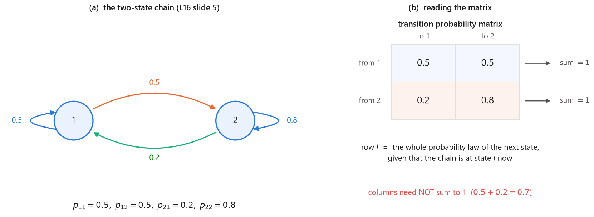
- Check every node. The labels on all arcs leaving a node, self-loop included, must add to $1$. In Fig. 1.1(a): node 1 gives $0.5+0.5=1$, node 2 gives $0.8+0.2=1$.
- Missing arc means impossible transition, not "small probability". An absent arc is a hard zero in the matrix.
- Read structure before reading numbers. Which states can reach which? Are there states you can never leave? This qualitative reading is exactly what §2 formalizes.
- It does not say the past is independent of the future. $X_{n+1}$ and $X_{n-1}$ are in general dependent: knowing $X_{n-1}$ tells you something about $X_n$, which tells you about $X_{n+1}$. The property asserts conditional independence given $X_n$ — the past is redundant only once $X_n$ is known.
- It does not say $\mathbf{P}(X_{n+1}=j\mid X_{n-1}=i)=p_{ij}$. That quantity is a two-step probability, computed below as $r_{ij}(2)$, and it is usually a different number: in Fig. 1.1, $p_{11}=0.5$ but $r_{11}(2)=0.35$ (
A_r11_2). - It does not say the chain must move. $p_{ii}>0$ is allowed and common; staying put is a transition of a special kind, not the absence of one.
- It does not say the state has to be "the physical position". The state is whatever you decide to remember. If the natural physical variable is not Markov, enlarge it (see Practice 1.2) — the Markov property is a property of the pair (system, chosen state), never of the system alone.
- It does not follow from "the driving noise is independent". Independent inputs plus a state that fails to summarize the past still gives a non-Markov process; that is exactly what Practice 1.2 exhibits with i.i.d. coin flips.
Solution. Follow the three-part specification of L16 slide 3.
(a) States. $S=\{1,2\}$ with $1=$ up-to-date, $2=$ behind, and $X_n$ = her status in week $n$. The two states are mutually exclusive and exhaustive by the statement of the problem.
(b) Possible transitions. All four ordered pairs have positive probability, so all four arcs (two of them self-loops) are present.
(c) Numbers. $p_{11}=0.8$, $p_{12}=0.2$, $p_{21}=0.6$, $p_{22}=0.4$, i.e. $$P=\begin{pmatrix}0.8&0.2\\0.6&0.4\end{pmatrix},\qquad \text{row sums } 0.8+0.2=1,\;\;0.6+0.4=1\;\checkmark$$ The phrase "these probabilities do not depend on whether she was up-to-date or behind in previous weeks" is precisely the Markov property being assumed, and "each week" with the same numbers is time homogeneity.
Solution. States: $S=\{1,2,\dots,m\}$, the fly's position, with $X_n$ its position at time $n$. Transitions: for an interior position $i\in\{2,\dots,m-1\}$ the three moves give $$p_{i,i-1}=0.3,\qquad p_{i,i+1}=0.3,\qquad p_{ii}=0.4,$$ and these sum to $0.3+0.3+0.4=1\;\checkmark$. At a spider position the process stops, which we model by making the state absorbing: $$p_{11}=1,\qquad p_{mm}=1 .$$ ("Terminates" and "stays there forever" are indistinguishable for every question we will ask, so the second, more convenient description is the one we adopt.) Why it is Markov: the next position is the current position plus a displacement that is drawn independently of everything else, so once $X_n$ is known the earlier positions add nothing. See Fig. 1.2(a).
The variation that forces a bigger state. Suppose instead that a machine which has stayed broken for $\ell=4$ consecutive days is scrapped and replaced by a new working one. Now "broken" is not a legitimate state: the probability of being working tomorrow depends on how long the machine has already been broken, which the label "broken" does not record. The repair is to enlarge the state to $$S=\{\text{working}\}\cup\{\text{broken for }1\text{ day},\;\text{broken for }2,\;\text{broken for }3,\;\text{broken for }4\},$$ five states, in which the future does depend on the past only through the current label. This is the single most important modeling move in the whole chapter: when the Markov property fails, do not abandon the model — enlarge the state until it holds.
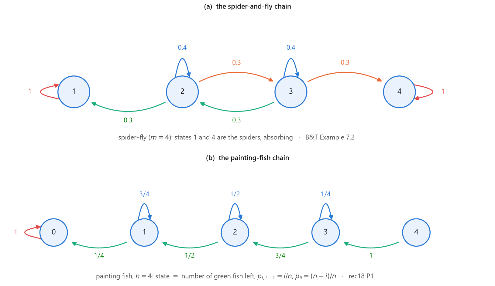
- Propose a state. Ask: what would I have to be told about the past in order to predict the next step? The answer, packaged as one variable, is the candidate state $X_n$. Keep it as small as possible.
- Test the Markov property. Compute $\mathbf{P}(X_{n+1}=j\mid X_n=i,\text{ some specific past})$ for two genuinely different pasts. If the two numbers differ, the candidate fails.
- If it fails, enlarge the state by appending exactly the extra information the answer turned out to depend on (elapsed time in the current condition, phase of a cycle, the previous value, …), then return to step 2.
- Write the $p_{ij}$ from the one-step mechanics of the problem — usually by listing the mutually exclusive things that can happen in one time slot and adding the probabilities of those that land you in $j$. Check every row sums to $1$.
- Draw the diagram and re-check the row sums node by node.
- Compute $r_{ij}(n)$ by the recursion of §1.3, or equivalently by matrix powers.
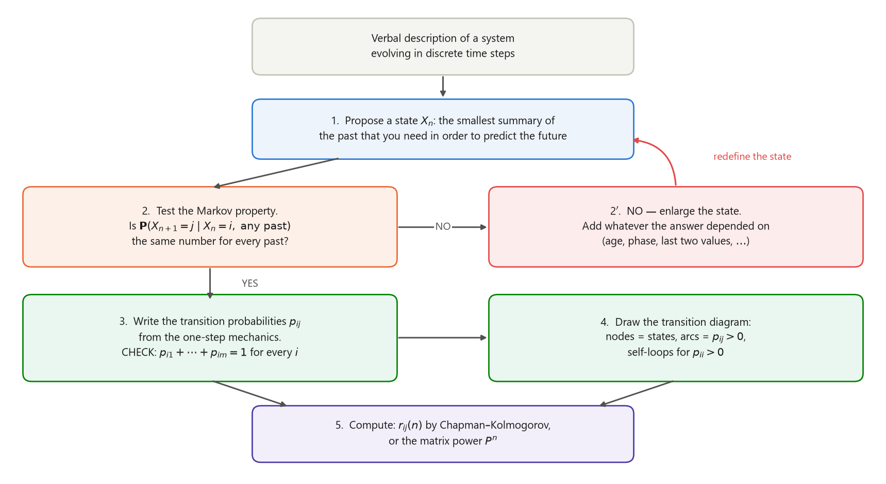
Solution
The two ways to be up-to-date in week 2, starting up-to-date in week 0, are distinguished by the week-1 state, and those two cases are disjoint and exhaustive. By the total probability theorem (G1 §2) applied inside the conditional universe $\{X_0=1\}$,
$$\mathbf{P}(X_2=1\mid X_0=1)=\mathbf{P}(X_1=1\mid X_0=1)\,\mathbf{P}(X_2=1\mid X_1=1,X_0=1)+\mathbf{P}(X_1=2\mid X_0=1)\,\mathbf{P}(X_2=1\mid X_1=2,X_0=1).$$
The Markov property lets us drop "$X_0=1$" from the two rightmost factors, turning them into $p_{11}$ and $p_{21}$:
$$=p_{11}p_{11}+p_{12}p_{21}=(0.8)(0.8)+(0.2)(0.6)=0.64+0.12=0.76$$
(G1_r11_2). Note that this is smaller than $p_{11}=0.8$: over two weeks there is a chance to slip and not recover. The full two-step matrix is $\left(\begin{smallmatrix}0.76&0.24\\0.72&0.28\end{smallmatrix}\right)$ (G1_r_n2), and by $n=10$ both rows have become $(0.75,\,0.25)$ to six decimals (G1_r_n10) — a preview of §1.4.
Solution
Test the property with two different pasts. Condition on $\{X_n=1\}$, which means exactly one of the flips $Z_{n-1},Z_n$ came up heads, i.e. the pair $(Z_{n-1},Z_n)$ is $(1,0)$ or $(0,1)$, each of unconditional probability $1/4$ and hence conditionally equally likely.
- No extra information. $X_{n+1}=Z_n+Z_{n+1}=2$ requires $Z_n=1$ and $Z_{n+1}=1$. Given $X_n=1$ we have $\mathbf{P}(Z_n=1)=1/2$, and $Z_{n+1}$ is an independent fair flip, so $\mathbf{P}(X_{n+1}=2\mid X_n=1)=\tfrac12\cdot\tfrac12=\tfrac14$ (
G5_P_next2_given_Xn1). - Past that says "$X_{n-1}=2$". $X_{n-1}=Z_{n-2}+Z_{n-1}=2$ forces $Z_{n-1}=1$; combined with $X_n=Z_{n-1}+Z_n=1$ this forces $Z_n=0$. Then $X_{n+1}=0+Z_{n+1}\le1$, so
$$\mathbf{P}(X_{n+1}=2\mid X_n=1,\;X_{n-1}=2)=0$$
(
G5_P_next2_given_Xn1_Xnm1_2). - Past that says "$X_{n-1}=0$". Then $Z_{n-1}=0$, so $X_n=1$ forces $Z_n=1$, and $\mathbf{P}(X_{n+1}=2\mid X_n=1,X_{n-1}=0)=\mathbf{P}(Z_{n+1}=1)=1/2$ (
G5_P_next2_given_Xn1_Xnm1_0).
Three different numbers — $1/4$, $0$, $1/2$ — for the same "current state" $X_n=1$. The Markov property fails: $X_n$ is a lossy summary, because it records how many heads but not which of the two flips was the head, and only the most recent flip matters going forward.
Repair (step 3 of the recipe). Take the state to be the ordered pair $Y_n=(Z_{n-1},Z_n)$, four states $(0,0),(0,1),(1,0),(1,1)$. From $Y_n=(a,b)$ the next state is $(b,Z_{n+1})$ with $Z_{n+1}$ an independent fair flip, so
$$p_{(a,b)\to(b,0)}=p_{(a,b)\to(b,1)}=\tfrac12,$$
and all other entries are $0$. Every row has two entries of $1/2$, summing to $1\;\checkmark$ (G5_Penl_rowsums). This is Markov, because the transition law depends on $(a,b)$ only through $b$ and on nothing before. And $X_n=a+b$ is a function of $Y_n$: we recover the quantity of interest as a function of a legitimate state. (In fact $Y$ reaches complete equilibrium in two steps: every entry of $P^2$ equals $1/4$, G5_Penl_r_n2.)
1.2 The checkout counter: building a chain out of its Bernoulli ingredients
Step 1 — the state, and why it is Markov. Take $X_n\in S=\{0,1,\dots,m\}$, the number of customers present at time $n$. What happens during slot $n+1$ is determined by two indicator random variables: $$A_{n+1}=\begin{cases}1,&\text{an arrival occurs in slot }n+1,\\0,&\text{otherwise,}\end{cases} \qquad D_{n+1}=\begin{cases}1,&\text{the customer in service departs in slot }n+1,\\0,&\text{otherwise,}\end{cases}$$ with $\mathbf{P}(A_{n+1}=1)=p$ and, provided the counter is busy, $\mathbf{P}(D_{n+1}=1)=q$. By the defining assumptions of the Bernoulli process and of the geometric (memoryless) service time, $A_{n+1}$ and $D_{n+1}$ are independent of each other and of the entire history $X_0,\dots,X_n$. Since $$X_{n+1}=X_n+A_{n+1}-D_{n+1}\qquad\text{(subject to the boundary rules below),}$$ the conditional law of $X_{n+1}$ given the past depends on the past only through $X_n$ — that is the Markov property, verified rather than assumed. Note where the memorylessness is used: because the residual service time is geometric, the probability that the current service ends in this slot is $q$ no matter how long the customer has already been in service. Had the service time been, say, deterministic and equal to $3$, the number in queue would not be Markov, and we would need to enlarge the state to (number in queue, elapsed service time) exactly as in Example 1.3.
Step 2 — the interior transition probabilities. Fix a state $i$ with $1\le i\le m-1$: the counter is busy (so a departure is possible) and not full (so an arrival is accepted). The four combinations of $(A_{n+1},D_{n+1})$ are disjoint and exhaustive, and by independence their probabilities multiply:
| $(A,D)$ | probability | next state |
| $(1,0)$ arrival, no departure | $p(1-q)$ | $i+1$ |
| $(0,1)$ departure, no arrival | $(1-p)q$ | $i-1$ |
| $(1,1)$ one in, one out | $pq$ | $i$ |
| $(0,0)$ nothing happens | $(1-p)(1-q)$ | $i$ |
Step 3 — the boundary state $i=0$. With nobody at the counter nobody is in service, so no departure is possible: $D_{n+1}\equiv 0$. Only the arrival indicator matters, and $$p_{01}=p,\qquad p_{00}=1-p,$$ which sum to $1\;\checkmark$. This is the one place where the interior formula would be wrong: $p(1-q)<p$, because the factor $1-q$ in the interior formula is the probability that the customer already in service does not depart, and at state $0$ there is no such customer — $D_{n+1}\equiv0$, so the factor is simply not there. (It is not that the arriving customer might be served away in its own slot: the model never serves an arrival in its arrival slot, in any state; see Practice 1.9.)
Step 4 — the boundary state $i=m$. The counter is full, so the upward move is impossible: whatever happens, the state cannot exceed $m$. A departure is possible as usual, and by the within-slot rule stated with the problem the departure is processed first, so an arrival in the same slot finds the freed place and is accepted; only an arrival that meets no departure is turned away. Going through the same four cases as in Step 2: $(0,1)$, probability $q(1-p)$, lands at $m-1$; $(1,1)$, probability $pq$, is one out and one in and lands back at $m$; $(0,0)$ and $(1,0)$, probabilities $(1-p)(1-q)$ and $p(1-q)$, leave the count at $m$, the second because that arrival is blocked. Hence the state drops exactly in the single case $(0,1)$: $$p_{m,m-1}=q(1-p),\qquad p_{mm}=pq+(1-p)(1-q)+p(1-q)=1-q(1-p),$$ again summing to $1\;\checkmark$ — the interior row with the up-arc folded into the self-loop, which is what makes the boundary consistent with the interior. (The slide draws exactly this shape: a self-loop at state $10$ and only a downward arc leaving it. Had we instead blocked the arrival on sight, before the departure is processed, the row would be $p_{m,m-1}=q$, $p_{mm}=1-q$; see the Gotcha.)
Step 5 — read the structure. Every transition moves the state by at most one unit. A chain with this property is a birth–death chain; §3 exploits the structure to solve for steady-state probabilities in closed form. Notice also the qualitative content of the two interior numbers: the chain drifts up when $p(1-q)>q(1-p)$, i.e. when $p>q$, and drifts down when $p<q$. The condition is exactly "arrival rate below service rate", as it should be.
![A row of circular nodes labelled 0, 1, 2, 3, then an ellipsis, then m minus 1 and m. Each node has a self-loop above it. Between adjacent nodes an upper arc points right labelled p times one minus q, and a lower arc points left labelled q times one minus p. The arc from state 0 to state 1 is labelled p alone, the self-loop at 0 is labelled one minus p, the interior self-loops are labelled p q plus one minus p times one minus q, and the self-loop at state m is labelled one minus q times one minus p.](img/g5_s1_checkout.png)
- An arriving customer may be served in the slot in which it arrives. Then at an empty counter the arrival can come and go within slot $n+1$, giving $p_{01}=p(1-q)$ and $p_{00}=1-p(1-q)$. The interior rows are unaffected. Practice 1.9 works this out and contrasts it with the convention adopted here.
- An arrival is blocked on sight, before the departure is processed. Then a full counter turns the arrival away even when someone departs in the same slot, and the boundary row becomes $p_{m,m-1}=q$, $p_{mm}=1-q$ — the state now falls from $m$ whenever there is a departure, so with $p=0.2,q=0.4$ one would get $0.40$ and $0.60$ in place of $0.32$ and $0.68$.
Transition probabilities. Substituting into the boxed formulas,
$$p_{i,i+1}=p(1-q)=(0.2)(0.6)=0.12,\qquad p_{i,i-1}=q(1-p)=(0.4)(0.8)=0.32,$$
$$p_{ii}=pq+(1-p)(1-q)=(0.2)(0.4)+(0.8)(0.6)=0.08+0.48=0.56$$
for $1\le i\le9$ (B_p_up, B_p_down, B_p_self); the same number arises as $1-0.12-0.32=0.56\;\checkmark$ (B_p_self_check). At the boundaries $p_{00}=1-0.2=0.8$, $p_{01}=0.2$, and $p_{10,9}=0.32$, $p_{10,10}=1-0.32=0.68$ (B_p00, B_p01, B_pmm). All eleven rows sum to $1$ to machine precision (B_rowsums_max_dev $=0$).
One step from empty. $r_{0j}(1)=p_{0j}$, i.e. $(0.8,\,0.2,\,0,\dots)$.
Two steps from empty, computed by hand from the recursion of §1.3 and confirmed numerically:
$$r_{00}(2)=p_{00}p_{00}+p_{01}p_{10}=(0.8)(0.8)+(0.2)(0.32)=0.64+0.064=0.704,$$
$$r_{01}(2)=p_{00}p_{01}+p_{01}p_{11}=(0.8)(0.2)+(0.2)(0.56)=0.16+0.112=0.272,$$
$$r_{02}(2)=p_{01}p_{12}=(0.2)(0.12)=0.024 ,$$
and $0.704+0.272+0.024=1\;\checkmark$ (B_r0j_n2). States $3,\dots,10$ are unreachable in two steps because the chain moves at most one unit per slot.
Long run. At $n=100$ the distribution has settled to $(0.500044,\,0.312522,\,0.117187,\,0.043937,\,0.016470,\dots)$ with expected queue length $0.799514$ customers (B_r0j_n100, B_mean_n100). Since $p<q$ the queue stays short. Now take $p=0.5$, $q=0.3$, so that arrivals outrun service and $p_{i,i+1}=0.35>0.15=p_{i,i-1}$, and by $n=100$ the mass has piled up against the buffer: $\mathbf{P}(X_{100}=10)=0.565348$ and the mean is $9.215959$ (B2_r0j_n100, B2_mean_n100). The buffer is what keeps the chain finite; with an infinite buffer and $p>q$ the queue would grow without bound (B&T §7.3, discussion following Example 7.9).
Solution
The probability of leaving state $0$ in one step is $1-p_{00}=p$. The probability of leaving an interior state $i$ is $$1-p_{ii}=p(1-q)+q(1-p)=p+q-2pq .$$ So state $0$ is more escapable exactly when $p>p+q-2pq$, i.e. $0>q-2pq=q(1-2p)$, i.e. (since $q>0$) when $1-2p<0$, i.e. $p>1/2$.
Interpretation: an interior state can be left in two ways (someone arrives, or someone leaves), a boundary state in only one. Unless arrivals are very frequent ($p>1/2$), having two exits makes interior states the less sticky ones. With the numbers of Example 1.5, $p=0.2$ gives escape probabilities $0.2$ from state $0$ against $1-0.56=0.44$ from an interior state — the empty state is much stickier, which is why it holds half the probability at $n=100$.
Solution
Model. $S=\{0,1,2,3\}$ = current fortune in dollars, $X_n$ = fortune after $n$ rounds. States $0$ and $3$ are absorbing ($p_{00}=p_{33}=1$) because play stops there. For $i=1,2$: $p_{i,i+1}=0.6$, $p_{i,i-1}=0.4$, and $p_{ii}=0$ — every round changes the fortune. Rows: $0.6+0.4=1\;\checkmark$. The rounds are independent and the payoff depends only on the current round, so the Markov property holds with the fortune as state.
Two steps from $\$1$. The only route to $\$3$ in two rounds is win-then-win, so $\mathbf{P}(X_2=3\mid X_0=1)=p_{12}p_{23}=(0.6)(0.6)=0.36$ (G4_r13_2). Similarly the chain is at $\$0$ if the first round is a loss ($0.4$, then absorbed), and at $\$2$ only via win-then-lose ($0.6\times0.4=0.24$). The full row is
$$\big(r_{10}(2),r_{11}(2),r_{12}(2),r_{13}(2)\big)=(0.4,\;0.24,\;0,\;0.36),$$
which sums to $1\;\checkmark$ (G4_r1j_n2). Note $r_{12}(2)=0$: with no self-transitions at $1$ and $2$ every round that is actually played changes the fortune by exactly $\pm\$1$, so until absorption $X_n\equiv X_0+n\pmod2$ — the fortune has the parity of $X_0+n$, not of $n$. Here $X_0=1$, so an unabsorbed fortune is odd at even $n$; the even value $\$2$ is therefore unreachable at $n=2$, while the even value $\$0$ is reachable only because the chain was absorbed there at $n=1$ and stopped alternating. That is the periodicity phenomenon §2 names.
1.3 $n$-step transition probabilities and the Chapman–Kolmogorov recursion
Two boundary values are forced by the definition and are the initial conditions of the recursion below. The slide does not write them (a [DERIVATION GAP]), so we do.
- $n=0$: $r_{ij}(0)=\mathbf{P}(X_0=j\mid X_0=i)$, which is $1$ if $j=i$ and $0$ otherwise. In symbols $r_{ij}(0)=\delta_{ij}$, the Kronecker delta. As a matrix this is the identity $I$.
- $n=1$: $r_{ij}(1)=\mathbf{P}(X_1=j\mid X_0=i)=p_{ij}$ by definition of the transition probabilities.
Derivation, every step ([DERIVATION GAP] on L16 slide 4 filled). Work throughout inside the conditional universe defined by the event $\{X_0=i\}$, which has positive probability. Inside it, all the axioms and theorems of G1 apply verbatim.
(1) Partition on the state one step before the end. The events $\{X_{n-1}=k\}$, for $k=1,\dots,m$, are disjoint and their union is the certain event, because at time $n-1$ the chain occupies exactly one of the $m$ states. The total probability theorem (G1 §2), applied in the universe $\{X_0=i\}$, gives $$\mathbf{P}(X_n=j\mid X_0=i)=\sum_{k=1}^{m}\mathbf{P}(X_{n-1}=k\mid X_0=i)\;\mathbf{P}(X_n=j\mid X_{n-1}=k,\;X_0=i).$$ Every term with $\mathbf{P}(X_{n-1}=k\mid X_0=i)=0$ contributes nothing and may be assigned any value for the second factor, so the formula is safe.
(2) Identify the first factor. By the definition above, $\mathbf{P}(X_{n-1}=k\mid X_0=i)=r_{ik}(n-1)$.
(3) Simplify the second factor by the Markov property. The conditioning event names the state at time $n-1$ and a piece of earlier history, namely $X_0=i$. The Markov property says precisely that once $X_{n-1}=k$ is given, any additional information about times $0,\dots,n-2$ is irrelevant: $$\mathbf{P}(X_n=j\mid X_{n-1}=k,\;X_0=i)=\mathbf{P}(X_n=j\mid X_{n-1}=k)=p_{kj},$$ the last equality by time homogeneity (the one-step probabilities are the same at every time).
(4) Substitute. $$r_{ij}(n)=\sum_{k=1}^{m}r_{ik}(n-1)\,p_{kj}. \qquad\blacksquare$$
The picture on the slide is exactly this computation: fan out from $i$ to every possible state $k$ at time $n-1$ (weights $r_{ik}(n-1)$), then take one more step from each $k$ into $j$ (weights $p_{kj}$), and add the products.
![A three-column trellis. A single node labelled i at time zero, three nodes labelled 1, k and m stacked vertically at time n minus one with vertical ellipses between them, and a single node labelled j at time n. Blue arrows fan from i to each middle node labelled r i one of n minus one, r i k of n minus one and r i m of n minus one; green arrows converge from the middle nodes to j labelled p one j, p k j and p m j. Below, the formula r i j of n equals the sum over k of r i k of n minus one times p k j.](img/g5_s1_trellis.png)
- Backward form (condition on the state at time $1$ instead of at time $n-1$): $\;r_{ij}(n)=\sum_{k=1}^m p_{ik}\,r_{kj}(n-1)$. The derivation is identical, partitioning on $X_1$ rather than on $X_{n-1}$ and using the Markov property to detach the first step.
- General form: for any $n,s\ge0$, $\;r_{ij}(n+s)=\sum_{k=1}^m r_{ik}(n)\,r_{kj}(s)$ — split the journey at time $n$. Numerically, $r(7)$ and $r(3)r(4)$ agree to machine precision for the chain of Fig. 1.1 (
A_CK_general_maxerr$=0$). - Matrix form: writing $R(n)$ for the matrix with entries $r_{ij}(n)$, the recursion is the matrix product $R(n)=R(n-1)P$ with $R(0)=I$, hence $$R(n)=P^{\,n}.$$ Everything about $n$-step behavior is a statement about powers of $P$. This is what makes the numerical work of §1.4 a two-line computation.
- $r_{ij}$, not $r_{ji}$. The first index is where you started, the second is where you end up. Rows of $P$ and of $P^n$ are starting states; columns are destinations. Getting this backwards silently transposes every answer.
- Distributions are row vectors and multiply on the left: $\pi(n)=\pi(0)P^n$, never $P^n\pi(0)$. The row-sums-to-one convention forces this.
- Rows of $P^n$ still sum to $1$; columns still need not. Indeed $P^n$ is itself a legitimate transition matrix (of the chain observed every $n$ steps).
- $r_{ij}(n)$ is not the probability of a path. It sums over all paths of length $n$ from $i$ to $j$. The probability of one specific path $i\to k_1\to\cdots\to j$ is the product $p_{ik_1}\cdots p_{k_{n-1}j}$ of its arc labels (B&T §7.1) — a single term in that sum.
- $r_{ij}(n)\ne p_{ij}^{\,n}$. Raising the individual number to a power is not raising the matrix to a power; in Fig. 1.1, $r_{11}(2)=0.35$ while $p_{11}^2=0.25$.
- Small $n$, few reachable states, or you want insight: enumerate paths. List every sequence of $n$ arcs from $i$ to $j$, multiply the labels along each, add. Best when the diagram is sparse (Practice 1.4, rec18 P3).
- Moderate $n$: iterate $R(n)=R(n-1)P$ one row at a time. You never need the full matrix if you only want one starting state — propagate the single row $\pi(n)=\pi(n-1)P$.
- Large $n$, or you want the limit: use the matrix power $P^n$ (numerically) or diagonalize. For a two-state chain the closed form of §1.4 is available; for general chains §3 obtains the limit directly from balance equations, without ever computing a power.
- Always sanity check: each computed row must sum to $1$; entries that require more than $n$ "steps of distance" on the diagram must be $0$.
Solution
Rows. $0.5+0.3+0.2=1$, $0+0.6+0.4=1$, $0.4+0+0.6=1\;\checkmark$ (G3_P_rowsums).
Two steps from state 1, using $r_{1j}(2)=\sum_k p_{1k}p_{kj}$:
$$r_{11}(2)=(0.5)(0.5)+(0.3)(0)+(0.2)(0.4)=0.25+0+0.08=0.33,$$
$$r_{12}(2)=(0.5)(0.3)+(0.3)(0.6)+(0.2)(0)=0.15+0.18+0=0.33,$$
$$r_{13}(2)=(0.5)(0.2)+(0.3)(0.4)+(0.2)(0.6)=0.10+0.12+0.12=0.34 .$$
Sum $0.33+0.33+0.34=1\;\checkmark$ (G3_r_n2).
Three steps. Apply the recursion once more, $r_{13}(3)=\sum_k r_{1k}(2)p_{k3}$:
$$r_{13}(3)=(0.33)(0.2)+(0.33)(0.4)+(0.34)(0.6)=0.066+0.132+0.204=0.402$$
(G3_r13_3). The alternative route $r_{13}(3)=\sum_k p_{1k}r_{k3}(2)$ (backward form) gives the same $0.402$, and the matrix identity $P^3=P\cdot P^2$ holds to machine precision (G3_CK_err).
Solution
Write $\pi(0)=(0.5,\,0.5)$. By the random-initial-state formula,
$$\mathbf{P}(X_1=1)=\mathbf{P}(X_0=1)p_{11}+\mathbf{P}(X_0=2)p_{21}=(0.5)(0.9)+(0.5)(0.5)=0.45+0.25=0.70 ,$$
so $\pi(1)=(0.70,\,0.30)$ (G2_dist_n1). Propagate one more step, using $\pi(1)$ as the new initial distribution — legitimate because the chain is time-homogeneous:
$$\mathbf{P}(X_2=1)=(0.70)(0.9)+(0.30)(0.5)=0.63+0.15=0.78 ,$$
giving $\pi(2)=(0.78,\,0.22)$ (G2_dist_n2). Cross-check via $r_{ij}(2)$: $r_{11}(2)=(0.9)(0.9)+(0.1)(0.5)=0.81+0.05=0.86$ and $r_{21}(2)=(0.5)(0.9)+(0.5)(0.5)=0.70$ (G2_r_n2), so $\mathbf{P}(X_2=1)=0.5(0.86)+0.5(0.70)=0.43+0.35=0.78\;\checkmark$. Both routes are the same sum, bracketed differently. The long-run values are $5/6\approx0.833333$ and $1/6$ (G2_limit), derived in §3.
1.4 The two-state chain computed: filling in L16 slide 5
$n=0$. By the initial condition, $r_{11}(0)=1$, $r_{12}(0)=0$, $r_{21}(0)=0$, $r_{22}(0)=1$.
$n=1$. By definition $r_{ij}(1)=p_{ij}$: $\;r_{11}(1)=0.5,\;r_{12}(1)=0.5,\;r_{21}(1)=0.2,\;r_{22}(1)=0.8$.
$n=2$, by Chapman–Kolmogorov. Each entry is a two-term sum over the state at time $1$:
$$r_{11}(2)=r_{11}(1)p_{11}+r_{12}(1)p_{21}=(0.5)(0.5)+(0.5)(0.2)=0.25+0.10=0.35,$$
$$r_{12}(2)=r_{11}(1)p_{12}+r_{12}(1)p_{22}=(0.5)(0.5)+(0.5)(0.8)=0.25+0.40=0.65,$$
$$r_{21}(2)=r_{21}(1)p_{11}+r_{22}(1)p_{21}=(0.2)(0.5)+(0.8)(0.2)=0.10+0.16=0.26,$$
$$r_{22}(2)=r_{21}(1)p_{12}+r_{22}(1)p_{22}=(0.2)(0.5)+(0.8)(0.8)=0.10+0.64=0.74 .$$
Row checks: $0.35+0.65=1$ and $0.26+0.74=1\;\checkmark$ (A_r_n2).
A closed form, so that $n=100$ needs no iteration. Because there are only two states, $r_{12}(n)=1-r_{11}(n)$, and the forward recursion for the first column collapses to a single scalar recursion:
$$r_{11}(n)=r_{11}(n-1)p_{11}+r_{12}(n-1)p_{21}=r_{11}(n-1)(0.5)+\big(1-r_{11}(n-1)\big)(0.2)=0.2+0.3\,r_{11}(n-1),$$
where in the last step we expanded and collected: $0.5\,r_{11}(n-1)-0.2\,r_{11}(n-1)=0.3\,r_{11}(n-1)$. This is an affine recursion $x_n=a+\lambda x_{n-1}$ with $a=0.2$ and
$$\lambda=p_{11}+p_{22}-1=0.5+0.8-1=0.3$$
(A_lambda2; it is the second eigenvalue of $P$, the first being $1$ — A_eigs). Its fixed point $x^{*}$ solves $x^{*}=0.2+0.3x^{*}$, i.e. $0.7x^{*}=0.2$, i.e.
$$x^{*}=\frac{0.2}{0.7}=\frac{2}{7}=0.285714\ldots$$
Subtracting the fixed-point equation from the recursion gives $x_n-x^{*}=\lambda\,(x_{n-1}-x^{*})$, a pure geometric decay, hence by induction $x_n-x^{*}=\lambda^n(x_0-x^{*})$. With $x_0=r_{11}(0)=1$:
$$\boxed{\;r_{11}(n)=\frac27+\frac57\,(0.3)^n\;}\qquad\text{and, starting instead from }x_0=r_{21}(0)=0,\qquad r_{21}(n)=\frac27-\frac27\,(0.3)^n .$$
Sanity checks: $r_{11}(1)=\frac27+\frac57(0.3)=\frac{2+1.5}{7}=\frac{3.5}{7}=0.5\;\checkmark$; $r_{11}(2)=\frac27+\frac57(0.09)=\frac{2+0.45}{7}=\frac{2.45}{7}=0.35\;\checkmark$; $r_{21}(1)=\frac27-\frac27(0.3)=\frac27(0.7)=0.2\;\checkmark$. The closed form agrees with the matrix powers to within $4\times10^{-16}$ over all the $n$ tabulated (A_closedform_maxerr_r11, A_closedform_maxerr_r21).
$n=100$ and $n=101$. $(0.3)^{100}\approx5.2\times10^{-53}$ (A_lam_pow100), which is far below double precision. Hence, to every decimal that means anything,
$$r_{11}(100)=r_{21}(100)=r_{11}(101)=r_{21}(101)=\frac27=0.285714,\qquad r_{12}=r_{22}=\frac57=0.714286$$
(A_r11_100, A_r21_100, A_r11_101, A_r22_101).
The completed table.
| $n=0$ | $n=1$ | $n=2$ | $n=100$ | $n=101$ | |
| $r_{11}(n)$ | $1$ | $0.5$ | $0.35$ | $0.285714$ | $0.285714$ |
| $r_{12}(n)$ | $0$ | $0.5$ | $0.65$ | $0.714286$ | $0.714286$ |
| $r_{21}(n)$ | $0$ | $0.2$ | $0.26$ | $0.285714$ | $0.285714$ |
| $r_{22}(n)$ | $1$ | $0.8$ | $0.74$ | $0.714286$ | $0.714286$ |
All values from A_r_n0…A_r_n101; the intermediate matrices are $R(3)=\left(\begin{smallmatrix}0.305&0.695\\0.278&0.722\end{smallmatrix}\right)$, $R(5)=\left(\begin{smallmatrix}0.28745&0.71255\\0.28502&0.71498\end{smallmatrix}\right)$, $R(10)=\left(\begin{smallmatrix}0.2857185&0.7142815\\0.2857126&0.7142874\end{smallmatrix}\right)$.

- $r_{ij}(n)$ converges. The numbers stop moving: by $n=10$ they agree with the limit in five decimals ($r_{11}(10)=0.2857185$ against $2/7=0.2857143$, a gap of $4.2\times10^{-6}$,
A_gap_n10), and the sixth decimal is settled by $n=12$ (gap $3.8\times10^{-7}$,A_gap_n12). The chain forgets its own past. - The limit does not depend on the starting state. Row 1 and row 2 of $P^{100}$ are identical. Where you began is washed out entirely — which is why one may speak of "the" steady-state probability of a state, the subject of §3.
- $n=100$ and $n=101$ agree. There is no oscillation; the chain is aperiodic. The slide contrasts this with a periodic chain (Example 1.7) precisely to show that convergence is not automatic.
Solution. Read the structure: from state $2$ you must move to $1$ or to $3$; from either of those you must move back to $2$. So the chain alternates strictly between $\{2\}$ and $\{1,3\}$. If $X_0=2$ then $X_n=2$ exactly when $n$ is even, with certainty, and $X_n\in\{1,3\}$ with certainty when $n$ is odd. Hence
$$\boxed{\;r_{22}(n)=0\ \text{ for }n\text{ odd},\qquad r_{22}(n)=1\ \text{ for }n\text{ even}.\;}$$
Numerically, $r_{22}(n)$ for $n=0,1,\dots,10$ is $1,0,1,0,1,0,1,0,1,0,1$ (F_r22_n0to10). The sequence has two limit points and therefore no limit: periodicity destroys convergence. Note that this happens even though the chain is perfectly well behaved otherwise — every state is visited over and over. §2 gives the general criterion.
$r_{11}(n)=1$ for every $n$. State $1$ is absorbing, so $\mathbf{P}(X_1=1\mid X_0=1)=p_{11}=1$, and by induction $r_{11}(n)=r_{11}(n-1)p_{11}=1$ (F_r11_any_n).
$r_{31}(n)=0$ for every $n$. From state $3$ the only arcs go to $3$ or $4$, and from $4$ only to $3$ or $4$. No path of any length leads from $3$ to $1$, so every term in the path sum is zero (F_r31_any_n).
$r_{21}(n)$ — a genuine computation. Starting at $2$, the chain stays at $2$ for a while and then leaves, once and for all, to either $1$ or $3$. To be at $1$ at time $n$ it must have left to $1$ at some step $k\le n$ (after which it stays at $1$ forever). The event "stay at $2$ for the first $k-1$ steps, then jump to $1$ on step $k$" has probability $(0.4)^{k-1}(0.3)$, by multiplying the arc labels along the path, and these events are disjoint across $k$. Therefore
$$r_{21}(n)=\sum_{k=1}^{n}(0.4)^{k-1}(0.3)=0.3\cdot\frac{1-(0.4)^n}{1-0.4}=\frac{0.3}{0.6}\big(1-(0.4)^n\big)=\frac12\big(1-(0.4)^n\big),$$
using the finite geometric sum $\sum_{k=1}^{n}x^{k-1}=(1-x^n)/(1-x)$ with $x=0.4$. Values: $r_{21}(1)=0.3$, $r_{21}(2)=0.42$, $r_{21}(5)=0.49488$, $r_{21}(10)=0.499948$ (F_r21_n0to12), so
$$\lim_{n\to\infty}r_{21}(n)=\tfrac12 .$$
The limit is the symmetric split of the two equal escape probabilities $0.3$ and $0.3$, as the slide's design intends. Notice what did not enter this calculation: the unlabelled probabilities inside $\{3,4\}$ are irrelevant, since the chain can never return to $2$ from there. Filling them in arbitrarily and computing $P^n$ numerically reproduces $\frac12(1-0.4^n)$ to $6\times10^{-17}$ (F_r21_completion_maxerr).
What the three answers show together. $r_{11}(n)\to1$, $r_{31}(n)\to0$, $r_{21}(n)\to1/2$: three different limits for the same state $1$, depending only on where the chain started. When a chain has more than one "trap", the limit remembers the initial state — the second of the two failure modes on slide 6. §2 names the traps (recurrent classes) and §4 computes the splitting probabilities like $1/2$ in general.
Solution
From state $2$ the one-step row is $(0.3,\,0.4,\,0.3,\,0)$. Apply the recursion $r_{2j}(2)=\sum_k r_{2k}(1)p_{kj}$, remembering $p_{11}=1$ and $p_{44}=1$:
$$r_{21}(2)=(0.3)(1)+(0.4)(0.3)=0.3+0.12=0.42,$$
$$r_{22}(2)=(0.4)(0.4)+(0.3)(0.3)=0.16+0.09=0.25,$$
$$r_{23}(2)=(0.4)(0.3)+(0.3)(0.4)=0.12+0.12=0.24,$$
$$r_{24}(2)=(0.3)(0.3)=0.09 .$$
Sum: $0.42+0.25+0.24+0.09=1\;\checkmark$ (C_r2j_n2).
Limit. The interior mass leaks away into the two absorbing states: at $n=10$ the row is $(0.652543,\,0.014124,\,0.014124,\,0.319210)$ and by $n=50$ it is $(2/3,\,0,\,0,\,1/3)$ to six decimals (C_r2j_n10, C_r2j_n50). So $\mathbf{P}(\text{caught by the left spider}\mid X_0=2)=2/3$. Here the limit certainly depends on where you start (from state $3$ it would be $1/3$ and $2/3$ by symmetry) — Example 1.8's second failure mode again. §4 computes such absorption probabilities directly, by solving a small linear system instead of taking powers.
1.5 Recitation 18: modeling, and probabilities by inspection
Recitation 18 has two problems for this section: P1 builds a chain from a verbal description (Example 1.9) and P3 reads probabilities off a given diagram (Example 1.10). Nothing has been skipped in between — the recitation itself has no problem 2: it was a textbook problem (Drake, Fundamentals of Applied Probability Theory, Problem 5.02) removed from the OCW PDFs for copyright reasons, and both the problem sheet and the solutions jump straight from 1 to 3.
Solution
(a) The model — filling the [SOLUTION GAP] that the official solution leaves (it argues the Markov property verbally but never writes the state space or the initial state).
State space. Let $X_k$ denote the number of green fish remaining after day $k$. Since fish are only ever painted from green to blue and never back, $X_k\in S=\{0,1,2,\dots,n\}$, a finite set of $n+1$ states. The event $G_i$ of the problem statement is $\{X_k=i\}$. Initial state. $X_0=g_0$, the number of green fish in the lake before any fishing, which is given data.
Why the Markov property holds. On day $k+1$ Helen picks one fish uniformly at random from the $n$ fish in the lake, independently of all previous days. Given $X_k=i$, the lake contains $i$ green fish and $n-i$ blue ones, and $$X_{k+1}=X_k-\mathbb{1}\{\text{the fish caught on day }k+1\text{ is green}\},$$ where $\mathbb{1}\{\cdot\}$ is the indicator of the event in braces. The probability that the caught fish is green is $i/n$, and this number depends on the history only through $i$ — the identities of the fish, the order in which they were painted, and how many days have elapsed are all irrelevant, because each day's catch is uniform over the current lake and independent of the past. Hence $$\mathbf{P}(X_{k+1}=j\mid X_k=i,X_{k-1}=i_{k-1},\dots,X_0=i_0)=\mathbf{P}(X_{k+1}=j\mid X_k=i),$$ which is exactly the Markov property as stated in §1.1. Time homogeneity holds too, since the number of fish in the lake is always $n$.
(b) The transition probabilities. Fix a state $i\in\{0,1,\dots,n\}$. Exactly one of two disjoint and exhaustive things happens on the next day.
- A green fish is caught — probability $i/n$, since $i$ of the $n$ equally likely fish are green. It is painted blue, so the green count drops by one: the next state is $i-1$.
- A blue fish is caught — probability $(n-i)/n$. Nothing changes (a blue fish is thrown back unpainted), so the next state is $i$ again.
Therefore $$p_{ij}=\begin{cases}\dfrac{i}{n},&j=i-1,\\[8pt] \dfrac{n-i}{n},&j=i,\\[8pt] 0,&\text{otherwise},\end{cases}\qquad 0\le i,j\le n .$$ In particular $p_{ij}=0$ whenever $j>i$: a blue fish is never repainted green, so the green count can never increase. Row check: $\frac{i}{n}+\frac{n-i}{n}=\frac{i+n-i}{n}=\frac{n}{n}=1\;\checkmark$ for every $i$, including the boundary cases $i=0$ (where the first term vanishes and $p_{00}=n/n=1$) and $i=n$ (where the second vanishes and $p_{n,n-1}=1$). The verification $p_{00}=1$ is a second [SOLUTION GAP] the official solution flags but does not do; it follows from the formula with $i=0$, and it says state $0$ is absorbing — once the lake is all blue, it stays all blue.
[SOURCE TYPO?] The official solution writes "For $0\le i,j\le k$", but $k$ is never defined in this problem; the intended range is $0\le i,j\le n$, the number of fish in the lake. We use $n$ throughout.
Numbers, with $n=4$ (Fig. 1.2b). The matrix is
$$P=\begin{pmatrix}1&0&0&0&0\\ 1/4&3/4&0&0&0\\ 0&1/2&1/2&0&0\\ 0&0&3/4&1/4&0\\ 0&0&0&1&0\end{pmatrix}$$
(D_P), lower triangular exactly because $p_{ij}=0$ for $j>i$; all five rows sum to $1$ (D_rowsums_max_dev $=0$). Starting from all four fish green, $r_{4j}(2)=(0,0,0.75,0.25,0)$ — from state $4$ the next catch is certainly green (there are no blue fish yet), and then the state drops again with probability $3/4$ (D_r4j_n2). After $30$ days $\mathbf{P}(X_{30}=0)=0.999286$ (D_r4j_n30).
A one-line consequence, using G4. Since $X_{k+1}=X_k-\mathbb{1}\{\text{green caught}\}$ and $\mathbb{E}\big[\mathbb{1}\{\text{green caught}\}\mid X_k=i\big]=i/n$,
$$\mathbb{E}[X_{k+1}\mid X_k]=X_k-\frac{X_k}{n}=X_k\Big(1-\frac1n\Big),$$
and the law of iterated expectations (G4 §1) gives $\mathbb{E}[X_{k}]=X_0(1-1/n)^{k}$. With $n=4$, $X_0=4$ and $k=10$ this predicts $4(0.75)^{10}=0.225254$, which matches the mean computed from $P^{10}$ exactly (D_mean_green_n10, D_mean_green_formula_n10). The green fish disappear geometrically, never quite reaching zero in expectation but reaching it with probability tending to $1$.
Solution
Preliminary: check the diagram. Row sums, node by node: $s_0$: $\frac13+\frac13+\frac13=1$; $s_1$: $1$; $s_2$: $\frac12+\frac12=1$; $s_3$: $\frac14+\frac14+\frac12=1$; $s_4$: $\frac12+\frac12=1$; $s_5$: $1$ (E_rowsums_max_dev $=0$). States $s_1$ and $s_5$ are absorbing. The only way into $s_2$ is from $s_3$; the only way into $s_3$ is the very first trial.
(a) First entry into $s_2$ on trial $k$. Let $A_k$ be that event. Reading the diagram: $s_2$ can only be entered from $s_3$, and $s_3$ can only be entered from $s_0$ on the first trial. So the only path is
$$s_0\;\xrightarrow{\ \text{trial }1\ }\;s_3\;\xrightarrow{\ \text{trials }2,\dots,k-1\ }\;s_3\;\xrightarrow{\ \text{trial }k\ }\;s_2 ,$$
i.e. jump to $s_3$ on trial 1, take the self-loop at $s_3$ on each of the next $k-2$ trials, then move to $s_2$ on trial $k$. Multiplying the arc labels along this single path,
$$\mathbf{P}(A_k)=p_{03}\cdot p_{33}^{\,k-2}\cdot p_{32}=\frac13\left(\frac14\right)^{k-2}\frac14=\frac13\left(\frac14\right)^{k-1},\qquad k=2,3,\dots$$
and $\mathbf{P}(A_k)=0$ for $k\le1$ (one trial cannot reach $s_2$). Values: $\mathbf{P}(A_2)=\frac1{12}=0.083333$, $\mathbf{P}(A_3)=\frac1{48}=0.020833$ (E_a_k2, E_a_k3). A dynamic-programming computation that propagates the distribution while killing all paths that have already visited $s_2$ reproduces these exactly for $k=2,\dots,8$ (E_a_dp_check_maxerr $=0$).
Total probability of ever entering $s_2$. The $A_k$ are disjoint (a first entry happens at exactly one trial), so
$$\mathbf{P}(\text{ever enter }s_2)=\sum_{k=2}^{\infty}\frac13\left(\frac14\right)^{k-1}=\frac13\sum_{r=1}^{\infty}\left(\frac14\right)^{r}=\frac13\cdot\frac{1/4}{1-1/4}=\frac13\cdot\frac{1/4}{3/4}=\frac13\cdot\frac13=\frac19,$$
where we substituted $r=k-1$ and used the geometric series $\sum_{r\ge1}x^r=x/(1-x)$ with $x=1/4$ (E_a_sum, $=0.111111$). Notice that this is $\mathbf{P}(s_0\to s_3)\times\mathbf{P}(\text{leave }s_3\text{ to }s_2)=\frac13\cdot\frac13$: the second factor is the probability that, when the chain finally moves off $s_3$, it moves to $s_2$ rather than $s_4$.
(b) The process never enters $s_4$. Let $A$ be that event. The first trial splits into three equally likely cases.
- $s_0\to s_1$ (probability $\frac13$). $s_1$ is absorbing, so $s_4$ is never reached. Contributes $\frac13$.
- $s_0\to s_5$ (probability $\frac13$). $s_5$ is absorbing. Contributes $\frac13$.
- $s_0\to s_3$ (probability $\frac13$). From $s_3$ the chain eventually leaves (see below) either to $s_2$ — after which it can only go to $s_1$ and never sees $s_4$ — or to $s_4$. So we need $\mathbf{P}(\text{first state after leaving }s_3\text{ is }s_2)$.
E_b_geom_check), and identically $\mathbf{P}(\text{leave }s_3\text{ to }s_4)=\sum_{m\ge0}(1/4)^m(1/2)=\frac12\cdot\frac43=\frac23$. These add to $\frac13+\frac23=1$, so the chain does leave $s_3$ with probability $1$ (equivalently, the number of self-loops is geometric with parameter $3/4$, which is finite with probability $1$), and the conditional-on-departure argument is valid. The ratio form $\frac{1/4}{1/4+1/2}=\frac{1/4}{3/4}=\frac13$ is the same answer obtained by cancelling the common geometric factor (E_b_leave_to_s2).
Therefore the third case contributes $\frac13\cdot\frac13=\frac19$ (E_b_ninth), and
$$\mathbf{P}(A)=\frac13+\frac13+\frac19=\frac23+\frac19=\frac{6}{9}+\frac19=\frac79\approx0.777778$$
(E_b_never). Independent check by absorption analysis (the method of §4, used here only as verification). Let $a_i=\mathbf{P}(\text{ever reach }s_4\mid\text{start at }s_i)$. Then $a_1=a_5=0$ (absorbing, not $s_4$), $a_4=1$, and conditioning on the first step,
$$a_2=\tfrac12a_2+\tfrac12a_1\;\Rightarrow\;\tfrac12a_2=0\;\Rightarrow\;a_2=0,$$
$$a_3=\tfrac14a_3+\tfrac14a_2+\tfrac12a_4=\tfrac14a_3+0+\tfrac12\;\Rightarrow\;\tfrac34a_3=\tfrac12\;\Rightarrow\;a_3=\tfrac23,$$
$$a_0=\tfrac13(a_1+a_3+a_5)=\tfrac13\cdot\tfrac23=\tfrac29 .$$
So $\mathbf{P}(A)=1-a_0=1-\frac29=\frac79\;\checkmark$ (E_b_a3, E_b_a0, E_b_never). A simulation of $400{,}000$ runs gives $0.777127$ (E_b_never_mc).
(c) Enters $s_2$ and then leaves $s_2$ on the next trial. "Leaves $s_2$" means the transition $s_2\to s_1$, which has probability $p_{21}=\frac12$ and, by the Markov property, is conditionally independent of how and when $s_2$ was entered. Hence the probability factors:
$$\mathbf{P}(\text{enter }s_2\text{, then leave on the next trial})=\mathbf{P}(\text{ever enter }s_2)\cdot\mathbf{P}(\text{leave }s_2\text{ next}\mid\text{in }s_2)=\frac19\cdot\frac12=\frac1{18}\approx0.055556$$
(E_c). [SOLUTION GAP] filled: the official solution writes the chain of equalities
$$\Big[\sum_{k=2}^{\infty}\tfrac13(\tfrac14)^{k-1}\Big]\cdot\tfrac12=\tfrac16\cdot\frac{1/4}{1-1/4}=\tfrac1{18}$$
in one jump. The factor $\frac16$ is $\frac13\cdot\frac12$, the constants $\frac13$ (from $p_{03}$) and $\frac12$ (from $p_{21}$) pulled out of the sum; the remaining sum is the geometric series $\sum_{k\ge2}(1/4)^{k-1}=\frac{1/4}{1-1/4}=\frac13$ evaluated above; and $\frac16\cdot\frac13=\frac1{18}$.
(d) First entry into $s_1$ on the third trial. $s_1$ can be entered only from $s_0$ (trial 1) or from $s_2$. A first entry on trial 3 therefore rules out the direct $s_0\to s_1$ jump, and the only remaining path of length 3 is
$$s_0\longrightarrow s_3\longrightarrow s_2\longrightarrow s_1 .$$
(Why nothing else: after trial 1 the chain is at $s_1$, $s_3$ or $s_5$; from $s_5$ it never leaves; from $s_1$ the entry was on trial 1, not 3; from $s_3$, reaching $s_1$ by trial 3 requires passing through $s_2$ on trial 2.) Multiplying the arc labels,
$$\mathbf{P}=p_{03}\,p_{32}\,p_{21}=\frac13\cdot\frac14\cdot\frac12=\frac1{24}\approx0.041667$$
(E_d), confirmed by the killed-chain dynamic program (E_d_dp).
(e) In state $s_3$ immediately after the $n$th trial. This is exactly $r_{03}(n)$. The only route into $s_3$ is the first trial, and the only way to still be there at time $n$ is to have taken the self-loop every time since:
$$\mathbf{P}(X_n=s_3)=p_{03}\cdot p_{33}^{\,n-1}=\frac13\left(\frac14\right)^{n-1},\qquad n=1,2,3,\dots$$
Values $\frac13,\frac1{12},\frac1{48},\dots=0.333333,\,0.083333,\,0.020833,\dots$, matching the $(0,3)$ entry of $P^n$ exactly (E_e_n1…E_e_n5 against E_e_n1_formula…). [SOURCE TYPO?] The official solution states the event with a capital $N$ but writes the answer with lowercase $n$; they are the same index.
Why "by inspection" works here. Every one of (a)–(e) reduced to reading off a unique path (or a one-parameter family of paths differing only in the number of self-loops) from the diagram, then multiplying arc labels and summing a geometric series. That is possible because the chain is almost a tree: apart from self-loops there is exactly one way to get anywhere. In a chain with genuine branching and re-merging you would fall back on the matrix machinery of §1.3, or on the linear systems of §§3–4.
![Six circular nodes. Five of them, labelled s one through s five, lie on a horizontal row; the sixth, s zero, sits below and centred. Self-loops above the top row are labelled 1, one half, one quarter, one half and 1 from left to right. Leftward arrows are s two to s one labelled one half and s three to s two labelled one quarter; rightward arrows are s three to s four labelled one half and s four to s five labelled one half. Three arrows fan up from s zero to s one, s three and s five, each labelled one third.](img/g5_s1_rec18.png)
Solution
Enumerate the paths of length $2$ that end at $s_1$. After trial 1 the chain is at $s_1$, $s_3$ or $s_5$. From $s_5$ it can never leave; from $s_3$ the only arcs go to $s_2$, $s_3$ or $s_4$, none of them $s_1$. So the single surviving path is $s_0\to s_1\to s_1$, using the absorbing self-loop, and $$r_{01}(2)=p_{01}p_{11}=\frac13\cdot1=\frac13 .$$ This equals $r_{01}(1)=p_{01}=\frac13$: because $s_1$ is absorbing and nothing else can reach it by time $2$, the probability has not changed. It will grow later — the first extra contribution arrives at $n=3$ through the path $s_0\to s_3\to s_2\to s_1$, worth $\frac1{24}$ (part (d)), so $r_{01}(3)=\frac13+\frac1{24}=\frac{8}{24}+\frac{1}{24}=\frac{9}{24}=\frac38$. The lesson: $r_{ij}(n)$ for an absorbing $j$ is nondecreasing in $n$ — probability accumulates and never leaks back out.
Solution
Interior states: nothing changes. At an interior state $i\ge1$ somebody is already in service when the slot begins, and $D_{n+1}$ refers to that customer under either convention. Even if a newly arrived customer were also allowed to be served at once, the count would be unchanged by an arrival that leaves in the same slot, which is the same next state $i$ that the case "arrival, plus departure of the incumbent" already produces — so the four cases $(A,D)$ and their probabilities are untouched and the interior row is again $$p_{i,i+1}=p(1-q),\quad p_{i,i-1}=q(1-p),\quad p_{ii}=pq+(1-p)(1-q),$$ summing to $1$ as computed in Example 1.4.
What does change is state $0$. Under the convention adopted in Example 1.4 no service can complete in a slot that begins with the counter empty, so $D_{n+1}\equiv0$ and $p_{01}=p$, $p_{00}=1-p$. Under the opposite convention the arriving customer may be served away within its own slot, so $$p_{01}=p(1-q),\qquad p_{00}=1-p(1-q)=(1-p)+pq,$$ the second term being "arrival came and went". That is a genuinely different model — one in which a busy slot can begin and end empty. Both rows sum to $1$; the check does not distinguish them, which is exactly why the convention must be stated in words. (The state-$m$ row is governed by the separate arrival-first/departure-first choice discussed in the Gotcha of §1.2.)
- Model. Finite state space $S=\{1,\dots,m\}$; $X_n$ = state after $n$ transitions; $p_{ij}=\mathbf{P}(X_{n+1}=j\mid X_n=i)$ the same for all $n$ (time homogeneity) and for every past (Markov property). Specify: (a) the states, (b) the possible transitions, (c) the numbers.
- Constraints. $p_{ij}\ge0$ and $\sum_j p_{ij}=1$ for each $i$ — rows of $P$ sum to $1$, columns need not.
- Diagram. Node per state, arc per $p_{ij}>0$ labelled with $p_{ij}$, loop for $p_{ii}>0$. Check every node's outgoing labels add to $1$.
- Markov property does not mean the past is independent of the future; it means the past and the future are independent given the present. If a candidate state fails the test, enlarge it (Example 1.3, Practice 1.2).
- Checkout counter (L16 slide 2, buffer $m$): interior $p_{i,i+1}=p(1-q)$, $p_{i,i-1}=q(1-p)$, $p_{ii}=pq+(1-p)(1-q)$; boundaries $p_{01}=p$, $p_{00}=1-p$, $p_{m,m-1}=q(1-p)$, $p_{mm}=1-q(1-p)$, under the within-slot convention "departure first, arrival second, and an arrival is never served in its own slot" (state the convention or the boundary rows are undetermined: served-on-arrival would give $p_{01}=p(1-q)$, blocked-on-sight would give $p_{m,m-1}=q$). With $p=0.2$, $q=0.4$: $0.12$, $0.32$, $0.56$.
- $n$-step. $r_{ij}(n)=\mathbf{P}(X_n=j\mid X_0=i)$; $r_{ij}(0)=\delta_{ij}$, $r_{ij}(1)=p_{ij}$.
- Chapman–Kolmogorov (for $n\ge1$, from $R(0)=I$). $r_{ij}(n)=\sum_{k}r_{ik}(n-1)p_{kj}$ (forward) $=\sum_k p_{ik}r_{kj}(n-1)$ (backward); general form $r_{ij}(n+s)=\sum_k r_{ik}(n)r_{kj}(s)$. In matrix form $R(n)=P^{\,n}.$
- Random start. $\mathbf{P}(X_n=j)=\sum_i\mathbf{P}(X_0=i)r_{ij}(n)$; as vectors, $\pi(n)=\pi(0)P^n$ (row vector, multiply on the left).
- Two-state chain $\left(\begin{smallmatrix}0.5&0.5\\0.2&0.8\end{smallmatrix}\right)$: $r_{11}(n)=\frac27+\frac57(0.3)^n$, $r_{21}(n)=\frac27\big(1-(0.3)^n\big)$; table $r_{11}$: $1,\,0.5,\,0.35,\,0.285714,\,0.285714$ at $n=0,1,2,100,101$. Limit $(2/7,5/7)$ from either start, error $\propto\lambda^n$ with $\lambda=p_{11}+p_{22}-1=0.3$.
- Convergence is not automatic. Periodic chain (L16 slide 6): $r_{22}(n)=1$ for even $n$, $0$ for odd $n$. Two traps: $r_{11}(n)=1$, $r_{31}(n)=0$, $r_{21}(n)=\frac12(1-0.4^n)\to\frac12$ — the limit depends on the start. Diagnosis in §2, computation in §§3–4.
- rec18 numbers. P1: $p_{i,i-1}=i/n$, $p_{ii}=(n-i)/n$, state $0$ absorbing. P3: (a) $\frac13(\frac14)^{k-1}$, $k\ge2$; (b) $\frac79$; (c) $\frac1{18}$; (d) $\frac1{24}$; (e) $\frac13(\frac14)^{n-1}$.
§2 Classification of states: recurrent, transient, periodic
Sources: L17 slides 2–5 (raster p01–p02) · L16 slides 6–7 (raster p02, the two convergence-question chains and the recurrent/transient diagram) · rec18 P1(c) and rec18 P3 (classification parts, with official solutions) · Bertsekas–Tsitsiklis §7.2 (recurrent and transient states, pp. 348–352, its Figures 7.7–7.10) and the opening of §7.3 (pp. 352–353). Every number on this page is recomputed in computes/g5_s2.py (150 keys, JSON at computes/g5_s2.json); every figure is generated by computes/g5_s2_figs.py.
Section 1 gave you the machinery for computing with a Markov chain: the one-step probabilities $p_{ij}=\mathbf{P}(X_{n+1}=j\mid X_n=i)$, the $n$-step probabilities $r_{ij}(n)=\mathbf{P}(X_n=j\mid X_0=i)$, and the Chapman–Kolmogorov recursion $$r_{ij}(n)=\sum_k r_{ik}(n-1)\,p_{kj}$$ that grinds one out of the other (L17 slide 2). This section asks a different kind of question — a qualitative one, answered by looking at the transition diagram rather than by multiplying matrices:
Where does the chain end up? Which states will it visit forever, which will it abandon, and does the answer to "where am I at time $n$?" settle down as $n$ grows?
The classification we build here — recurrent vs. transient states, recurrent classes, periodic vs. aperiodic classes — is exactly what the steady-state convergence theorem needs as a hypothesis. Section 3 will compute the steady-state probabilities $\pi_j$; this section decides whether they exist. That order is not negotiable: a balance-equation calculation performed on a chain that fails the hypotheses returns a number that is not a limit of anything (§2.4 shows a chain where the balance equations have a perfectly nice solution $\pi=(1/4,1/2,1/4)$ while $r_{ij}(n)$ oscillates forever).
2.1 Accessibility, recurrence, transience
Fix a chain with state space $\{1,\dots,m\}$ and one-step probabilities $p_{ij}$. Two states are related by "can I get there from here?", and everything follows from that relation.
Unpack the quantifiers, because they are the whole content of the definition. $i$ is transient exactly when there is one escape route: a state $j$ you can reach from $i$ from which you can never come back. $i$ is recurrent when no escape route exists: every place the chain can wander to still has a road home.
- Erase the numbers. Keep only the arcs with $p_{ij}>0$. Nothing below uses the values.
- Compute $A(i)$. Start at $i$, follow arrows forward, add every new state you meet, and stop when nothing new appears. (This is a graph search; on a diagram you do it by eye.)
- Look for a leak. If some $j\in A(i)$ cannot get back to $i$, then $i$ is transient. Otherwise $i$ is recurrent, and its recurrent class is exactly $A(i)$.
- If recurrent, get the period $d=\gcd\{n\ge 1: r_{ii}(n)>0\}$ = the gcd of the lengths of all cycles through $i$ (§2.3). A single self-loop anywhere in the class forces $d=1$.
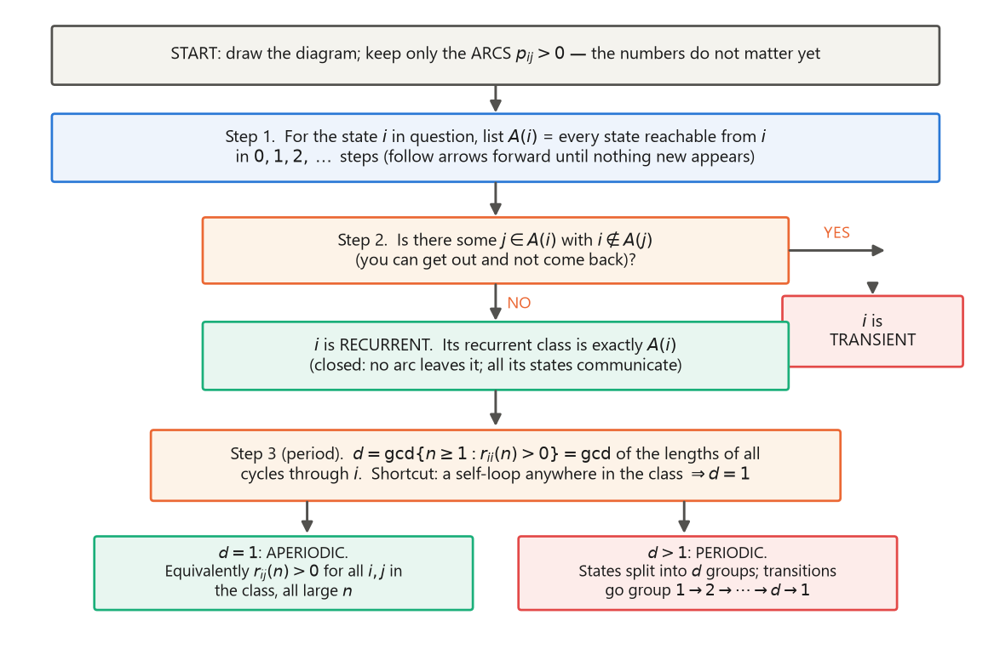
The lecture warm-up chain
L17 opens with a nine-state chain and two probability questions. The printed handout shows the diagram with unlabeled circles and no transition probabilities — the lecturer numbered the nodes and wrote the probabilities on the board, and neither survives in the notes. So we reconstruct: the topology below is exactly the one drawn on the slide (three closed states on the upper left, a two-state cluster on the right, four leaky states in between), the numbering is chosen so that the two questions asked on the slide make sense (they refer to states 1, 2, 6, 7 and to a path $1\to2\to6\to7$), and the arc probabilities are ours. [SOURCE CONFLICT: none — the slide simply prints no numbers; every numeric answer below is a property of our reconstruction, not of the lecture. The classification, which is what the slide is really about, depends only on the arcs and is therefore exactly the lecture's.]
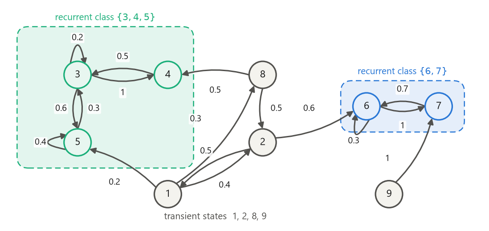
Solution
(a) Classification. Run the recipe on each state. Read the arcs off Fig. 2.2:
$$\begin{array}{ll}
1\to 5\ (0.2),\ 1\to 2\ (0.5),\ 1\to 8\ (0.3) &\quad 2\to 1\ (0.4),\ 2\to 6\ (0.6)\\
3\to 3\ (0.2),\ 3\to 4\ (0.5),\ 3\to 5\ (0.3) &\quad 4\to 3\ (1)\\
5\to 5\ (0.4),\ 5\to 3\ (0.6) &\quad 6\to 6\ (0.3),\ 6\to 7\ (0.7)\\
7\to 6\ (1) &\quad 8\to 4\ (0.5),\ 8\to 2\ (0.5)\\
9\to 7\ (1)
\end{array}$$
Each row sums to 1, as it must (verified in computes/g5_s2.py, key
warmup_rowsums_ok).
State 3. Follow arrows: $3\to4$, $3\to5$, and from 4 only back to 3, from 5 only to 3 or itself. Nothing new ever appears, so $A(3)=\{3,4,5\}$. Is there a leak? From 4 we reach $A(4)=\{3,4,5\}\ni 3$; from 5 likewise. Every state accessible from 3 can return to 3, so 3 is recurrent, and by the same computation so are 4 and 5. Their common accessible set $\{3,4,5\}$ is a recurrent class.
State 6. $6\to7$, $7\to6$, plus the self-loop, so $A(6)=\{6,7\}=A(7)$, no arc leaves the pair, and 6 and 7 are recurrent, forming a second class $\{6,7\}$.
State 1. $A(1)=\{1,2,3,4,5,6,7,8\}$ (from 1 you can reach 5 and hence the whole left class, and via $2\to 6$ the whole right class; only 9 is unreachable). Now look for a leak: $6\in A(1)$ but $A(6)=\{6,7\}$ does not contain 1. So 1 is transient. The same escape route $\cdots\to 6$ makes 2 and 8 transient (both have $A=\{1,2,3,4,5,6,7,8\}$). And 9 is transient: $A(9)=\{6,7,9\}$, and from 6 there is no arc back to 9 — 9 has an outgoing arrow but no incoming one at all.
Answer to (a): recurrent classes $\{3,4,5\}$ and $\{6,7\}$; transient states $1,2,8,9$
(computed independently by graph search in computes/g5_s2.py, keys
warmup_recurrent_classes, warmup_transient_states).
(b) A specific path. This is the multiplication rule plus the Markov property — no classification needed. Write the event as a chain of conditionals: $$\mathbf{P}(X_1=2,X_2=6,X_3=7\mid X_0=1) =\mathbf{P}(X_1=2\mid X_0=1)\,\mathbf{P}(X_2=6\mid X_0=1,X_1=2)\,\mathbf{P}(X_3=7\mid X_0=1,X_1=2,X_2=6),$$ which is the multiplication rule (G1 §2) applied inside the conditional universe $\{X_0=1\}$. By the Markov property each factor forgets everything but the most recent state: $$=p_{12}\,p_{26}\,p_{67}=0.5\times 0.6\times 0.7=\boxed{0.21}.$$ Every term is a single arc of Fig. 2.2, which is why questions of this shape are answered "by inspection".
(c) A four-step transition. Now the intermediate states are not specified, so we need $r_{27}(4)$. Two equivalent routes to the answer.
Route 1 — enumerate the paths. Starting at 2 we must land on 7 after exactly four steps. From 2 the only arcs are $2\to1$ and $2\to6$; tracing all continuations that end at 7 leaves exactly three paths: $$\begin{aligned} 2\to1\to2\to6\to7:&\quad 0.4\times0.5\times0.6\times0.7=0.0840,\\ 2\to6\to6\to6\to7:&\quad 0.6\times0.3\times0.3\times0.7=0.0378,\\ 2\to6\to7\to6\to7:&\quad 0.6\times0.7\times1\times0.7=0.2940. \end{aligned}$$ These are disjoint events (different state sequences), so add them: $$r_{27}(4)=0.0840+0.0378+0.2940=\boxed{0.4158}.$$
Route 2 — the recursion. Equivalently $r_{27}(4)=\sum_k r_{2k}(3)p_{k7}$, i.e. the
$(2,7)$ entry of the fourth matrix power $P^4$. Computed with numpy.linalg.matrix_power
in computes/g5_s2.py (key warmup_Q2_r27_4): $0.415800$ — agreeing with the
path enumeration to all printed digits.
warmup_r2_row_n200, warmup_r2_row_n201). The mass splits between the two
classes: solving the absorption system of §4 gives $\mathbf{P}(\text{end in }\{6,7\}\mid X_0=2)=
30/37=0.810811$ and hence $7/37=0.189189$ for $\{3,4,5\}$; each class then distributes its share
according to its own steady-state vector, $(0.5,0.25,0.25)$ on $\{3,4,5\}$ and
$(10/17,7/17)=(0.588235,0.411765)$ on $\{6,7\}$ (§3 computes these). Indeed
$0.810811\times0.588235=0.476948$ and $0.189189\times0.5=0.094595$, matching the numbers above
exactly (key warmup_from2_predicted_row). The limit exists here but depends on the
starting state — start at 9 and you land in $\{6,7\}$ with probability 1. That is failure mode
number one of §2.4.- Accessibility is one-way. $j\in A(i)$ does not give $i\in A(j)$. State 9 reaches 7; 7 never reaches 9.
- "Transient" does not mean "rarely visited at first". State 1 in Fig. 2.2 may be visited many times before the chain escapes — transience is about the infinite horizon.
- A state with a self-loop can still be transient (state 2 in Figure 2.5(b) below has $p_{22}=0.4$ and is transient), and a recurrent state need not have a self-loop. The self-loop is irrelevant to recurrence; it matters only for the period.
Derivation (the lecture asserts this; here is the argument). Let $i$ be transient. By definition there is a state $j\in A(i)$ with $i\notin A(j)$, and since $j$ is reachable from $i$ there is a path of some length $n_0$ from $i$ to $j$; let $q=r_{ij}(n_0)>0$ be its probability. Now suppose the chain is at $i$ at some time. In the next $n_0$ steps it moves to $j$ with probability at least $q$, and from $j$ it can never return to $i$. Hence $$\mathbf{P}(\text{the chain ever returns to } i\mid \text{currently at } i)\le 1-q<1 .$$ Call this bound $\rho=1-q$. By the Markov property, each "attempt" to return is an independent trial with success probability at most $\rho$, so the number $N$ of visits to $i$ counted from a time at which the chain is at $i$ is stochastically dominated by a geometric random variable: $$\mathbf{P}(N\ge k)\le \rho^{\,k-1},\qquad k=1,2,\dots$$ Therefore $\mathbf{P}(N=\infty)=\lim_{k\to\infty}\mathbf{P}(N\ge k)\le\lim_k\rho^{k-1}=0$: the state is visited finitely often, almost surely. Also $\mathbb{E}[N]\le\sum_{k\ge1}\rho^{k-1}=1/(1-\rho) <\infty$.
One line is still missing, because $N$ is conditioned on starting at $i$ while the quantity we want, $\sum_{n\ge0}\mathbf{P}(X_n=i)$, is unconditional. Bridge it by conditioning on whether $i$ is ever reached at all. Let $V$ be the total number of visits to $i$ from an arbitrary start (or an arbitrary initial distribution). If $i$ is never reached, $V=0$; if it is reached, then from the first visit onward the count is distributed exactly as $N$ (Markov property, restarting the chain at that first visit). Hence $V$ is stochastically dominated by $N$, and for every starting state $$\mathbb{E}[V]\le\mathbb{E}[N]\le\frac1{1-\rho}<\infty .$$ Now $\mathbb{E}[V]=\sum_{n\ge0}\mathbf{P}(X_n=i)$ (expected value of a sum of indicators, G2 §2), so that series converges, and a convergent series must have terms going to zero: $\mathbf{P}(X_n=i)\to0$. $\blacksquare$
Answer
$A(1)$: from 1 go to 2, from 2 to 3, from 3 back to 1 or stay. So $A(1)=\{1,2,3\}$, and every one of those states reaches 1 again ($2\to3\to1$, $3\to1$). No leak, so 1 is recurrent; by the same argument so are 2 and 3, and $\{1,2,3\}$ is a single recurrent class. (Period: the self-loop at 3 gives a cycle of length 1 through 3, and $\gcd$ of anything with 1 is 1, so the class is aperiodic — see §2.3.)
Answer
False. A self-loop only says the chain may linger at $i$; it says nothing about whether it can leave permanently. Counterexample: $p_{11}=0.9$, $p_{12}=0.1$, $p_{22}=1$. Then $2\in A(1)$ but $1\notin A(2)$, so state 1 is transient despite its fat self-loop. (State 2 of Figure 2.5(b) is the lecture's own instance of this.)
2.2 Recurrent classes and the decomposition of a chain
Why $A(i)=A(j)$ for recurrent $i$ and $j\in A(i)$. Take any $k\in A(j)$. Since $j\in A(i)$, concatenating the path $i\to j$ with the path $j\to k$ gives a path $i\to k$, so $k\in A(i)$: thus $A(j)\subseteq A(i)$. Conversely take $k\in A(i)$. Because $i$ is recurrent and $j\in A(i)$, there is a return path $j\to i$; concatenating it with $i\to k$ gives $j\to k$, so $k\in A(j)$ and $A(i)\subseteq A(j)$. Hence the two sets are equal, and every state of the class has the same accessible set — the class. $\blacksquare$
Why at least one recurrent class exists (finite chain). Suppose every state were transient. Start anywhere, say $i_1$. Transience gives a state $i_2\in A(i_1)$ with $i_1\notin A(i_2)$; $i_2$ is also transient, so there is $i_3\in A(i_2)$ with $i_2\notin A(i_3)$; and so on. The states $i_1,i_2,i_3,\dots$ are all distinct — if $i_r=i_s$ for $r<s$ then $i_r$ would be accessible from $i_{s-1}$ while by construction it is not — which is impossible in a finite state space. Hence some state is recurrent, and its accessible set is a recurrent class. $\blacksquare$
Solution
State 5. Its only arc is the self-loop, so $A(5)=\{5\}$ and trivially every state of $A(5)$ returns to 5. State 5 is recurrent; $\{5\}$ is a recurrent class of one state. A one-state recurrent class is exactly an absorbing state: $p_{55}=1$.
The right-hand group. $A(6)=\{6,7,8\}$: $6\to7\to8$ and back again. No arc leaves the group (the only arc pointing at it, $2\to6$, points in). So $\{6,7,8\}$ is closed and irreducible — a second recurrent class.
The square. $A(1)=\{1,2,3,4,5,6,7,8\}$ because $1\to5$ and $1\to2\to6$. But $5\in A(1)$ and $A(5)=\{5\}\not\ni 1$: a leak. So 1 is transient, and the identical argument (each of 2, 3, 4 reaches 1, hence reaches 5) makes 2, 3, 4 transient too.
Answer. Recurrent classes $\{5\}$ and $\{6,7,8\}$; transient states $1,2,3,4$ — the annotation the slide never writes down. Note that no probability values were used anywhere.
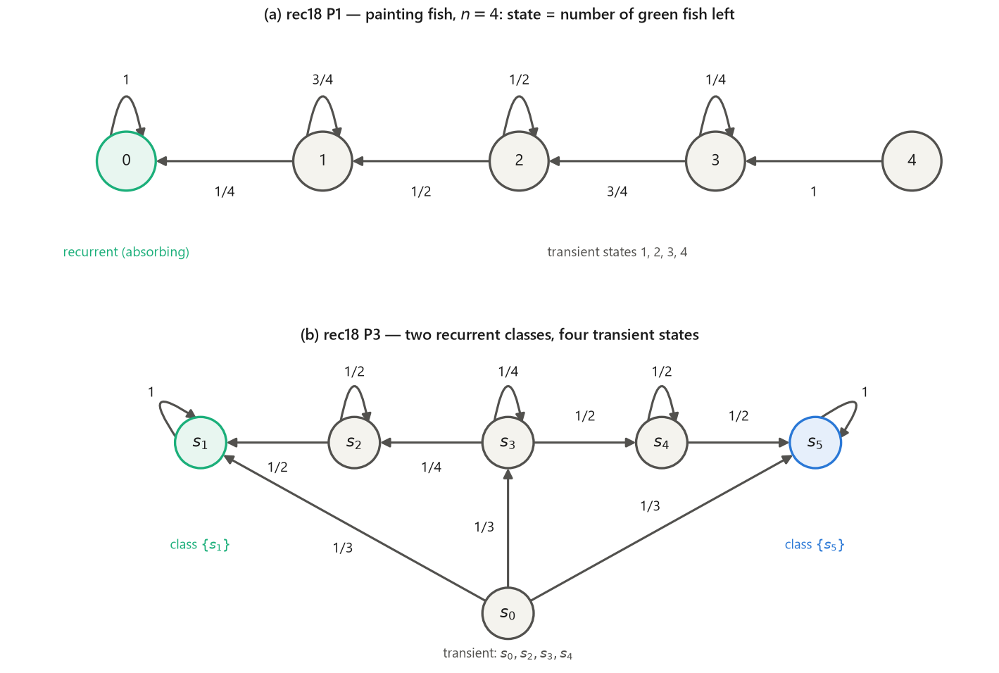
Solution (official solution + both gaps filled)
The official solution. "State 0 is an absorbing state since there is a positive probability that the system will enter it, and once it does, it will remain there forever. Therefore the state with 0 green fish is the only recurrent state, and all other states are then transient."
Gap 1: why $p_{00}=1$. Put $i=0$ in the formula: $p_{00}=(n-0)/n=1$, and $p_{0,-1}$ does not exist. So state 0 is absorbing — once every fish is blue, no fish can ever be repainted green, which is the modeling fact behind the algebra. Formally $A(0)=\{0\}$, so 0 is recurrent by the definition of §2.1, and $\{0\}$ is a recurrent class.
Gap 2: why 0 is reachable from every $i$. The solution says "there is a positive probability that the system will enter it" without showing it. For $i\ge1$ we have $p_{i,i-1}=i/n>0$, so the single path $i\to i-1\to\cdots\to 1\to 0$ has probability $$\frac{i}{n}\cdot\frac{i-1}{n}\cdots\frac{1}{n}=\frac{i!}{n^{i}}>0,$$ (the product of the one-step probabilities along the path, by the Markov property), hence $0\in A(i)$ for every $i$.
Conclusion. For any $i\ge1$: $0\in A(i)$ but $A(0)=\{0\}$ does not contain $i$ (no arc ever
increases the state). That is a leak, so every state $i\ge1$ is transient and state 0 is
the unique recurrent state, forming the unique recurrent class $\{0\}$. A graph search on the
$n=4$ matrix confirms it (keys fish_classes, fish_transient).
Gap 3 (part (a) never writes the model down). For the record: state space $\{0,1,\dots,n\}$; initial state $X_0=$ the number of green fish at the start; the chain is time-homogeneous because each day's catch is a fresh uniform draw over the $n$ fish, independent of history; and the Markov property holds because tomorrow's green count is determined by today's count $i$ and today's catch alone — the identities of the fish already painted are irrelevant to the count.
Numbers ($n=4$, starting from all-green $X_0=4$; computed in computes/g5_s2.py).
$\mathbf{P}(X_m=0)=0$, $0.234375$, $0.780602$, $0.999286$ for $m=1,5,10,30$ — the transient states
drain away exactly as the Property of §2.1 predicts.
fish_absorb_m10_naive_product, fish_absorb_m10_matrix). What does
survive is the mean, by linearity of expectation (no independence needed):
$\mathbb{E}[X_m\mid X_0=n]=n(1-1/n)^m$; for $n=4,m=10$ both the matrix computation and the formula
give $0.2252540588$ (keys fish_Egreen_m10_matrix, fish_Egreen_m10_formula).Solution
Classes. $p_{11}=1$ so $A(s_1)=\{s_1\}$: $s_1$ is absorbing, hence a recurrent class of its
own. Likewise $p_{55}=1$ makes $\{s_5\}$ a recurrent class. For the rest: from $s_0$ the first step
already reaches $s_1$, $s_3$, $s_5$, and from $s_3$ one reaches $s_2$ and $s_4$, so
$A(s_0)=\{s_0,s_1,s_2,s_3,s_4,s_5\}$ — everything; but
$s_1\in A(s_0)$ and $A(s_1)=\{s_1\}\not\ni s_0$, a leak, so $s_0$ is transient. $A(s_2)=\{s_1,s_2\}$
with the same leak into $s_1$: transient. $A(s_3)=\{s_1,s_2,s_3,s_4,s_5\}$: transient. $A(s_4)=
\{s_4,s_5\}$: transient. Recurrent classes $\{s_1\}$ and $\{s_5\}$; transient $s_0,s_2,s_3,s_4$
(verified by graph search, key p3_classes). Both classes are aperiodic: a self-loop of
probability 1 is a cycle of length 1, so $d=\gcd\{1,2,3,\dots\}=1$.
The limit exists but depends on the start. Since the transient states drain away, the chain
ends at $s_1$ or at $s_5$, and the only question is which. From $s_3$: the chain lingers on the
self-loop, then leaves; the escape is to $s_2$ (prob. $1/4$ per step) or to $s_4$ (prob. $1/2$ per
step), so, summing over the number $m\ge0$ of self-loops taken first,
$$\mathbf{P}(\text{leaves }s_3\text{ to } s_2)=\sum_{m=0}^{\infty}\Big(\frac14\Big)^{m}\frac14
=\frac{1/4}{1-1/4}=\frac13 ,$$
using the geometric sum $\sum_{m\ge0}x^m=1/(1-x)$ with $x=1/4$ (G2 §3) — this also proves the chain
leaves $s_3$ with probability 1, since the same computation with escape probability $1/4+1/2=3/4$
gives $\frac{3/4}{1-1/4}=1$. Once at $s_2$ the chain can only end at $s_1$; once at $s_4$ only at
$s_5$. Hence
$$\mathbf{P}(\text{end at } s_1\mid X_0=s_3)=\tfrac13,\qquad
\mathbf{P}(\text{end at } s_5\mid X_0=s_3)=\tfrac23 .$$
From $s_0$, condition on the first step (total probability, G1 §2):
$$\mathbf{P}(\text{end at } s_1\mid X_0=s_0)=\tfrac13\cdot 1+\tfrac13\cdot\tfrac13+\tfrac13\cdot 0
=\tfrac13+\tfrac19=\tfrac49=0.444444,$$
the three terms being the first step to $s_1$ (then certainly $s_1$), to $s_3$ (then $1/3$), and to
$s_5$ (then never $s_1$); and $1-4/9=5/9=0.555556$ for $s_5$. Matrix powers agree:
$r_{s_0\cdot}(400)=(0,\,0.444444,\,0,\,0,\,0,\,0.555556)$ and
$r_{s_3\cdot}(400)=(0,\,0.333333,\,0,\,0,\,0,\,0.666667)$ (keys p3_limit_row_s0,
p3_limit_row_s3). Two different starting states, two different limits — the
first failure mode of §2.4, in a chain you have already met.
Aside (rec18 P3(b), the classification reading). "Never enters $s_4$" happens iff the first
step goes to $s_1$ or $s_5$ (probability $2/3$), or goes to $s_3$ ($1/3$) and then escapes to $s_2$
rather than $s_4$ ($1/3$ by the geometric sum above): $\frac23+\frac13\cdot\frac13=\frac79=0.777778$
(key p3_never_enter_s4) — the official answer, with the gap (why the "given a change of
state" conditioning is legitimate) filled by the geometric series.
Answer
No: from state 0 the only arc is the self-loop, so $A(0)=\{0\}$ and $1\notin A(0)$. Yes: $p_{10}=1/n>0$, so $0\in A(1)$. Since $0\in A(1)$ but $1\notin A(0)$, state 1 is transient — the definition applied literally.
Answer
Zero: impossible — the decomposition theorem above proves at least one exists in a finite chain (the argument constructs infinitely many distinct states otherwise). Exactly one: yes — the fish chain, whose only class is $\{0\}$; more generally any chain whose recurrent states all communicate. Two singleton classes: yes — rec18 P3, with $\{s_1\}$ and $\{s_5\}$ both absorbing. (Infinite chains can have no recurrent state: the walk $p_{i,i+1}=1$ on $\{0,1,2,\dots\}$ escapes to infinity and every state is transient — B&T §7.2 discusses this in its end-of-chapter problems.)
2.3 Periodicity
Recurrence answers "does the chain keep coming back?". Periodicity answers "does it come back on a schedule?" — and a schedule is exactly what prevents $r_{ij}(n)$ from settling down.
Why the two definitions agree (the argument L17 makes verbally). Suppose the grouping exists with $d$ groups. Starting in $S_1$, after $n$ steps the chain is in $S_{(n \bmod d)+1}$ — a one-line induction, since each step advances the group index by exactly one. To be back at $i\in S_1$ we need $n\bmod d=0$, so every return time is a multiple of $d$ and hence $d$ divides the gcd. Conversely, given the gcd $d$, define the group of a state $j$ by the residue mod $d$ of the length of any path $i\to j$: this is well defined (two paths $i\to j$ of lengths $\ell_1,\ell_2$ can each be completed to a cycle through $i$ by the same return path of length $\ell$, giving cycles of lengths $\ell_1+\ell$ and $\ell_2+\ell$, both multiples of $d$, so $\ell_1\equiv\ell_2 \bmod d$), and by construction every transition advances the residue by one. $\blacksquare$
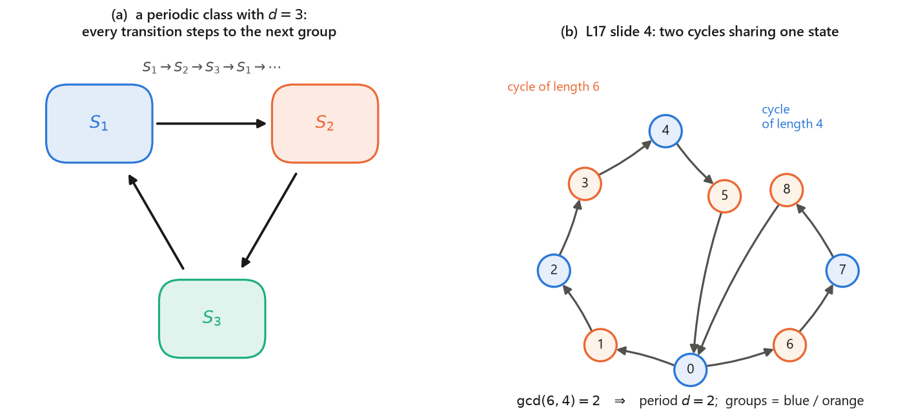
Solution
Step 1 — the chain is a single recurrent class. Every state lies on a cycle through 0, so
every state reaches 0 and 0 reaches every state; hence all nine states communicate and no arc leaves
the set. One recurrent class (key cyc_single_class).
Step 2 — the return times to state 0. A return to 0 consists of choosing, on each visit,
the left loop (6 steps) or the right loop (4 steps). So the possible return times are exactly
$$n=6a+4b,\qquad a,b\ge 0,\ a+b\ge 1: \quad n\in\{4,6,8,10,12,14,\dots\},$$
i.e. every even number $\ge 4$ (matrix powers confirm: $r_{00}(n)>0$ precisely for
$n=4,6,8,10,12,14$ in the range $n\le14$, key cyc_return_times_n_le_14).
Step 3 — take the gcd. $d=\gcd\{4,6,8,\dots\}=\gcd(6,4)=2$. Since $d=2>1$, the class is
periodic with period 2 (key cyc_period_state0).
Step 4 — exhibit the two groups. Color each state by the parity of its distance from 0
along the arrows: $S_1=\{0,2,4,7\}$ (even) and $S_2=\{1,3,5,6,8\}$ (odd) — the blue/orange coloring
of Fig. 2.4(b) (keys cyc_group_even, cyc_group_odd). Every arrow in the
picture goes from one color to the other, which is the grouping definition verified by eye. The
grouping exists only because the two cycle lengths share the factor 2: replace the right cycle by one
of length 3 and the return times become $\{3,6,9,\dots\}\cup\{6,12,\dots\}$ combinations $6a+3b$ with
$\gcd=3$ (period 3), while replacing the left cycle by one of length 3 alongside the
length-4 cycle would give $\gcd(3,4)=1$ and an aperiodic chain.
Step 5 — the consequence. $r_{00}(n)=0$ for every odd $n$, forever: no limit. Numerically
$r_{00}(120)=0.4$ but $r_{00}(121)=0$ (keys cyc_r00_n120, cyc_r00_n121).
The value $0.4$ is not an accident: the long-run fraction of time spent at state 0 is
$\pi_0=1/\mathbb{E}[\text{return time}]=1/(0.5\cdot 6+0.5\cdot 4)=1/5=0.2$, and the chain can only be
at 0 on even steps, so on those steps it is there with probability $d\pi_0=2\times0.2=0.4$.
- Any self-loop in the class $\Rightarrow$ aperiodic. A self-loop is a cycle of length 1 and $\gcd(1,\text{anything})=1$. This one test settles most exam chains instantly.
- Two cycles of coprime lengths $\Rightarrow$ aperiodic (e.g. lengths 2 and 3).
- Try to 2-color / $d$-color the diagram. If you can group the states so that every arc goes from group $k$ to group $k+1$, the class is periodic with that $d$; if any arc stays inside a group or skips one, no such grouping exists.
- Positive-matrix test (B&T §7.2, p. 351). The class is aperiodic iff there
exists $n\ge1$ and a state $i$ from which all states of the class are reachable in exactly $n$ steps;
equivalently, $r_{ij}(n)>0$ for all $i,j$ in the class for all large enough $n$. It is this second,
all-pairs form that the compute checks: the smallest $n$ making every entry
$r_{ij}(n)$ positive is 2 for both classes of Fig. 2.2 (keys
warmup_class1_first_all_pos_n,warmup_class2_first_all_pos_n). The single-state form is satisfied even earlier — state 3 reaches 3, 4 and 5 in exactly one step, and state 6 reaches 6 and 7 in one step, so there $n=1$ already suffices. For the periodic chains of Figs. 2.4(b) and 2.5(a) no such $n$ exists at all, in either form (keyscyc_first_all_pos_n,per3_first_all_pos_n, bothNone).
Answer
$d=\gcd(4,6,9)$. Compute: $\gcd(4,6)=2$, $\gcd(2,9)=1$. So $d=1$ — aperiodic, even though no self-loop is present. One odd cycle among even ones is enough to destroy periodicity.
Answer
From 1 the chain is at 1 after an even number of steps and at 2 after an odd number, with probability 1 each time (there is no randomness at all): $r_{11}(n)=1$ for $n$ even, $0$ for $n$ odd; $r_{12}(n)=0$ for $n$ even, $1$ for $n$ odd. Return times to 1: $\{2,4,6,\dots\}$, gcd $=2=d$. Groups $S_1=\{1\}$, $S_2=\{2\}$. Neither $r_{11}(n)$ nor $r_{12}(n)$ has a limit. This is the $\varepsilon=0$ end of the widget in §2.4.
2.4 The steady-state convergence theorem, and the two ways it fails
We can now state the theorem the classification was built for.
Where the balance equations come from (L17 slide 5, with the limit step made explicit). Start from the Chapman–Kolmogorov recursion, valid for every $n$ and every $i$: $$r_{ij}(n)=\sum_k r_{ik}(n-1)\,p_{kj}.$$ Let $n\to\infty$. On the left, $r_{ij}(n)\to\pi_j$ by the theorem. On the right, each term $r_{ik}(n-1)\to\pi_k$, and for a finite state space the sum has finitely many terms, so the limit passes through the sum (a finite sum of convergent sequences converges to the sum of the limits — no interchange theorem needed). Hence $\pi_j=\sum_k \pi_k p_{kj}$. Similarly, summing $\sum_j r_{ij}(n)=1$ over the finitely many $j$ and taking limits gives $\sum_j\pi_j=1$. $\blacksquare$
computes/g5_s2.py solves for every $\pi$ on this page.
Conversely, the balance equations having a solution proves nothing about convergence: see
Example 2.6.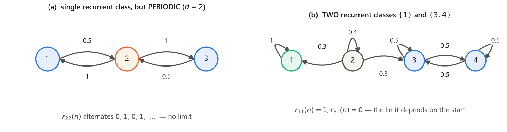
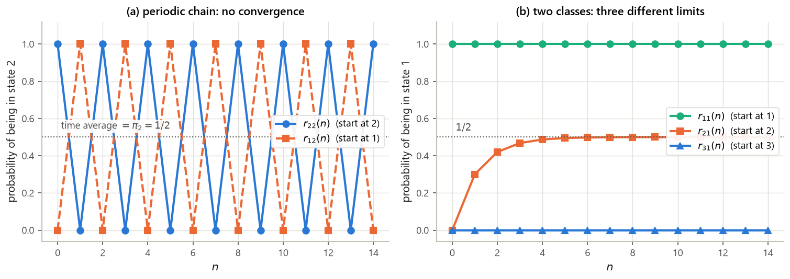
computes/g5_s2_figs.py from matrix powers.Solution
Structure first. All three states communicate ($1\to2\to3$, $3\to2\to1$) and no arc leaves
the set, so there is a single recurrent class $\{1,2,3\}$, no transient states (key
per3_classes). Cycles through 2: $2\to1\to2$ and $2\to3\to2$, both of length 2; every
cycle is a concatenation of these, so all return times are even and $d=\gcd\{2,4,6,\dots\}=2$
(key per3_period). Groups: $S_1=\{2\}$, $S_2=\{1,3\}$ — every arc goes between them.
The fill-ins. Starting at 2, after one step the chain is at 1 or 3 (never 2); after two
steps it is back at 2 with probability 1, since from 1 the only arc is $1\to2$ and from 3 the only
arc is $3\to2$. By induction, the chain is at 2 at every even time and away from 2 at every odd time:
$$\boxed{r_{22}(n)=0 \text{ for } n \text{ odd},\qquad r_{22}(n)=1 \text{ for } n \text{ even.}}$$
Matrix powers for $n=1,\dots,8$: $0,1,0,1,0,1,0,1$ (key per3_r22_n1to8).
Starting elsewhere. From 1: $r_{12}(n)=1$ for $n$ odd and $0$ for $n$ even — the opposite
phase. And $r_{11}(n)=0$ for odd $n$, $=0.5$ for even $n\ge2$ (key per3_r11_n1to8),
because from 1 the chain is at 2 after one step and then splits evenly between 1 and 3. So
$r_{ij}(n)$ has no limit for any $i,j$ here.
But the balance equations still have a solution. Solving $\pi_1=0.5\pi_2$,
$\pi_2=\pi_1+\pi_3$, $\pi_3=0.5\pi_2$ with $\pi_1+\pi_2+\pi_3=1$ gives $\pi=(0.25,0.5,0.25)$ (key
per3_balance_solution). It is not a limit of $r_{ij}(n)$ — nothing converges to
it. What it is, is the long-run fraction of time spent in each state: averaging the
first $N=20{,}000$ matrix powers gives row 1 of the average equal to $(0.25,0.5,0.25)$ to six
decimals (key per3_cesaro_row1). This is the general rule for periodic chains: time
averages converge even when the probabilities themselves oscillate.
Solution
Structure. $A(1)=\{1\}$, so $\{1\}$ is a recurrent class (absorbing). $A(3)=A(4)=\{3,4\}$,
closed and communicating, so $\{3,4\}$ is a second recurrent class — aperiodic, because of the
self-loops. $A(2)=\{1,2,3,4\}$ with two leaks, so 2 is the only transient state (key
two_classes). Two recurrent classes: the theorem does not apply.
$r_{11}(n)$. State 1 is absorbing, $p_{11}=1$, so starting there the chain never moves: $$\boxed{r_{11}(n)=1\quad\text{for all } n\ge 0.}$$
$r_{31}(n)$. From 3 the chain can only visit 3 and 4 — state 1 is not accessible from 3 at all (no arc leaves $\{3,4\}$). So $$\boxed{r_{31}(n)=0\quad\text{for all } n\ge 0.}$$
$r_{21}(n)$. From 2 the chain stays at 2 for a geometric number of steps and then leaves, going to 1 or to 3 with equal probability $0.3$. Two derivations.
By first-step conditioning, exactly. Let $a_n=r_{21}(n)$. Conditioning on the first
transition (total probability, and the Markov property to restart the chain):
$$a_n=0.3\cdot r_{11}(n-1)+0.4\cdot a_{n-1}+0.3\cdot r_{31}(n-1)=0.3+0.4\,a_{n-1},$$
using $r_{11}=1$ and $r_{31}=0$ from above, with $a_0=0$. Solve the linear recursion: the fixed point
is $a^*=0.3/(1-0.4)=0.5$, and writing $a_n-0.5=0.4(a_{n-1}-0.5)$ gives
$a_n-0.5=(0.4)^n(a_0-0.5)=-0.5(0.4)^n$, i.e.
$$\boxed{r_{21}(n)=\tfrac12\big(1-(0.4)^n\big)\ \longrightarrow\ \tfrac12 .}$$
Check at $n=7$: the formula gives $0.4991808000$ and the matrix power gives $0.4991808000$ (keys
two_r21_n7_formula, two_r21_n7_matrix).
By symmetry, instantly. The chain leaves state 2 eventually with probability 1, and at the moment it leaves it is equally likely to go to 1 or to 3 because $p_{21}=p_{23}=0.3$; the self-loop is irrelevant to which exit is taken. So the absorption probability into $\{1\}$ is $1/2$ — the limit above.
The point. Three starting states, three different limits: $1$, $0$, and $1/2$ (key
two_r21_limit). The limits exist here — each class is aperiodic — but they depend on
$i$, so there is no single steady-state vector $\pi$, and asking for "the" $\pi_1$ is meaningless.
Note also $r_{23}(n)+r_{24}(n)\to 1/2$ split as $(0.25,0.25)$ by the symmetry of the class $\{3,4\}$
(keys two_r23_n30): the surviving half of the probability distributes itself according
to the steady state of the class it landed in, exactly as in the warm-up chain of §2.1.
- Several classes $\Rightarrow$ the chain remembers its start forever, because the class it falls into is decided by where it began (Fig. 2.5(b), rec18 P3, the warm-up chain). The limit may exist, but it is not a single $\pi$.
- Periodicity $\Rightarrow$ the chain remembers the clock forever: the group it is in at time $n$ is determined by $n \bmod d$ and the starting group, so $r_{ij}(n)$ oscillates (Fig. 2.5(a)). Here even the time-average is fine; only the instantaneous distribution misbehaves.
Widget: how a sliver of self-loop turns oscillation into convergence
Take the smallest periodic chain, $1\to2\to1$ deterministically, and bleed a little probability
$\varepsilon$ into a self-loop at state 1:
$$P=\begin{pmatrix} \varepsilon & 1-\varepsilon\\ 1 & 0\end{pmatrix},\qquad 0\le\varepsilon<1 .$$
At $\varepsilon=0$ this is Practice 2.6, period 2. For any $\varepsilon>0$ the self-loop is a
cycle of length 1, so the class $\{1,2\}$ is aperiodic and the theorem applies with
$$\pi_1=\frac{1}{2-\varepsilon},\qquad \pi_2=\frac{1-\varepsilon}{2-\varepsilon}$$
(from $\pi_1=\varepsilon\pi_1+\pi_2$ and $\pi_1+\pi_2=1$: substituting
$\pi_2=1-\pi_1$ gives $\pi_1=\varepsilon\pi_1+1-\pi_1$, so $\pi_1(2-\varepsilon)=1$). The exact
transient behaviour is
$$r_{11}(n)=\pi_1+(1-\pi_1)(\varepsilon-1)^n,$$
verified against matrix powers at $n=6$ for $\varepsilon=0,0.05,0.2,0.5$ in
computes/g5_s2.py (keys w_eps*_r11_n6_closed vs
w_eps*_r11_n6_matrix). The second eigenvalue is $\varepsilon-1$, whose magnitude is
$1-\varepsilon$: it equals 1 exactly at $\varepsilon=0$ (undamped oscillation) and shrinks as
$\varepsilon$ grows — the number of steps needed for $|r_{11}(n)-\pi_1|<0.001$ is 121, 28, 9 for
$\varepsilon=0.05,0.2,0.5$ (keys w_eps*_n_to_1e-3).
Answer
$\lim_n r_{31}(n)$ exists: conditional on ending in the aperiodic class $\{1,2\}$ — an event of some probability $\alpha$ decided by the absorption analysis of §4 — the chain's distribution inside that class converges to its own $\pi$, so $r_{31}(n)\to\alpha\,\pi_1^{\{1,2\}}$. $\lim_n r_{35}(n)$ does not exist in general: inside a periodic class the probability keeps oscillating, so $r_{35}(n)$ oscillates too (damped only by the randomness in the entry time into the class — and if the chain enters $\{5,6\}$ at both even and odd times the oscillation can be washed out, which is why "in general"). The safe statement is that the time-average always converges.
Answer
Check the two hypotheses, both by eye. Single recurrent class? $A(1)=A(2)=\{1,2\}$ (arcs
both ways), nothing leaves, so yes: one class $\{1,2\}$, no transient states. Aperiodic?
$p_{11}=0.5>0$ is a self-loop, hence a cycle of length 1, hence $d=1$: yes. The convergence
theorem applies, $r_{ij}(n)\to\pi_j$ independently of $i$, and the balance equations plus
normalization determine $\pi$ uniquely. (§3 solves them; for the record the answer is
$\pi=(2/7,5/7)=(0.285714,0.714286)$, and both rows of $P^{60}$ equal it to eight decimals — keys
slide7_steady, slide7_r_row_n60 — which is the convergence theorem visible
in a matrix.)
- Accessible: $j\in A(i)$ iff $r_{ij}(n)>0$ for some $n\ge0$ iff there is a directed path $i\to j$. Always $i\in A(i)$; accessibility is one-way.
- Recurrent: $i\in A(j)$ for every $j\in A(i)$ ("from wherever you can go, there is a way back"). Transient: otherwise — some $j\in A(i)$ has no road back. Depends only on which $p_{ij}$ are positive, never on their values (L17 slide 3; B&T §7.2).
- Recurrent class: $A(i)$ for recurrent $i$; closed (no arc out) and irreducible (all states communicate). Absorbing state = recurrent class of size one, $p_{ii}=1$.
- Decomposition: every finite chain = one or more recurrent classes + possibly transient states; at least one class always exists.
- Transient states die out: $\mathbf{P}(X_n=i)\to0$, visited finitely often (geometric escape argument).
- Period: $d=\gcd\{n\ge1: r_{ii}(n)>0\}$ = gcd of cycle lengths through $i$; equivalently the class splits into $d$ groups with all transitions $S_k\to S_{k+1}$. One self-loop in the class $\Rightarrow d=1$. Aperiodic $\iff$ $r_{ij}(n)>0$ for all $i,j$ in the class for all large $n$.
- Convergence theorem: single recurrent class and aperiodic $\Rightarrow$ $r_{ij}(n)\to\pi_j$ for every $i$, with $\pi_j=\sum_k\pi_kp_{kj}$ and $\sum_j\pi_j=1$ (§3 solves these).
- Failure 1 — several classes: limits exist but depend on the start ($r_{11}=1$, $r_{31}=0$, $r_{21}\to1/2$ in Fig. 2.5(b); $4/9$ vs $1/3$ in rec18 P3).
- Failure 2 — periodicity: $r_{ij}(n)$ oscillates and has no limit ($r_{22}(n)=1,0,1,0,\dots$ in Fig. 2.5(a)); the balance equations may still have a solution, but it is a long-run fraction of time, not a limit of $r_{ij}(n)$.
- Practical order of work: classes first, period second, equations third. Never the other way round.
§3 Steady-state probabilities, balance equations, birth–death chains
Sources: L17 slides 5–8 (raster p02) · L18 slides 2–4 (raster p01) · Bertsekas–Tsitsiklis §7.3 (steady-state behavior, pp. 352–362: Examples 7.5, 7.8, 7.9 and its Figure 7.14) and B&T Problems 7.20, 7.24, 7.25. Every number on this page is recomputed in computes/g5_s3.py; every figure is generated by computes/g5_s3_figs.py.
§1 built the machinery for the short run: given the one-step transition probabilities $p_{ij}$, the $n$-step probabilities $r_{ij}(n)=\mathbf{P}(X_n=j\mid X_0=i)$ follow from the Chapman–Kolmogorov recursion. §2 sorted the states into recurrent classes and transient states and asked whether $r_{ij}(n)$ settles down at all. This section answers the settling-down question quantitatively. When the limit exists it is a number $\pi_j$ that does not remember where the chain started, and — this is the payoff — you never have to multiply matrices to find it. The $\pi_j$ are the solution of a small system of linear equations, the balance equations, which you can usually solve by hand in a few lines (L17 slide 5; B&T §7.3).
Four things happen below. First we take the limit inside the Chapman–Kolmogorov recursion and land on the balance equations, being careful about the step the slide waves through: why the balance equations alone are not enough and the normalization $\sum_j\pi_j=1$ has to be adjoined. Second we solve chains — the two-state chain of L17 slide 7, its cousin from B&T Example 7.5, and a three-state chain that exercises the general linear solve. Third we read $\pi_j$ as a long-run frequency, which is what makes the balance equations obvious rather than merely true, and which lets us answer the two probabilities left blank on L18 slide 3. Fourth we specialize to birth–death chains, where transitions move only to neighboring states: there a cut argument collapses the whole linear system into a chain of two-term equations, and the answer comes out in closed form. That closed form is the queueing formula $\pi_i=(1-\rho)\rho^{\,i}$ with load factor $\rho=p/q$, and the phone-company/Erlang-B formula of L18 slide 4.
3.1 From the $n$-step recursion to the balance equations
The recursion we are taking a limit of
L17 slide 2 restates the key recursion without re-deriving it (it was proved in L16), so we re-derive it here in full, because every step of the limiting argument leans on it. Fix a starting state $i$ and a target state $j$, and let $m$ be the number of states, labeled $1,\dots,m$. Recall $r_{ij}(n)=\mathbf{P}(X_n=j\mid X_0=i)$, the probability of sitting in $j$ exactly $n$ transitions after starting in $i$.
$$ \begin{aligned} r_{ij}(n) &=\mathbf{P}(X_n=j\mid X_0=i)\\[2pt] &=\sum_{k=1}^{m}\mathbf{P}(X_{n-1}=k\mid X_0=i)\;\mathbf{P}(X_n=j\mid X_{n-1}=k,\,X_0=i) &&\text{total probability, conditioning on the state at time }n-1\\[2pt] &=\sum_{k=1}^{m}\mathbf{P}(X_{n-1}=k\mid X_0=i)\;\mathbf{P}(X_n=j\mid X_{n-1}=k) &&\text{Markov property: given }X_{n-1},\text{ the past }X_0\text{ is irrelevant}\\[2pt] &=\sum_{k=1}^{m} r_{ik}(n-1)\,p_{kj} &&\text{definitions, plus time-homogeneity }\mathbf{P}(X_n=j\mid X_{n-1}=k)=p_{kj}. \end{aligned} $$Here $k$ ranges over every state the chain could occupy one step before the end; the events $\{X_{n-1}=k\}$, $k=1,\dots,m$, are disjoint and their union is the whole sample space, which is exactly what the total probability theorem needs. (This fills the [DERIVATION GAP] flagged on L17 slide 2.)
When does $r_{ij}(n)$ converge?
- $\displaystyle\lim_{n\to\infty}r_{ij}(n)=\pi_j$ for every $j$, and the limit is the same for every starting state $i$;
- the $\pi_j$ are the unique solution of the system $$\pi_j=\sum_{k=1}^{m}\pi_k p_{kj}\ \ (j=1,\dots,m),\qquad \sum_{j=1}^{m}\pi_j=1;$$
- $\pi_j=0$ for every transient state $j$, and $\pi_j>0$ for every recurrent state $j$.
Both hypotheses are needed, and it is worth seeing exactly what each one rules out (B&T §7.3, p. 352; classification itself is §2's business).
- Two or more recurrent classes. Then whether you can be in $j$ far in the future depends on which class you started in or drifted into, so $\lim_n r_{ij}(n)$ must depend on $i$. Nothing is lost: once the chain enters a recurrent class it never leaves, so you first compute the probability of ending up in each class (that is §4's absorption calculation) and then run the steady-state analysis inside each class separately.
- A periodic recurrent class. Take the two-state chain with $p_{12}=p_{21}=1$. Starting in state 1 you are in state 1 after every even number of transitions and in state 2 after every odd number, so $$r_{11}(n)=\begin{cases}1,&n\text{ even},\\ 0,&n\text{ odd},\end{cases}$$ which has no limit. The balance equations $\pi_1=\pi_2$, $\pi_2=\pi_1$ plus $\pi_1+\pi_2=1$ still have the unique solution $\pi_1=\pi_2=1/2$ — it just is no longer a limit of $r_{ij}(n)$. It is still the long-run fraction of time in each state (§3.3), which is why periodic chains are not useless, only more delicate.
Taking the limit
Assume the two hypotheses hold, so part (a) of the theorem is available. Fix $j$ and let $n\to\infty$ in the recursion:
$$ \begin{aligned} \pi_j &=\lim_{n\to\infty}r_{ij}(n) &&\text{part (a) of the theorem}\\[2pt] &=\lim_{n\to\infty}\sum_{k=1}^{m}r_{ik}(n-1)\,p_{kj} &&\text{the recursion just derived, valid for every }n\ge1\\[2pt] &=\sum_{k=1}^{m}\Big(\lim_{n\to\infty}r_{ik}(n-1)\Big)p_{kj} &&\textbf{finite}\text{ sum of }m\text{ terms: the limit passes through}\\[2pt] &=\sum_{k=1}^{m}\pi_k\,p_{kj} &&\text{part (a) again, applied to each }k\ (\,n-1\to\infty\text{ too}\,). \end{aligned} $$That is the balance equation for state $j$. Doing this for each $j=1,\dots,m$ gives all $m$ of them. Two remarks on the third line, which L17 slide 5 does silently (the [DERIVATION GAP] flagged there).
Why normalization has to be adjoined
The balance equations by themselves cannot determine $\pi$: they are homogeneous (if $\pi$ solves them so does $c\pi$ for any constant $c$), and moreover one of them is redundant. Here is the redundancy, spelled out (this is B&T Problem 7.24; it fills the second half of the L17 slide-5 [DERIVATION GAP]). Add all $m$ balance equations together:
$$ \begin{aligned} \sum_{j=1}^{m}\pi_j &=\sum_{j=1}^{m}\sum_{k=1}^{m}\pi_k p_{kj} &&\text{summing the }m\text{ balance equations over }j\\ &=\sum_{k=1}^{m}\pi_k\sum_{j=1}^{m}p_{kj} &&\text{swap the order of the two finite sums}\\ &=\sum_{k=1}^{m}\pi_k\cdot 1 &&\text{each row of the transition matrix sums to }1\\ &=\sum_{k=1}^{m}\pi_k . \end{aligned} $$The result is the identity $\sum_j\pi_j=\sum_k\pi_k$, i.e. $0=0$. So the $m$ balance equations are linearly dependent: the last one is the negative of the sum of the other $m-1$, hence carries no new information. They pin $\pi$ down only up to a scale factor, and the normalization equation $\sum_j\pi_j=1$ supplies exactly the one missing piece.
Numerically, for the three-state chain of Example 3.3 below, the matrix
$\mathbf{P}^{\mathsf T}-I$ of the balance system has rank $2$, not $3$, and its rows sum to the zero
vector to machine precision ($\max$ entry $2.8\times10^{-17}$) — confirmed in
computes/g5_s3.py section C.
Solution
From state 2 you can reach 3, from 3 you can reach 1, and from 1 you can never leave. So state 1 is the only recurrent state; $\{1\}$ is a single recurrent class, and it is aperiodic because $p_{11}=1>0$ means the chain can return to 1 in one step (a self-loop always kills periodicity). States 2 and 3 are transient. The theorem applies.
By part (c), $\pi_2=\pi_3=0$ and $\pi_1>0$; normalization then forces $\pi=(1,0,0)$. Check it against the balance equations: $\pi_1=\pi_1p_{11}+\pi_2p_{21}+\pi_3p_{31}=1\cdot1+0+0=1$ ✓; $\pi_2=\pi_2p_{22}=0$ ✓; $\pi_3=\pi_2p_{23}+\pi_3p_{33}=0$ ✓. The moral: with a unique absorbing state you do not need to solve anything — the steady state is "sit in the absorbing state".
Solution
Nothing is broken. The balance equations are homogeneous and dependent, so the set of solutions is a whole line $\{c\,v: c\in\mathbb{R}\}$ through the origin; $(0.6,0.9)$ is one point on it. To get the steady-state probabilities, rescale so the entries sum to $1$: divide by $0.6+0.9=1.5$, giving $\pi=(0.4,0.6)$. Any solver that returns an unnormalized vector (an eigenvector routine, for instance) has to be followed by this division.
3.2 Solving the balance equations
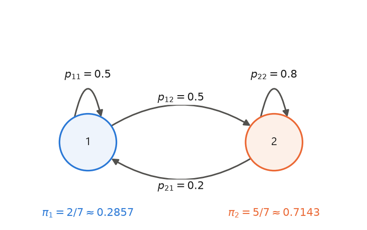
Step 1 — write the balance equations. There are two, one per state. For state 1, sum over every state $k$ that can feed into 1, weighting $p_{k1}$ by $\pi_k$:
$$\pi_1=\pi_1p_{11}+\pi_2p_{21}=0.5\,\pi_1+0.2\,\pi_2,$$ $$\pi_2=\pi_1p_{12}+\pi_2p_{22}=0.5\,\pi_1+0.8\,\pi_2 .$$Step 2 — simplify, and watch them collapse into one. Subtract $0.5\pi_1$ from the first:
$$0.5\,\pi_1=0.2\,\pi_2\qquad\Longrightarrow\qquad \pi_1=\tfrac{0.2}{0.5}\,\pi_2=0.4\,\pi_2 .$$Subtract $0.8\pi_2$ from the second: $0.2\pi_2=0.5\pi_1$ — the same equation. This is the dependence proved in §3.1, visible in miniature.
Step 3 — normalize. Substitute $\pi_1=0.4\pi_2$ into $\pi_1+\pi_2=1$:
$$0.4\,\pi_2+\pi_2=1\quad\Longrightarrow\quad 1.4\,\pi_2=1\quad\Longrightarrow\quad \pi_2=\frac{1}{1.4}=\frac{10}{14}=\frac{5}{7}\approx0.714286,$$ $$\pi_1=1-\pi_2=\frac{2}{7}\approx0.285714 .$$This matches the values printed on L18 slide 3. Verified two ways in
computes/g5_s3.py section A: a numpy solve of the $2\times2$ system returns
$(0.2857142857142857,\,0.7142857142857143)$, agreeing with $(2/7,5/7)$ to $0$ error, and the
residual $\max_j|(\pi P)_j-\pi_j|$ is $1.1\times10^{-16}$.
Step 4 — check against the $n$-step probabilities. Powers of $P$ should march toward
$\pi$ along both rows. From computes/g5_s3.py:
| $n$ | $r_{11}(n)$ | $r_{21}(n)$ | $|r_{11}(n)-2/7|$ |
|---|---|---|---|
| 0 | 1.000000 | 0.000000 | $7.14\times10^{-1}$ |
| 1 | 0.500000 | 0.200000 | $2.14\times10^{-1}$ |
| 2 | 0.350000 | 0.260000 | $6.43\times10^{-2}$ |
| 3 | 0.305000 | 0.278000 | $1.93\times10^{-2}$ |
| 4 | 0.291500 | 0.283400 | $5.79\times10^{-3}$ |
| 6 | 0.286235 | 0.285506 | $5.21\times10^{-4}$ |
| 10 | 0.285719 | 0.285713 | $4.22\times10^{-6}$ |
| 20 | 0.285714 | 0.285714 | $2.49\times10^{-11}$ |
The error shrinks by a factor of about $0.3$ per step, and $0.3$ is no coincidence: the eigenvalues of $P$ are $1$ and $p_{11}+p_{22}-1=0.5+0.8-1=0.3$ (the trace is $1.3$ and the two eigenvalues must sum to it, one of them being $1$). Solving the recursion exactly gives
$$r_{11}(n)=\frac{2}{7}+\frac{5}{7}(0.3)^n,\qquad r_{21}(n)=\frac{2}{7}-\frac{2}{7}(0.3)^n,$$both verified against numpy.linalg.matrix_power for $n=0,\dots,24$ to within
$2.8\times10^{-16}$. The transient part dies geometrically at rate $|\lambda_2|=0.3$; after just
$n=6$ steps $r_{11}(n)$ is within $10^{-3}$ of its limit.
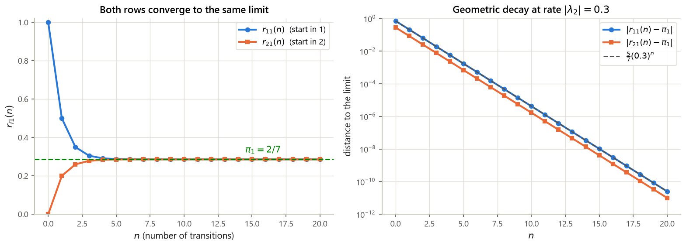
Solution
Balance for state 1: $\pi_1=0.8\pi_1+0.6\pi_2$, i.e. $0.2\pi_1=0.6\pi_2$, i.e. $\pi_1=3\pi_2$. (Balance for state 2 gives $\pi_2=0.2\pi_1+0.4\pi_2\Rightarrow0.6\pi_2=0.2\pi_1$ — the same equation again.) Normalization: $3\pi_2+\pi_2=1$, so $\pi_2=1/4=0.25$ and $\pi_1=3/4=0.75$.
Confirmed by numpy in computes/g5_s3.py section B: $\pi=(0.75,\,0.25)$ with balance
residual $2.8\times10^{-17}$ and $\pi_1/\pi_2=3.0$. Compare with Example 3.1: making the chain
stickier in state 1 ($p_{11}$ up from $0.5$ to $0.8$) and quicker to leave state 2 ($p_{21}$ up from
$0.2$ to $0.6$) flips the steady state from mostly-state-2 to mostly-state-1, exactly as intuition
demands.
Step 0 — check the model. Each row sums to $1$ ($0.7+0.2+0.1$, $0.3+0.4+0.3$, $0+0.5+0.5$), so $P$ is a legitimate transition matrix. All three states communicate (from 3 you reach 2, from 2 you reach 1 and 3, from 1 you reach 2 and 3), so there is a single recurrent class; it is aperiodic because $p_{11}=0.7>0$ is a self-loop. The theorem applies.
Step 1 — write the three balance equations, each summing down a column of $P$:
$$ \begin{aligned} \pi_1&=0.7\,\pi_1+0.3\,\pi_2+0\cdot\pi_3 &&\text{(column 1: }p_{11},p_{21},p_{31})\\ \pi_2&=0.2\,\pi_1+0.4\,\pi_2+0.5\,\pi_3 &&\text{(column 2)}\\ \pi_3&=0.1\,\pi_1+0.3\,\pi_2+0.5\,\pi_3 &&\text{(column 3)} \end{aligned} $$Step 2 — drop one equation (any one) and solve the rest. We keep the first and third. From the first, $0.3\pi_1=0.3\pi_2$, hence
$$\pi_1=\pi_2 .$$From the third, $0.5\pi_3=0.1\pi_1+0.3\pi_2$; substituting $\pi_2=\pi_1$ gives $0.5\pi_3=0.1\pi_1+0.3\pi_1=0.4\pi_1$, hence
$$\pi_3=\frac{0.4}{0.5}\,\pi_1=0.8\,\pi_1 .$$Step 3 — normalize. $\pi_1+\pi_2+\pi_3=\pi_1+\pi_1+0.8\pi_1=2.8\pi_1=1$, so
$$\pi_1=\frac{1}{2.8}=\frac{10}{28}=\frac{5}{14},\qquad \pi_2=\frac{5}{14},\qquad \pi_3=0.8\cdot\frac{5}{14}=\frac{4}{14}=\frac{2}{7}.$$Numerically $\pi=(0.357143,\,0.357143,\,0.285714)$; the numpy solve in
computes/g5_s3.py section C agrees to $5.6\times10^{-17}$, and the balance residual is
$5.6\times10^{-17}$.
Step 4 — sanity-check the dropped equation. Column 2: $0.2(5/14)+0.4(5/14)+0.5(4/14)=(1+2+2)/14=5/14=\pi_2$ ✓. The server is down $\pi_3=2/7\approx28.6\%$ of hours, about $6.86$ hours a day.
Matrix powers confirm the limit and show how fast it arrives: the second-largest eigenvalue
modulus is $0.5646$, and by $n=20$ every row of $P^{20}$ already agrees with $\pi$ to four decimals
whichever row you started in (row 1 is $(0.357149,\,0.357140,\,0.285711)$, row 3 is
$(0.357136,\,0.357146,\,0.285718)$, both from C_r_n20_rows); by $n=40$ the agreement is
to eight decimals (C_r_n40_row1 $=(0.35714286,\,0.35714286,\,0.28571429)$).
- Check the row sums. Every row of $P$ must sum to 1. A typo here poisons everything after.
- Classify (§2). One recurrent class? Aperiodic? If there are two or more recurrent classes, do §4's absorption analysis first, then run this recipe inside each class. If the single class is periodic, the $\pi_j$ below are still the long-run frequencies but not limits of $r_{ij}(n)$.
- Is it a birth–death chain (transitions only to $i-1$, $i$, $i+1$)? If yes, jump to the local-balance shortcut of §3.4 — it is far less work.
- Otherwise write the balance equations column by column: $\pi_j=\sum_k\pi_kp_{kj}$. The coefficient of $\pi_k$ is the probability of the transition $k\to j$.
- Discard one balance equation (they are dependent) and adjoin $\sum_j\pi_j=1$. Solve the resulting $m\times m$ system.
- Verify with the equation you dropped, and check $\pi_j\ge0$ and $\sum_j\pi_j=1$.
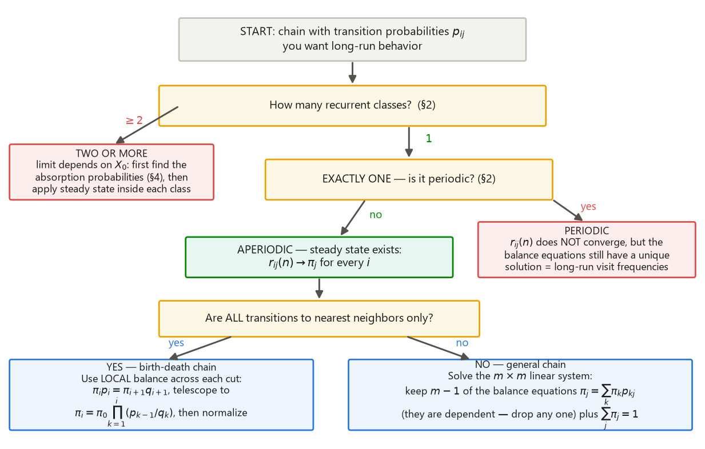
computes/g5_s3.py the helper stationary() overwrites the last row of
$P^{\mathsf T}-I$ with a row of ones and the last entry of the right-hand side with $1$ — exactly
step 5 of the recipe.)Solution
Row sums are $1$; all states communicate and $p_{11}>0$, so the theorem applies. Balance for state 1: $\pi_1=0.6\pi_1+0.2\pi_2+0.1\pi_3$, i.e. $$0.4\pi_1=0.2\pi_2+0.1\pi_3 \quad\Longleftrightarrow\quad 4\pi_1=2\pi_2+\pi_3 .\qquad(\ast)$$ Balance for state 3: $\pi_3=0.1\pi_1+0.3\pi_2+0.5\pi_3$, i.e. $$0.5\pi_3=0.1\pi_1+0.3\pi_2 \quad\Longleftrightarrow\quad 5\pi_3=\pi_1+3\pi_2 .\qquad(\ast\ast)$$ From $(\ast)$, $\pi_3=4\pi_1-2\pi_2$. Substitute into $(\ast\ast)$: $5(4\pi_1-2\pi_2)=\pi_1+3\pi_2$, i.e. $20\pi_1-10\pi_2=\pi_1+3\pi_2$, i.e. $19\pi_1=13\pi_2$, so $\pi_2=\frac{19}{13}\pi_1$. Then $\pi_3=4\pi_1-2\cdot\frac{19}{13}\pi_1=\frac{52-38}{13}\pi_1=\frac{14}{13}\pi_1$. Normalize: $$\pi_1\Big(1+\frac{19}{13}+\frac{14}{13}\Big)=\pi_1\cdot\frac{13+19+14}{13}=\frac{46}{13}\pi_1=1 \quad\Longrightarrow\quad \pi_1=\frac{13}{46}.$$ Hence $\pi=\left(\frac{13}{46},\frac{19}{46},\frac{14}{46}\right)=(0.282609,\,0.413043,\,0.304348)$, verified by numpy (residual $5.6\times10^{-17}$). Check the dropped equation (column 2): $0.3\cdot\frac{13}{46}+0.5\cdot\frac{19}{46}+0.4\cdot\frac{14}{46} =\frac{3.9+9.5+5.6}{46}=\frac{19}{46}=\pi_2$ ✓.
Expected rainy days in 100: $100\pi_3=100\cdot\frac{14}{46}=30.43$ days (using the frequency interpretation of §3.3).
Solution
That is the long-run frequency of the transition $1\to3$, which §3.3 shows equals
$\pi_1p_{13}=\frac{13}{46}\cdot0.1=\frac{1.3}{46}=0.0282609$, i.e. about $2.83$ such days per 100 —
computed in computes/g5_s3.py section F as 0.028260869565217395. Note it is
not $\pi_1\pi_3=0.086$: the days are dependent, and the transition probability, not the
product of marginals, is what enters.
3.3 The frequency interpretation: what $\pi_j$ actually counts
L17 slide 6 gives the balance equation a second reading, and it is the reading worth memorizing.
Read this way, the balance equation stops being an algebraic accident. Every time the chain lands in $j$, it must have arrived from somewhere. In a long run of $n$ transitions, about $n\pi_kp_{kj}$ of them are $k\to j$ moves; summing over all possible predecessors $k$ counts every arrival into $j$ exactly once, and the total must equal the number of times the chain occupies $j$, about $n\pi_j$. Dividing by $n$:
$$\underbrace{\pi_j}_{\text{frequency of being in }j} =\underbrace{\sum_k\pi_kp_{kj}}_{\text{frequency of transitions into }j}.$$(The self-transition $j\to j$ is included in the sum, as it must be: "arriving into $j$" counts staying put.) Symmetrically, since $\sum_\ell p_{j\ell}=1$ we can also write $\pi_j=\pi_j\sum_\ell p_{j\ell}=\sum_\ell\pi_jp_{j\ell}$, the total frequency of transitions out of $j$. So the balance equation says: flow in = flow out.
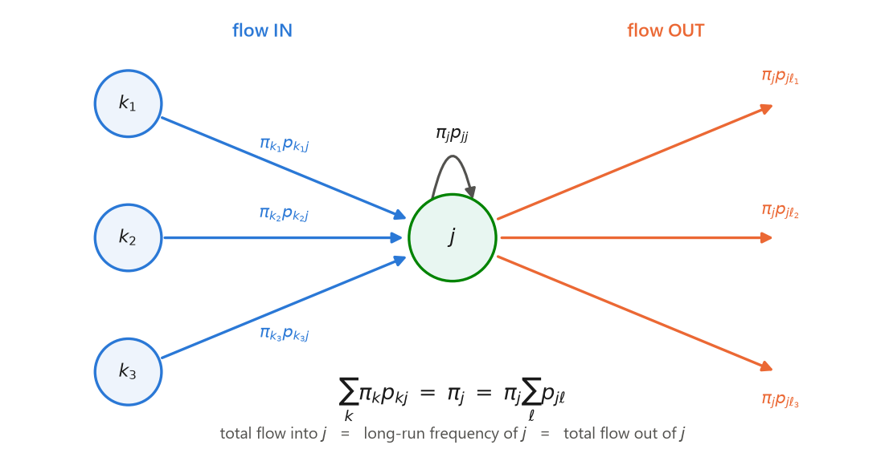
A numerical check. Simulating the chain of Fig. 3.1 for $N=400{,}000$ transitions
(computes/g5_s3.py section A, seed 20101109) gives a fraction of time in state 1 of
$0.286725$ against $\pi_1=0.285714$, and an observed frequency of $1\to2$ transitions of
$0.143135$ against $\pi_1p_{12}=\frac{2}{7}\cdot0.5=\frac{1}{7}=0.142857$ — agreement to about
$10^{-3}$, which is the expected size of simulation noise at this $N$.
(a) $\mathbf{P}(X_1=1\ \text{and}\ X_{100}=1)$, (b) $\mathbf{P}(X_{100}=1\ \text{and}\ X_{101}=2)$.
Both right-hand sides are printed blank on the slide.
(a) Split the joint event with the multiplication rule and then use the Markov property to forget everything before time 1:
$$ \begin{aligned} \mathbf{P}(X_1=1,\,X_{100}=1\mid X_0=1) &=\mathbf{P}(X_1=1\mid X_0=1)\cdot\mathbf{P}(X_{100}=1\mid X_1=1,\,X_0=1) &&\text{multiplication rule}\\ &=\mathbf{P}(X_1=1\mid X_0=1)\cdot\mathbf{P}(X_{100}=1\mid X_1=1) &&\text{Markov property}\\ &=p_{11}\cdot r_{11}(99) &&\text{time-homogeneity: 99 steps from time 1 to time 100}\\ &=0.5\times 0.285714\ldots\\ &\approx 0.5\times\tfrac{2}{7}=\tfrac{1}{7}\approx 0.142857 . \end{aligned} $$The approximation in the last line is $r_{11}(99)\approx\pi_1$, and here "approximately" is generous: the exact error is $r_{11}(99)-\pi_1=\frac{5}{7}(0.3)^{99}\approx1.23\times10^{-52}$, far below any precision you will ever need. (The numpy value of $p_{11}r_{11}(99)$ is $0.1428571428571433$, agreeing with $1/7$ to $15$ digits.)
(b) Same idea, but now the conditioning runs the other way — condition on the earlier time:
$$ \begin{aligned} \mathbf{P}(X_{100}=1,\,X_{101}=2\mid X_0=1) &=\mathbf{P}(X_{100}=1\mid X_0=1)\cdot\mathbf{P}(X_{101}=2\mid X_{100}=1,\,X_0=1)\\ &=r_{11}(100)\cdot p_{12} &&\text{Markov property, then time-homogeneity}\\ &\approx\tfrac{2}{7}\times0.5=\tfrac{1}{7}\approx0.142857 . \end{aligned} $$Numerically $0.1428571428571433$ again. Notice what (b) is: $\pi_1p_{12}$, the long-run frequency of the transition $1\to2$ from the property above. Asking for the probability that a particular far-future step is a $1\to2$ transition and asking for the long-run fraction of steps that are $1\to2$ transitions are the same question, and the frequency interpretation is the bridge.
Solution
$\pi_1p_{12}=\frac{2}{7}(0.5)=\frac{1}{7}=0.142857$ and $\pi_2p_{21}=\frac{5}{7}(0.2)=\frac{1}{7}=0.142857$; computed values agree to $2.8\times10^{-17}$. They must be equal: every visit to state 1 that ends is followed eventually by a return, so crossings of the "boundary" between $\{1\}$ and $\{2\}$ alternate in direction, and over $n$ steps the counts in the two directions can differ by at most one. Dividing by $n$ and letting $n\to\infty$ makes the frequencies equal. §3.4 turns this observation into a general tool.
Solution
Label idle $=1$, busy $=2$: $p_{11}=0.6$, $p_{12}=0.4$, $p_{21}=0.1$, $p_{22}=0.9$. Balance for state 1: $\pi_1=0.6\pi_1+0.1\pi_2\Rightarrow0.4\pi_1=0.1\pi_2\Rightarrow\pi_2=4\pi_1$. Normalization: $\pi_1+4\pi_1=1$, so $\pi_1=1/5=0.2$ and $\pi_2=4/5=0.8$.
Revenue per minute $=3\pi_2=3(0.8)=\$2.40$ by the state-cost formula. Setup cost per minute $=1\cdot\pi_1p_{12}=1\cdot(0.2)(0.4)=\$0.08$ by the transition-cost formula. Long-run profit $=2.40-0.08=\$2.32$ per minute. The two formulas cannot be mixed up: revenue is attached to states, setup to transitions.
3.4 Birth–death chains and the cut (local balance) equations
![A horizontal chain of circles labeled 0, 1, ellipsis, i, i+1, ellipsis, m minus 1, m. Each circle has a self loop above it with its holding probability. Between neighbors an upper arc points right labeled p, and a lower arc points left labeled q. A vertical dashed red line cuts the chain between state i and state i+1; below it a rightward blue arrow labeled frequency of i to i+1 crossings equals pi_i p_i, and a leftward orange arrow labeled frequency of i+1 to i crossings equals pi_i+1 q_i+1. A box states the local balance equation.](img/g5_s3_bdchain.png)
The cut equation, derived
L17 slide 8 asserts the cut equation from the "frequencies must balance" picture. That picture is correct and worth keeping (see below), but the equation also follows from the ordinary balance equations by a short induction, which is what the slide's [DERIVATION GAP] asks for. Here it is.
Claim. For a birth–death chain, the steady-state probabilities satisfy the local balance (or cut) equations $$\pi_i\,p_i=\pi_{i+1}\,q_{i+1},\qquad i=0,1,\dots,m-1 .$$
Base case $i=0$. The balance equation for state 0 collects the ways of arriving in 0: from 0 itself (probability $p_{00}=1-p_0$) and from 1 (probability $q_1$). No other state can reach 0 in one step. So
$$\pi_0=\pi_0(1-p_0)+\pi_1q_1 \quad\Longrightarrow\quad \pi_0-\pi_0+\pi_0p_0=\pi_1q_1 \quad\Longrightarrow\quad \pi_0p_0=\pi_1q_1 . \checkmark$$Inductive step. Suppose $\pi_{i-1}p_{i-1}=\pi_iq_i$ holds for some $i\ge1$; we prove $\pi_ip_i=\pi_{i+1}q_{i+1}$. The balance equation for state $i$ has exactly three incoming terms — from $i-1$ by a birth, from $i$ by staying, from $i+1$ by a death:
$$\pi_i=\pi_{i-1}p_{i-1}+\pi_i\,(1-p_i-q_i)+\pi_{i+1}q_{i+1}.$$Expand the middle term and cancel $\pi_i$ from both sides:
$$ \begin{aligned} \pi_i&=\pi_{i-1}p_{i-1}+\pi_i-\pi_ip_i-\pi_iq_i+\pi_{i+1}q_{i+1}\\ 0&=\pi_{i-1}p_{i-1}-\pi_iq_i-\pi_ip_i+\pi_{i+1}q_{i+1} &&\text{subtract }\pi_i\text{ from both sides}\\ 0&=\underbrace{(\pi_{i-1}p_{i-1}-\pi_iq_i)}_{=\,0\ \text{by the inductive hypothesis}} \;-\;\pi_ip_i+\pi_{i+1}q_{i+1}\\ \pi_ip_i&=\pi_{i+1}q_{i+1}. \checkmark \end{aligned} $$By induction the cut equation holds for every $i$ from $0$ to $m-1$. (The balance equation for the top state $m$ is then automatically satisfied — it is the redundant one of §3.1.)
Telescoping to a closed form
The cut equations solve themselves. Rearranged, $\pi_{i+1}=\pi_i\,p_i/q_{i+1}$, so starting at $\pi_0$ and stepping up:
$$ \pi_1=\pi_0\frac{p_0}{q_1},\qquad \pi_2=\pi_1\frac{p_1}{q_2}=\pi_0\frac{p_0p_1}{q_1q_2},\qquad\dots,\qquad \boxed{\ \pi_i=\pi_0\prod_{k=1}^{i}\frac{p_{k-1}}{q_k}\ },\quad i=0,1,\dots,m, $$with the empty product for $i=0$ read as $1$. Then $\pi_0$ is fixed by normalization:
$$\pi_0\left[1+\sum_{i=1}^{m}\prod_{k=1}^{i}\frac{p_{k-1}}{q_k}\right]=1 .$$An $m+1$-dimensional linear system has become a product and one division. That is the entire reason birth–death chains are a named special case.
Solution
Self-loop probabilities are $p_{00}=1-0.5=0.5$, $p_{11}=1-0.4-0.3=0.3$, $p_{22}=1-0.6=0.4$; all are in $[0,1]$, so the chain is legal. Local balance: $$\pi_1=\pi_0\frac{p_0}{q_1}=\pi_0\frac{0.5}{0.3}=\frac{5}{3}\pi_0,\qquad \pi_2=\pi_1\frac{p_1}{q_2}=\frac{5}{3}\pi_0\cdot\frac{0.4}{0.6}=\frac{5}{3}\cdot\frac{2}{3}\pi_0 =\frac{10}{9}\pi_0 .$$ Normalize: $\pi_0\left(1+\frac53+\frac{10}{9}\right)=\pi_0\cdot\frac{9+15+10}{9} =\frac{34}{9}\pi_0=1$, so $$\pi_0=\frac{9}{34}\approx0.264706,\quad \pi_1=\frac{15}{34}\approx0.441176,\quad \pi_2=\frac{10}{34}\approx0.294118 .$$ Check with the balance equation for state 1: $\pi_0p_0+\pi_1p_{11}+\pi_2q_2 =\frac{9}{34}(0.5)+\frac{15}{34}(0.3)+\frac{10}{34}(0.6) =\frac{4.5+4.5+6}{34}=\frac{15}{34}=\pi_1$ ✓.
3.5 The queue: constant $p$ and $q$, the load factor $\rho$, and what happens as $\rho\to1$
Specialize to the case L17 slide 8 highlights and B&T Example 7.9 models: a buffer holding at most $m$ packets, where in each period at most one thing happens — an arrival with probability $p$, a departure with probability $q$, nothing with the remaining probability. Then $p_i=p$ for $i<m$ and $q_i=q$ for $i>0$, and every ratio in the telescoping product is the same number.
With $p_{k-1}/q_k=p/q=\rho$ for every $k$, the product collapses:
$$\pi_{i+1}=\pi_i\frac{p}{q}=\pi_i\rho \qquad\Longrightarrow\qquad \pi_i=\pi_0\,\rho^{\,i},\qquad i=0,1,\dots,m,$$which is the formula printed on L17 slide 8. Normalization needs the finite geometric sum:
$$1=\sum_{i=0}^{m}\pi_i=\pi_0\sum_{i=0}^{m}\rho^{\,i} =\begin{cases}\pi_0\dfrac{1-\rho^{\,m+1}}{1-\rho},&\rho\neq1,\\[8pt] \pi_0\,(m+1),&\rho=1,\end{cases}$$using $\sum_{i=0}^{m}x^i=(1-x^{m+1})/(1-x)$ for $x\neq1$ (and $m+1$ equal terms when $x=1$). Therefore
$$\boxed{\ \pi_0=\frac{1-\rho}{1-\rho^{\,m+1}}\ (\rho\neq1),\qquad \pi_0=\frac{1}{m+1}\ (\rho=1), \qquad \pi_i=\pi_0\rho^{\,i}.\ }$$Three sanity checks, all recomputed in computes/g5_s3.py section D by building the
full $(m{+}1)\times(m{+}1)$ transition matrix and solving $\pi=\pi P$ with numpy — the closed form
and the linear solve agree to at most $1.7\times10^{-15}$ in every case, and the local-balance
residual $\max_i|\pi_ip-\pi_{i+1}q|$ is below $3\times10^{-16}$:
| case | $p$ | $q$ | $\rho$ | $m$ | $\pi_0$ | $\pi_m$ | $\mathbb{E}[X]$ |
|---|---|---|---|---|---|---|---|
| light load | 0.20 | 0.40 | 0.5 | 10 | 0.500244 | 0.000489 | 0.994626 |
| heavy load | 0.24 | 0.30 | 0.8 | 10 | 0.218794 | 0.023493 | 2.966314 |
| critical | 0.30 | 0.30 | 1.0 | 10 | 0.090909 | 0.090909 | 5.000000 |
| overload | 0.45 | 0.30 | 1.5 | 10 | 0.005848 | 0.337232 | 8.128659 |
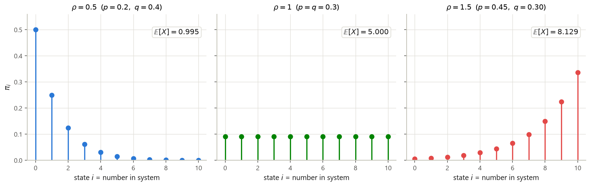
The infinite buffer, $\rho<1$
L17 slide 8 then takes $p<q$ (so $\rho<1$) and $m\approx\infty$ and asserts $\pi_0=1-\rho$ and $\mathbb{E}[X_n]=\rho/(1-\rho)$, with both derivations left off the slide. Here they are.
The normalization. With $\rho<1$ we have $\rho^{\,m+1}\to0$ as $m\to\infty$, so
$$\sum_{i=0}^{\infty}\pi_i=\pi_0\sum_{i=0}^{\infty}\rho^{\,i}=\frac{\pi_0}{1-\rho}=1 \qquad\Longrightarrow\qquad \pi_0=1-\rho,$$using the infinite geometric series $\sum_{i\ge0}\rho^i=1/(1-\rho)$, which converges precisely because $\rho<1$. Hence
$$\pi_i=(1-\rho)\rho^{\,i},\qquad i=0,1,2,\dots$$The mean. Two routes to the same answer; take whichever you find faster.
Route 1 (recognize the PMF). $\pi_i=(1-\rho)\rho^i$ for $i=0,1,2,\dots$ is the PMF of a shifted geometric random variable: if $Y$ is geometric with parameter $1-\rho$ on $\{1,2,\dots\}$, i.e. $p_Y(y)=(1-\rho)\rho^{\,y-1}$, then $X=Y-1$ has exactly this PMF. From G2, $\mathbb{E}[Y]=1/(1-\rho)$, so
$$\mathbb{E}[X]=\mathbb{E}[Y]-1=\frac{1}{1-\rho}-1=\frac{1-(1-\rho)}{1-\rho}=\frac{\rho}{1-\rho}.$$Route 2 (sum directly). Start from $\sum_{i\ge0}\rho^i=\frac{1}{1-\rho}$ and differentiate both sides with respect to $\rho$ (legal inside the radius of convergence):
$$\sum_{i\ge1}i\,\rho^{\,i-1}=\frac{1}{(1-\rho)^2} \qquad\Longrightarrow\qquad \sum_{i\ge0}i\,\rho^{\,i}=\frac{\rho}{(1-\rho)^2}\ \ \text{(multiply by }\rho).$$Therefore
$$\mathbb{E}[X]=\sum_{i\ge0}i\,\pi_i=(1-\rho)\sum_{i\ge0}i\rho^{\,i} =(1-\rho)\cdot\frac{\rho}{(1-\rho)^2}=\frac{\rho}{1-\rho}. \checkmark$$Both [DERIVATION GAP]s on L17 slide 8 are now closed. The formula is checked numerically in
computes/g5_s3.py section D by truncating the geometric distribution at $4000$ states:
the largest discrepancy over $\rho\in\{0.2,0.5,0.8,0.9,0.95,0.99\}$ is $4.3\times10^{-14}$.
| $\rho$ | 0.2 | 0.5 | 0.8 | 0.9 | 0.95 | 0.99 |
|---|---|---|---|---|---|---|
| $\pi_0=1-\rho$ | 0.800 | 0.500 | 0.200 | 0.100 | 0.050 | 0.010 |
| $\mathbb{E}[X]=\rho/(1-\rho)$ | 0.25 | 1.00 | 4.00 | 9.00 | 19.00 | 99.00 |
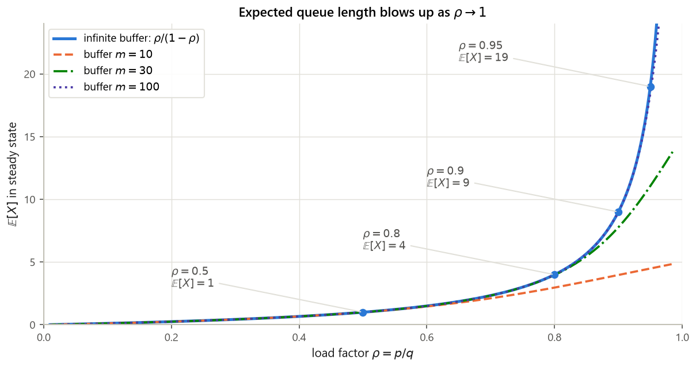
$\rho\ge1$: no steady state without a buffer
If $\rho>1$ the series $\sum_i\rho^i$ diverges, so no choice of $\pi_0>0$ can normalize
$\pi_i=\pi_0\rho^i$ over infinitely many states: there is no stationary distribution. The
finite-$m$ formula still works and shows what goes wrong as the buffer grows. With
$p=0.45$, $q=0.30$ ($\rho=1.5$), from computes/g5_s3.py:
| $m$ | 5 | 10 | 20 | 40 | 80 |
|---|---|---|---|---|---|
| $\pi_0$ | $4.81\times10^{-2}$ | $5.85\times10^{-3}$ | $1.00\times10^{-4}$ | $3.02\times10^{-8}$ | $2.73\times10^{-15}$ |
| $\pi_m$ | 0.365414 | 0.337232 | 0.333400 | 0.333333 | 0.333333 |
| $\mathbb{E}[X]$ | 3.577 | 8.129 | 18.004 | 38.000 | 78.000 |
Every fixed state's probability decays to $0$ as $m\to\infty$ (B&T p. 361 makes exactly this point) while $\pi_m\to1-1/\rho=1-2/3=1/3$ piles up at the ceiling and $\mathbb{E}[X]\approx m-2$ tracks the buffer. In the infinite-buffer limit the chain visits every particular state only finitely often — the queue grows without bound. The case $\rho=1$ is the knife's edge: $\pi_i=1/(m+1)$ for every $i$, uniform, and $\mathbb{E}[X]=m/2$, so it too diverges with the buffer, just linearly rather than by pile-up.
Solution
$\rho=p/q=0.3/0.5=0.6=3/5$. Local balance gives $\pi_i=\pi_0\rho^i$, and normalization needs
$$\sum_{i=0}^{4}\left(\tfrac35\right)^i=1+\tfrac35+\tfrac9{25}+\tfrac{27}{125}+\tfrac{81}{625}
=\frac{625+375+225+135+81}{625}=\frac{1441}{625}=2.3056 .$$
Hence $\pi_0=\dfrac{625}{1441}=0.433727$, and
$$\pi=(0.433727,\;0.260236,\;0.156142,\;0.093685,\;0.056211),$$
matching computes/g5_s3.py section F. Mean:
$\mathbb{E}[X]=\sum_{i=0}^4 i\pi_i=1.078418$ packets. For comparison the infinite-buffer value would
be $\rho/(1-\rho)=0.6/0.4=1.5$; the 4-packet ceiling has cut the mean by about 28%, because the
probability mass that an unbounded buffer would put on states $\ge5$ — a fraction
$\rho^5=0.6^5=0.07776$ of the time, by the tail formula of Practice 3.9 — has been squeezed back
down into states $0$ through $4$.
Solution
Solve $\rho/(1-\rho)=4$: $\rho=4-4\rho$, so $5\rho=4$ and $\rho=0.8$. That is the largest tolerable value, since $\rho/(1-\rho)$ is increasing in $\rho$ (its derivative $1/(1-\rho)^2$ is positive).
Empty fraction: $\pi_0=1-\rho=0.2$, i.e. 20% of periods. Tail: since
$\pi_i=(1-\rho)\rho^i$,
$$\mathbf{P}(X\ge5)=\sum_{i\ge5}(1-\rho)\rho^i=(1-\rho)\rho^5\sum_{j\ge0}\rho^j
=(1-\rho)\rho^5\cdot\frac{1}{1-\rho}=\rho^5=0.8^5=0.32768 .$$
(The general fact worth remembering: $\mathbf{P}(X\ge k)=\rho^k$, a clean geometric tail.) At
$\rho=0.9$ the same tail would be $0.9^5=0.59049$ — computed in computes/g5_s3.py
section F — so nudging the load up by an eighth nearly doubles the chance of a deep backlog.
3.6 The phone company: an inhomogeneous birth–death chain (L18 slide 4)
Step 1 — discretize time. Chop time into slots of small length $\delta$ and let $X_n$ be the number of calls in progress at the end of slot $n$; the state space is $\{0,1,\dots,B\}$. From G4 §3, the defining small-interval property of a Poisson process gives
$$\mathbf{P}(\text{one arrival in a slot})=\lambda\delta+o(\delta),\qquad \mathbf{P}(\text{two or more arrivals})=o(\delta).$$For departures: a call in progress has an exponential duration, which is memoryless (G3), so regardless of how long it has already been running it ends during the next $\delta$ with probability $\mu\delta+o(\delta)$. If $i$ calls are in progress, they are independent, so the probability that exactly one of them ends is $i\mu\delta+o(\delta)$ (the $i$ ways of choosing which one, each of probability $\mu\delta$, minus overlaps of order $\delta^2$). Dropping all $o(\delta)$ terms — legitimate in the limit $\delta\to0$ — we get a birth–death chain with
$$p_i=\lambda\delta\ \ (0\le i<B),\qquad q_i=i\mu\delta\ \ (1\le i\le B),\qquad p_{ii}=1-\lambda\delta-i\mu\delta .$$This closes the first half of the L18 slide-4 [DERIVATION GAP]. Note the structure: the birth rate is constant (arrivals do not care how busy you are), while the death rate is proportional to the state (the more calls in progress, the more of them can finish).
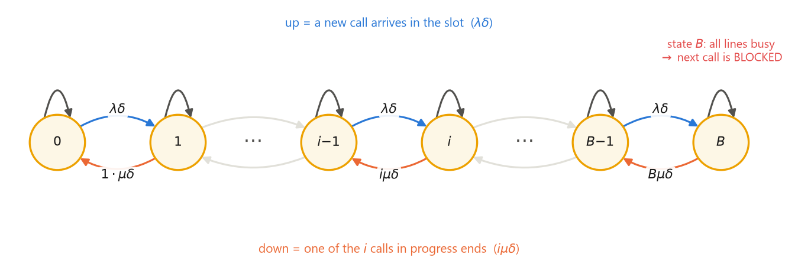
Step 2 — local balance. The chain is birth–death, so §3.4's cut equation applies across the cut between $i-1$ and $i$:
$$\pi_{i-1}\,(\lambda\delta)=\pi_i\,(i\mu\delta) \qquad\Longrightarrow\qquad \lambda\,\pi_{i-1}=i\mu\,\pi_i,\qquad i=1,\dots,B,$$which is the equation printed on the slide. The slot length $\delta$ appears on both sides and cancels — the answer does not depend on how finely we chopped time, which is exactly what we needed for the discretization to be an honest model of the continuous-time system.
Step 3 — telescope. Rearranging, $\pi_i=\pi_{i-1}\lambda/(i\mu)$. Applying this repeatedly from $\pi_0$:
$$ \pi_1=\pi_0\frac{\lambda}{1\mu},\qquad \pi_2=\pi_1\frac{\lambda}{2\mu}=\pi_0\frac{\lambda^2}{2\mu^2},\qquad \pi_3=\pi_2\frac{\lambda}{3\mu}=\pi_0\frac{\lambda^3}{3\cdot2\,\mu^3},\ \dots $$ $$\pi_i=\pi_0\prod_{k=1}^{i}\frac{\lambda}{k\mu} =\pi_0\frac{\lambda^i}{\mu^i}\cdot\frac{1}{1\cdot2\cdots i} =\pi_0\frac{\lambda^i}{\mu^i\,i!},\qquad i=0,1,\dots,B,$$the formula on the slide (second half of the [DERIVATION GAP]: the product $\prod_k 1/k$ is what produces the factorial).
Step 4 — normalize.
$$1=\sum_{i=0}^{B}\pi_i=\pi_0\sum_{i=0}^{B}\frac{\lambda^i}{\mu^i\,i!} \qquad\Longrightarrow\qquad \pi_0=\left(\sum_{i=0}^{B}\frac{\lambda^i}{\mu^i\,i!}\right)^{-1}.$$Step 5 — read off the blocking probability. A call is blocked exactly when it arrives to find the system in state $B$. Because arrivals come from a Poisson process, they are equally likely to fall at any instant and are independent of the current state, so the fraction of arriving calls that see state $B$ equals the fraction of time the system spends in state $B$ — which is $\pi_B$ by §3.3. Hence
$$\boxed{\ \mathbf{P}(\text{call blocked})=\pi_B =\frac{a^B/B!}{\sum_{i=0}^{B}a^i/i!},\qquad a=\frac{\lambda}{\mu}.\ }$$This is the Erlang-B formula, the oldest formula in telephone engineering (Erlang, 1917). L18 slide 4 stops before naming it; the interpretation is the missing last line of the slide.
A worked instance. Take $\lambda=30$ calls per minute and a mean call duration of $1/\mu=0.1$ minutes ($\mu=10$ per minute), with $B=4$ lines. Then $a=\lambda/\mu=3$ erlangs, and the unnormalized weights are
$$1,\quad 3,\quad \frac{3^2}{2}=4.5,\quad \frac{3^3}{6}=4.5,\quad \frac{3^4}{24}=3.375, \qquad\text{sum }=16.375 .$$Dividing, and clearing to a common denominator of $131$ (multiply every weight by $8$):
$$\pi=\left(\tfrac{8}{131},\,\tfrac{24}{131},\,\tfrac{36}{131},\,\tfrac{36}{131},\,\tfrac{27}{131}\right) =(0.061069,\,0.183206,\,0.274809,\,0.274809,\,0.206107).$$So $\mathbf{P}(\text{blocked})=\pi_4=27/131=0.206107$: more than one call in five is lost. Two
independent checks, both in computes/g5_s3.py section E. (i) Building the discretized
$5\times5$ transition matrix with $\delta=10^{-4}$ and solving $\pi=\pi P$ numerically reproduces
these five numbers to $9.2\times10^{-16}$ — confirming that $\delta$ really does cancel. (ii) The
mean number of busy lines is $\sum_i i\pi_i=2.381679$, which must also equal
$a\,(1-\pi_B)=3(1-0.206107)=2.381679$ (offered load minus blocked load); the two agree to
$4.4\times10^{-16}$.
Sizing the exchange. Blocking falls fast in $B$. At $a=3$ erlangs:
| $B$ | 1 | 2 | 4 | 6 | 8 | 10 | 12 |
|---|---|---|---|---|---|---|---|
| $\mathbf{P}(\text{blocked})$ | 0.750000 | 0.529412 | 0.206107 | 0.052157 | 0.008132 | 0.000810 | 0.000055 |
Eight lines are the smallest number achieving the industry-standard 1% grade of service ($0.008132<0.01$; seven lines give $0.021864$). Note that $8$ lines serve an offered load of $3$ erlangs — you must over-provision by more than a factor of two, and the factor shrinks as the system gets bigger (this is the economy of scale that makes large exchanges efficient).
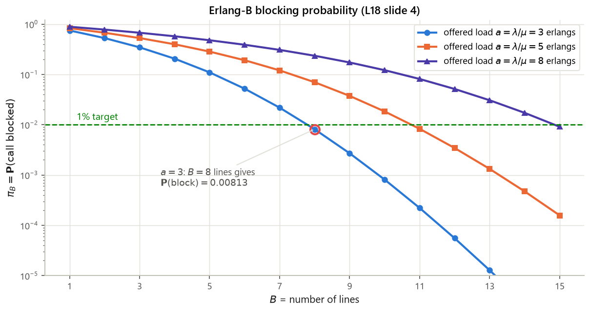
Solution
Convert to consistent units: mean handling time $3$ min $=0.05$ h, so $\mu=1/0.05=20$ calls per hour per agent, and the offered load is $a=\lambda/\mu=100/20=5$ erlangs.
With $B=8$, the unnormalized weights $a^i/i!$ for $i=0,\dots,8$ are
$1,\;5,\;12.5,\;20.8333,\;26.0417,\;26.0417,\;21.7014,\;15.5010,\;9.6881$, summing to
$138.30717$. Hence
$$\mathbf{P}(\text{blocked})=\pi_8=\frac{9.68812}{138.30717}=0.070048,$$
and $\pi_0=1/138.30717=0.007230$. Mean busy agents $=\sum_i i\pi_i=4.649761$, which also equals
$a(1-\pi_B)=5(1-0.070048)=4.649761$ ✓. All values from
computes/g5_s3.py section E.
Scanning upward (same section): $B=9$ gives $0.037$, and $B=10$ gives $0.018385<0.02$. So 10 agents. Adding two agents to a team of eight cuts lost calls from 7% to under 2% — the steep part of the Erlang-B curve is exactly where a couple of extra servers buy the most.
- Convergence (L17 slide 5, L18 slide 2). Single recurrent class + aperiodic $\Rightarrow r_{ij}(n)\to\pi_j$ for every $i$. Two classes $\Rightarrow$ the limit remembers $X_0$; periodic $\Rightarrow$ no limit (but the $\pi_j$ still are the long-run frequencies).
- Balance equations. $\displaystyle\pi_j=\sum_k\pi_kp_{kj}$ for each $j$, obtained by letting $n\to\infty$ in $r_{ij}(n)=\sum_kr_{ik}(n-1)p_{kj}$ (finite sums only). They are dependent — they sum to $0=0$ — so drop one and adjoin $\displaystyle\sum_j\pi_j=1$. In matrix form $\pi=\pi P$ with $\pi$ a row vector.
- Frequency reading (L17 slide 6). $\pi_j$ = long-run fraction of time in $j$; $\pi_jp_{jk}$ = long-run frequency of the transition $j\to k$; balance = flow in equals flow out. Long-run average cost $=\sum_j\pi_jc_j$ (state costs) or $\sum_{j,k}\pi_jp_{jk}d_{jk}$ (transition costs). Also $t_j^*=1/\pi_j$ (§4).
- Two-state chain (L17 slide 7 / L18 slide 3). $p_{11}=0.5,p_{12}=0.5,p_{21}=0.2,p_{22}=0.8 \Rightarrow \pi=(2/7,\,5/7)$, and both L18 slide-3 answers equal $1/7\approx0.142857$.
- Birth–death (L17 slide 8). Local balance across each cut: $\pi_ip_i=\pi_{i+1}q_{i+1}$, hence $\displaystyle\pi_i=\pi_0\prod_{k=1}^{i}\frac{p_{k-1}}{q_k}$, with $\pi_0$ from normalization. Valid because the chain is a line — not a general fact.
- Constant $p,q$. $\rho=p/q$; $\pi_i=\pi_0\rho^{\,i}$; $\pi_0=(1-\rho)/(1-\rho^{m+1})$ for finite $m$, $\pi_0=1/(m+1)$ when $\rho=1$. Infinite buffer with $\rho<1$: $\pi_i=(1-\rho)\rho^{\,i}$, $\mathbf{P}(X\ge k)=\rho^k$, $\mathbb{E}[X]=\rho/(1-\rho)$ — which diverges as $\rho\to1$ ($\rho=0.9\Rightarrow9$; $\rho=0.99\Rightarrow99$). No stationary distribution at all if $\rho\ge1$ and the buffer is infinite.
- Erlang-B (L18 slide 4). Constant birth rate $\lambda\delta$, state-proportional death rate $i\mu\delta$ $\Rightarrow \lambda\pi_{i-1}=i\mu\pi_i \Rightarrow \pi_i=\pi_0a^i/i!$ with $a=\lambda/\mu$ erlangs; blocking $=\pi_B=\dfrac{a^B/B!}{\sum_{i=0}^Ba^i/i!}$ (truncated Poisson). For $a=3$, $B=4$: $\pi_B=27/131=0.2061$; $B=8$ brings it to $0.00813$.
§4 Absorption probabilities and expected time to absorption
Sources: L18 slides 5–7 (raster p02) · rec19 Problem 1(a)–(h) · Bertsekas–Tsitsiklis §7.4 (absorption probability equations; Example 7.11 gambler's ruin; Example 7.12 spider-and-fly, whose chain is B&T Example 7.2 and its Figure 7.19; Example 7.13 and the mean first passage / recurrence time equations; B&T Problem 7.33 for the uniqueness argument, B&T Problem 7.34 for $\pi_s=1/t_s^*$). Every number on this page is recomputed in computes/g5_s4.py (exact rational elimination, an independent numpy.linalg.solve on each system, and Monte-Carlo checks); every figure is generated by computes/g5_s4_figs.py.
Section 3 answered the long-run question: if a chain has a single aperiodic recurrent class, where is it after a very long time? This section answers the two short-run questions that the long-run answer throws away. Suppose the chain starts in a transient state and there is more than one place it can get stuck. Which trap does it fall into, and how long does the fall take? Steady-state analysis cannot tell you: the steady-state probability of every transient state is $0$ no matter how long the chain lingers there, and if there are two absorbing states the limiting distribution depends on where you started, which is exactly the information the balance equations discard.
Both questions are answered by the same idea, and the idea is one you already own. In G4 §1 you computed $\mathbb{E}[X]$ by conditioning on a first coin flip; in G2 §3 you got the geometric mean $1/p$ from the recursion $\mathbb{E}[X]=1+(1-p)\mathbb{E}[X]$. Do the same here — condition on the first transition — and the Markov property guarantees that what follows the first transition is a fresh copy of the same problem started at the new state. One unknown per state, one equation per state, and a linear system to solve. The technique is called first-step analysis, and it is the whole of L18 slides 5–7 and the whole of rec19.
4.1 Absorbing states and absorption probabilities
Why we may always assume the recurrent states are absorbing. The questions of this section are "which recurrent class is entered, and when". The instant the chain enters a recurrent class it can never leave it (§2), so everything that happens afterwards is irrelevant to both questions. We may therefore doctor the chain: take each recurrent class, merge its states into a single new state, and make that state absorbing. This changes nothing about which class is entered or how long that takes, and it leaves us with a chain in which every state is either transient or absorbing (B&T §7.4 does exactly this in its Figure 7.17, where states 4 and 5 are lumped into a single absorbing state 6). All of §4 is written for such a chain.
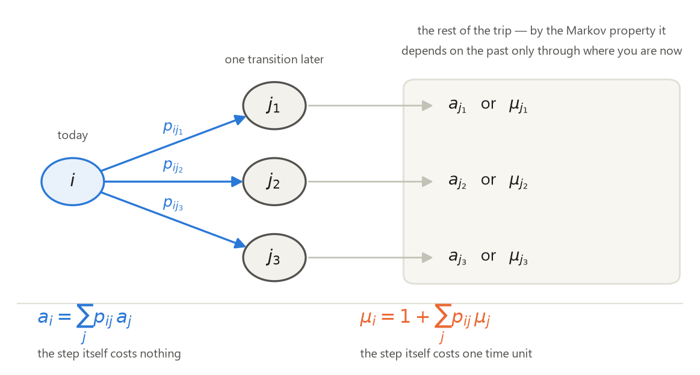
Derivation, every step. The two boundary conditions are immediate from the definition: if $X_0=s$ the chain is already absorbed at $s$, so the event has probability $1$; if $X_0=i$ is some other absorbing state, the chain never moves, so it never reaches $s$ and the probability is $0$. For a transient $i$, let $A$ be the event "$X_n$ eventually equals $s$". Condition on the first transition: $$a_i=\mathbf{P}(A\mid X_0=i) =\sum_{j=1}^{m}\mathbf{P}(A\mid X_0=i,\,X_1=j)\,\mathbf{P}(X_1=j\mid X_0=i),$$ which is the total probability theorem (G1 §2) applied to the partition of the sample space by the value of $X_1$, everything conditioned on $X_0=i$. The second factor is by definition $p_{ij}$. For the first factor, note that $A$ is an event about $X_1,X_2,\ldots$; by the Markov property, once we know $X_1=j$, the extra conditioning on $X_0=i$ tells us nothing more about the future, so $$\mathbf{P}(A\mid X_0=i,\,X_1=j)=\mathbf{P}(A\mid X_1=j)=a_j ,$$ the last equality because the chain is time-homogeneous — the probability of eventually hitting $s$ starting from $j$ at time $1$ is the same as starting from $j$ at time $0$. Substituting both factors, $$a_i=\sum_{j=1}^{m}p_{ij}\,a_j .\qquad\blacksquare$$
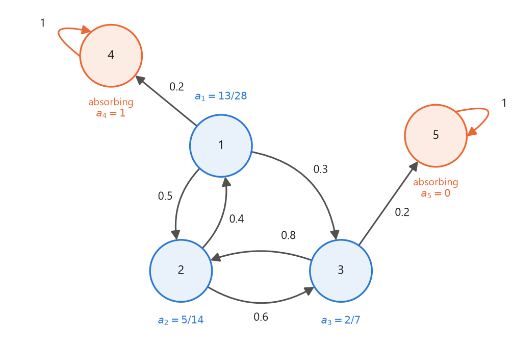
Step 1 — boundary conditions. The target is $s=4$, so $a_4=1$; the other absorbing state gives $a_5=0$. These are the two blanks the slide leaves for lecture.
Step 2 — one equation per transient state. Apply $a_i=\sum_j p_{ij}a_j$ to $i=1,2,3$, substituting the known boundary values as we go: $$a_1=0.2\,a_4+0.5\,a_2+0.3\,a_3=0.2+0.5a_2+0.3a_3,$$ $$a_2=0.4\,a_1+0.6\,a_3,$$ $$a_3=0.8\,a_2+0.2\,a_5=0.8a_2 .$$
Step 3 — eliminate. The third equation already gives $a_3$ in terms of $a_2$. Put it into the second: $$a_2=0.4a_1+0.6(0.8a_2)=0.4a_1+0.48a_2 \;\Longrightarrow\; (1-0.48)a_2=0.4a_1 \;\Longrightarrow\; 0.52\,a_2=0.4\,a_1 ,$$ so $a_2=\frac{0.4}{0.52}a_1=\frac{10}{13}a_1$ and therefore $a_3=0.8\cdot\frac{10}{13}a_1=\frac{8}{13}a_1$.
Step 4 — close the loop on $a_1$. Substitute both into the first equation: $$a_1=0.2+0.5\cdot\tfrac{10}{13}a_1+0.3\cdot\tfrac{8}{13}a_1 =0.2+\frac{5+2.4}{13}a_1=0.2+\frac{7.4}{13}a_1 .$$ Move the $a_1$ term across: $\left(1-\frac{7.4}{13}\right)a_1=0.2$, i.e. $\frac{5.6}{13}a_1=0.2$, hence $$a_1=\frac{0.2\cdot13}{5.6}=\frac{2.6}{5.6}=\frac{13}{28}=0.464286 .$$
Step 5 — back-substitute.
$$a_2=\frac{10}{13}\cdot\frac{13}{28}=\frac{10}{28}=\frac{5}{14}=0.357143,\qquad
a_3=\frac{8}{13}\cdot\frac{13}{28}=\frac{8}{28}=\frac{2}{7}=0.285714 .$$
(Keys L18_a1, L18_a2, L18_a3; a $400{,}000$-run simulation
started at state $1$ lands in state $4$ a fraction $0.463990$ of the time,
L18_a1_mc.)
Sanity checks. All three are between $0$ and $1$, as probabilities must be. They are ordered $a_1>a_2>a_3$, which is right: state $1$ is the only state with a direct arc into $4$, and state $3$ is the only state with a direct arc into the rival absorbing state $5$. And the absorption probabilities for the target $5$ are the complements $15/28$, $9/14$, $5/7$.
Solution
Make state $1$ absorbing (we only care about reaching it, not what happens after) and keep $5$ absorbing; state $4$ is unreachable without passing through $1$, so it can be dropped. Let $h_i$ be the probability of reaching $1$ before $5$. Then $h_1=1$, $h_5=0$, and $$h_2=0.4h_1+0.6h_3=0.4+0.6h_3,\qquad h_3=0.8h_2+0.2h_5=0.8h_2 .$$ Substituting, $h_2=0.4+0.6(0.8h_2)=0.4+0.48h_2$, so $0.52h_2=0.4$ and $h_2=0.4/0.52=10/13=0.769231$. Note this is exactly the ratio $a_2/a_1$ found in Step 3 above — and that is no accident: to be absorbed at $4$ starting from $2$ you must pass through $1$ (it is the only state with an arc to $4$), so $a_2=h_2\,a_1$ by the multiplication rule plus the Markov property.
Solution
Take $s=A$, so $a_A=1$, $a_B=0$, and
$$a_1=\tfrac12a_2+\tfrac12(1),\qquad a_2=\tfrac14a_1+\tfrac34(0)=\tfrac14a_1 .$$
Substitute the second into the first: $a_1=\tfrac12\cdot\tfrac14a_1+\tfrac12=\tfrac18a_1+\tfrac12$,
so $\tfrac78a_1=\tfrac12$ and $a_1=\tfrac{4}{7}=0.571429$. Then
$a_2=\tfrac14\cdot\tfrac47=\tfrac17=0.142857$ (keys prac_2_a1,
prac_2_a2). Check: from state $2$ you are absorbed at $A$ only by first returning to
$1$ (probability $1/4$) and then being absorbed at $A$ from there, so $a_2=\tfrac14a_1$ — consistent.
4.2 Expected time to absorption
Derivation, every step (L18 slide 6 states the recursion but derives nothing). Let $T$ be the number of transitions until absorption. Starting from a transient $i$ the chain certainly makes at least one transition, so write $T=1+T'$, where $T'$ is the number of further transitions needed after the first one. Apply the total expectation theorem (G4 §1), conditioning on $X_1$: $$\mu_i=\mathbb{E}[T\mid X_0=i]=1+\mathbb{E}[T'\mid X_0=i] =1+\sum_{j=1}^{m}\mathbf{P}(X_1=j\mid X_0=i)\;\mathbb{E}[T'\mid X_0=i,\,X_1=j].$$ The first equality splits off the deterministic $1$ using linearity of expectation. In the last term, $T'$ counts transitions of the chain from time $1$ onward; by the Markov property and time homogeneity, given $X_1=j$ that count has exactly the distribution of $T$ for a chain started at $j$, and the extra conditioning on $X_0=i$ is irrelevant. Hence $\mathbb{E}[T'\mid X_0=i,X_1=j]=\mu_j$, and with $\mathbf{P}(X_1=j\mid X_0=i)=p_{ij}$, $$\mu_i=1+\sum_{j=1}^m p_{ij}\,\mu_j .\qquad\blacksquare$$ Uniqueness follows from the same $Q^n\to0$ argument as in §4.1: the system is $(I-Q)\mu=\mathbf{1}$.
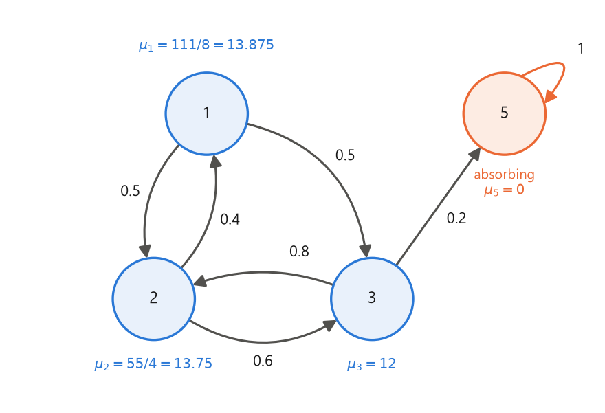
Step 1 — boundary condition. $\mu_5=0$ (the blank on the slide).
Step 2 — one equation per transient state. $$\mu_1=1+0.5\mu_2+0.5\mu_3,$$ $$\mu_2=1+0.4\mu_1+0.6\mu_3,$$ $$\mu_3=1+0.8\mu_2+0.2\mu_5=1+0.8\mu_2 .$$
Step 3 — eliminate $\mu_3$. Substitute $\mu_3=1+0.8\mu_2$ into the second equation: $$\mu_2=1+0.4\mu_1+0.6(1+0.8\mu_2)=1.6+0.4\mu_1+0.48\mu_2 \;\Longrightarrow\;0.52\,\mu_2=1.6+0.4\,\mu_1 .$$
Step 4 — eliminate $\mu_2$ and $\mu_3$ from the first equation. $$\mu_1=1+0.5\mu_2+0.5(1+0.8\mu_2)=1.5+0.5\mu_2+0.4\mu_2=1.5+0.9\,\mu_2 .$$ Now use $\mu_2=(1.6+0.4\mu_1)/0.52$: $$\mu_1=1.5+0.9\cdot\frac{1.6+0.4\mu_1}{0.52}.$$ Multiply both sides by $0.52$: $$0.52\mu_1=0.78+0.9(1.6+0.4\mu_1)=0.78+1.44+0.36\mu_1 ,$$ so $(0.52-0.36)\mu_1=2.22$, i.e. $0.16\,\mu_1=2.22$ and $$\mu_1=\frac{2.22}{0.16}=13.875=\frac{111}{8}.$$
Step 5 — back-substitute.
$$\mu_2=\frac{1.6+0.4(13.875)}{0.52}=\frac{1.6+5.55}{0.52}=\frac{7.15}{0.52}=13.75=\frac{55}{4},
\qquad \mu_3=1+0.8(13.75)=1+11=12 .$$
(Keys L18_mu1, L18_mu2, L18_mu3; simulation from state $1$
gives a mean of $13.828920$ transitions, L18_mu1_mc.)
Why so long? Only one arc leaves the transient triangle, the $0.2$ from state $3$ to state $5$, and the chain reaches state $3$ only intermittently. A rough sanity estimate: the chain spends roughly a third of its transient time at state $3$ and escapes with probability $0.2$ per visit, so absorption should take on the order of $3/0.2\approx15$ steps — the exact $13.875$ is in the right neighborhood.
- Classify first. Identify the recurrent classes and the transient states (§2). Lump every recurrent class into one absorbing state unless the question asks something about behavior inside a class.
- Decide what the unknown is. "Which trap?" $\Rightarrow$ absorption probabilities $a_i$, one target at a time. "How long until any trap?" $\Rightarrow$ expected times $\mu_i$. "How long until one specific state $s$?" $\Rightarrow$ mean first passage times $t_i$ (§4.4): make $s$ absorbing and re-use the $\mu$ machinery.
- Write the boundary conditions first. $a_s=1$ and $a_i=0$ at the other absorbing states; or $\mu_i=0$ at every absorbing state; or $t_s=0$.
- Write one equation per transient state by first-step analysis, substituting the boundary values immediately. Charge $+1$ if and only if you are counting time.
- Solve and check. Probabilities must lie in $[0,1]$ and the $a_i$ over all absorbing targets must sum to $1$; expected times must be positive and at least $1$ from any transient state.
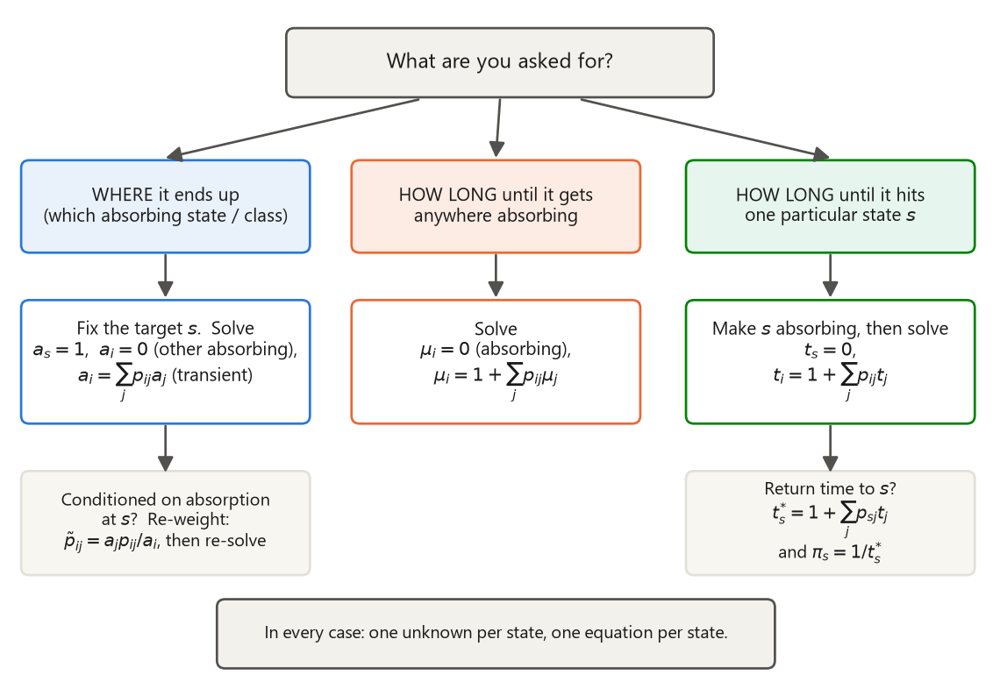
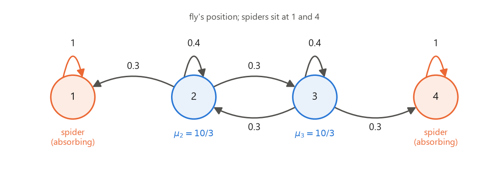
(i) Expected time. Boundary: $\mu_1=\mu_4=0$. For the two transient states,
$$\mu_2=1+0.3\mu_1+0.4\mu_2+0.3\mu_3=1+0.4\mu_2+0.3\mu_3,$$
$$\mu_3=1+0.3\mu_2+0.4\mu_3+0.3\mu_4=1+0.3\mu_2+0.4\mu_3 .$$
The chain is symmetric under $2\leftrightarrow3$ (relabel positions by reflection and the transition
probabilities are unchanged), so $\mu_2=\mu_3=:\mu$. Both equations then collapse to the same one:
$$\mu=1+0.4\mu+0.3\mu=1+0.7\mu\;\Longrightarrow\;0.3\,\mu=1\;\Longrightarrow\;\mu=\frac{10}{3}=3.333333 .$$
(Keys spider_mu2, spider_mu3; simulation gives $3.331443$.) If you do not
want to invoke symmetry, eliminate directly. The second equation rearranges to $0.6\mu_3=1+0.3\mu_2$,
i.e. $\mu_3=(1+0.3\mu_2)/0.6$. The first rearranges to $0.6\mu_2=1+0.3\mu_3$, and substituting,
$$0.3\mu_3=0.3\cdot\frac{1+0.3\mu_2}{0.6}=0.5\left(1+0.3\mu_2\right)=0.5+0.15\mu_2 ,$$
so $0.6\mu_2=1+0.5+0.15\mu_2$, giving $0.45\mu_2=1.5$ and $\mu_2=10/3$ as before.
Interpretation of $10/3$. From either interior state the fly escapes the pair $\{2,3\}$ only by the $0.3$ arc into a spider; the self-loops and the $2\leftrightarrow3$ moves waste time. Because the two interior states are interchangeable, the effective escape probability per step is exactly $0.3$, and the time to absorption is geometric with parameter $0.3$ — mean $1/0.3=10/3$ (G2 §3). The linear system just rediscovered the geometric mean.
(ii) Which spider. Take $s=4$, so $a_4=1$, $a_1=0$, and
$$a_2=0.3(0)+0.4a_2+0.3a_3\;\Longrightarrow\;0.6a_2=0.3a_3 ,$$
$$a_3=0.3a_2+0.4a_3+0.3(1)\;\Longrightarrow\;0.6a_3=0.3a_2+0.3 .$$
From the first, $a_3=2a_2$. Substituting into the second, $0.6(2a_2)=0.3a_2+0.3$, i.e.
$1.2a_2-0.3a_2=0.3$, so $0.9a_2=0.3$ and
$$a_2=\frac{1}{3}=0.333333,\qquad a_3=\frac{2}{3}=0.666667 .$$
(Keys spider_a2, spider_a3; simulation from state $2$ gives $0.332742$.)
These are the linear interpolation $a_i=(i-1)/(m-1)$ — the signature of a symmetric random
walk, and exactly the fair-game gambler's ruin formula of §4.3. The self-loop probability $0.4$
cancels out of the absorption probabilities entirely: standing still cannot change where you
eventually end up, only how long you take to get there.
Solution
$\mu_A=\mu_B=0$, and
$$\mu_1=1+\tfrac12\mu_2,\qquad \mu_2=1+\tfrac14\mu_1 .$$
Substitute the second into the first:
$\mu_1=1+\tfrac12\left(1+\tfrac14\mu_1\right)=\tfrac32+\tfrac18\mu_1$, so
$\tfrac78\mu_1=\tfrac32$ and $\mu_1=\tfrac{12}{7}=1.714286$ (key prac_2_mu1). Then
$\mu_2=1+\tfrac14\cdot\tfrac{12}{7}=1+\tfrac37=\tfrac{10}{7}=1.428571$ (prac_2_mu2).
Both exceed $1$, as they must.
Solution
$\mu_1=\mu_5=0$ and
$$\mu_2=1+0.4\mu_2+0.3\mu_3,\qquad
\mu_3=1+0.3\mu_2+0.4\mu_3+0.3\mu_4,\qquad
\mu_4=1+0.3\mu_3+0.4\mu_4 .$$
Symmetry gives $\mu_2=\mu_4$. The first equation becomes $0.6\mu_2=1+0.3\mu_3$, so
$\mu_2=(1+0.3\mu_3)/0.6$. The middle equation becomes $0.6\mu_3=1+0.6\mu_2=1+(1+0.3\mu_3)$, i.e.
$0.6\mu_3-0.3\mu_3=2$, so $0.3\mu_3=2$ and $\mu_3=\tfrac{20}{3}=6.666667$. Then
$\mu_2=\mu_4=(1+0.3\cdot\tfrac{20}{3})/0.6=(1+2)/0.6=5$ (keys prac_4_mu2,
prac_4_mu3, prac_4_mu4). $\mu_3>\mu_2$ because the middle state is two
steps from either spider while the outer transient states are one step from one of them.
4.3 Gambler's ruin
The single most important absorption problem in the course, because it is the one with a closed form. B&T give it as Example 7.11.
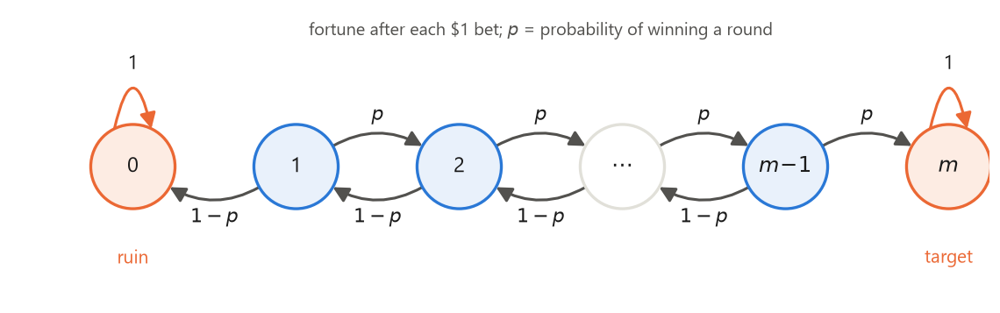
Setting up. The state $X_n$ is the fortune after $n$ rounds, taking values $0,1,\ldots,m$. States $0$ and $m$ are absorbing; every other state has $p_{i,i+1}=p$ and $p_{i,i-1}=1-p$. Fix the target $s=m$, so $a_i$ is the probability of winning. First-step analysis gives $$a_0=0,\qquad a_m=1,\qquad a_i=p\,a_{i+1}+(1-p)\,a_{i-1},\quad i=1,\ldots,m-1 .$$
The trick that makes it solvable. Because $p+(1-p)=1$ we may write the left-hand side as $a_i=p\,a_i+(1-p)\,a_i$ — this is the only clever step in the whole derivation. Subtracting, $$p\,a_i+(1-p)a_i=p\,a_{i+1}+(1-p)a_{i-1} \;\Longrightarrow\; p\,(a_{i+1}-a_i)=(1-p)\,(a_i-a_{i-1}).$$ Introduce the successive differences $$\delta_i=a_{i+1}-a_i,\qquad i=0,1,\ldots,m-1,$$ and the odds ratio $$\rho=\frac{1-p}{p},$$ the ratio of the probability of losing a round to the probability of winning one. The relation above becomes simply $\delta_i=\rho\,\delta_{i-1}$ for $i=1,\ldots,m-1$, so by induction $$\delta_i=\rho^{\,i}\delta_0,\qquad i=0,\ldots,m-1 .$$
Pin down $\delta_0$. The differences telescope: $$\sum_{i=0}^{m-1}\delta_i=(a_1-a_0)+(a_2-a_1)+\cdots+(a_m-a_{m-1})=a_m-a_0=1-0=1 .$$ Substituting $\delta_i=\rho^i\delta_0$, $$\delta_0\left(1+\rho+\rho^2+\cdots+\rho^{\,m-1}\right)=1 \;\Longrightarrow\; \delta_0=\frac{1}{1+\rho+\cdots+\rho^{\,m-1}} .$$
Assemble $a_i$. Since $a_0=0$, $$a_i=a_0+\sum_{k=0}^{i-1}\delta_k=\delta_0\left(1+\rho+\cdots+\rho^{\,i-1}\right) =\frac{1+\rho+\cdots+\rho^{\,i-1}}{1+\rho+\cdots+\rho^{\,m-1}} .$$ Now evaluate the two finite geometric sums (G2 §3). If $\rho\ne1$, i.e. $p\ne\tfrac12$, the numerator is $(1-\rho^{\,i})/(1-\rho)$ and the denominator is $(1-\rho^{\,m})/(1-\rho)$, so the common factor $1/(1-\rho)$ cancels; if $\rho=1$ each sum is just its number of terms. Therefore $$\boxed{\;a_i=\begin{cases}\dfrac{1-\rho^{\,i}}{1-\rho^{\,m}}, & p\ne\tfrac12,\\[2ex] \dfrac{i}{m}, & p=\tfrac12,\end{cases}\qquad \rho=\frac{1-p}{p}. \;}$$
Expected duration. The same chain, now counting time: $D_0=D_m=0$ and
$$D_i=1+p\,D_{i+1}+(1-p)\,D_{i-1},\qquad i=1,\ldots,m-1 .$$
This is the $a$-recursion with an extra constant $1$, so its solution is any particular solution plus
the general solution of the homogeneous problem. For a particular solution try $D_i=ci$ (linear in
$i$):
$$ci=1+p\,c(i+1)+(1-p)\,c(i-1)=1+ci+c\big(p-(1-p)\big)=1+ci+c(2p-1),$$
so $0=1+c(2p-1)$ and $c=1/(1-2p)$, valid when $p\ne\tfrac12$. The homogeneous equation
$h_i=p\,h_{i+1}+(1-p)h_{i-1}$ is the one we just solved: its solutions are $h_i=A+B\rho^{\,i}$.
Hence $D_i=\dfrac{i}{1-2p}+A+B\rho^{\,i}$. Impose $D_0=0$: $A+B=0$, so $B=-A$ and
$D_i=\dfrac{i}{1-2p}+A\left(1-\rho^{\,i}\right)$. Impose $D_m=0$:
$$\frac{m}{1-2p}+A\left(1-\rho^{\,m}\right)=0\;\Longrightarrow\;A=-\frac{m}{(1-2p)\left(1-\rho^{\,m}\right)} .$$
Substituting and recognizing $a_i=(1-\rho^i)/(1-\rho^m)$,
$$\boxed{\;D_i=\begin{cases}\dfrac{i-m\,a_i}{1-2p}, & p\ne\tfrac12,\\[2ex]
i\,(m-i), & p=\tfrac12.\end{cases}\;}$$
For $p=\tfrac12$ the linear trial fails (the coefficient $1-2p$ vanishes) and one tries a quadratic:
$D_i=i(m-i)$ works, since
$1+\tfrac12\big[(i+1)(m-i-1)+(i-1)(m-i+1)\big]=1+\tfrac12\big[2im-2i^2-2\big]=i(m-i)$.
Every one of these closed forms is checked in computes/g5_s4.py against a direct
numpy.linalg.solve of the $(m-1)\times(m-1)$ system, for
$(p,m)\in\{(0.5,10),(0.4,10),(0.6,10),(0.45,20)\}$: agreement to $3\times10^{-13}$ or better.
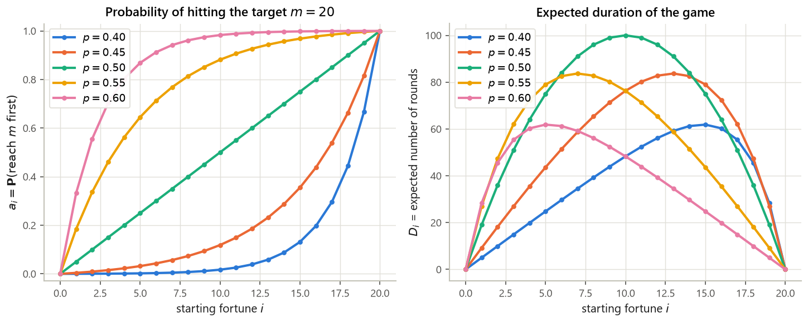
computes/g5_s4.py).ruin_tab_p50_m20_i10,
ruin_tab_p45_m20_i10, ruin_tab_p40_m20_i10). The reason is the $\rho^{\,i}$:
a small edge per round compounds geometrically over the many rounds the game lasts. Take the limit
$m\to\infty$ (playing forever against an infinitely rich house). If $p<\tfrac12$ then $\rho>1$,
so $\rho^m\to\infty$ and $a_i=(1-\rho^i)/(1-\rho^m)\to0$ for every fixed $i$: under unfavorable odds
you are ruined with probability $1$ no matter how large your bankroll. If $p>\tfrac12$ then
$\rho<1$ and $a_i\to1-\rho^{\,i}$, a number strictly less than $1$: even with the edge, ruin has
positive probability $\rho^{\,i}$ — at $p=0.55$ and $i=10$ the chance of eventually reaching any
target, however large, is $1-(9/11)^{10}=0.865569$ (key ruin_p55_inf_i10).ruin_tab_p50_m20_i10_D, ruin_tab_p45_m20_i10_D; simulation gives
$76.163450$). Drift in either direction shortens the game, because drift pushes you to a
boundary; a fair game diffuses aimlessly. So "the game ended quickly" is no evidence that it was
rigged in your favor. A second surprise: at $p=0.45$, $m=100$, $i=50$ the win probability is
$4.4\times10^{-5}$ yet the expected duration is $499.956099$ rounds (keys
ruin_p45_m100_i50_a, ruin_p45_m100_i50_D) — you lose almost surely, but
slowly, which is precisely what makes casinos profitable and gamblers hopeful.Solution
Here $m=100$, $i=50$, $\rho=(1-0.48)/0.48=0.52/0.48=13/12\approx1.083333$. Then
$$a_{50}=\frac{1-\rho^{50}}{1-\rho^{100}}=0.017949$$
(key prac_3_a) — under $2\%$, against $50\%$ for a fair game (prac_3_a_fair).
The expected number of hands is
$$D_{50}=\frac{50-100\,a_{50}}{1-2(0.48)}=\frac{50-1.7949}{0.04}=1205.128670$$
(key prac_3_D), versus $50\cdot50=2500$ for a fair game
(prac_3_D_fair). So: about twelve hundred hands, and you almost certainly leave with
nothing. The $2\%$ house edge per hand becomes a $98\%$ house edge over the session.
Solution
In a fair game the fortune is a martingale: $\mathbb{E}[X_{n+1}\mid X_n]=X_n$, so $\mathbb{E}[X_n]=i$ for all $n$, and at absorption $\mathbb{E}[X_\infty]=m\,a_i+0\cdot(1-a_i)=i$, giving $a_i=i/m$ — the fair-game absorption formula with no algebra. For the duration, apply the same idea to $X_n^2-n$: since each step changes $X$ by $\pm1$ with equal probability, $\mathbb{E}[X_{n+1}^2\mid X_n]=\tfrac12(X_n+1)^2+\tfrac12(X_n-1)^2=X_n^2+1$, so $\mathbb{E}[X_n^2]-n$ is constant, equal to $i^2$. At absorption $\mathbb{E}[X^2]=m^2a_i=m^2(i/m)=mi$, so $mi-D_i=i^2$ and $D_i=mi-i^2=i(m-i)$. (This martingale argument is not required by 6.041 — it is offered as a cross-check on the algebra above, and it reproduces $D_{10}=10\cdot10=100$ for $m=20$.)
4.4 Mean first passage and mean recurrence times
L18 slide 7 takes the $\mu$ machinery and points it at a different question: not "when do I get stuck" but "when do I first reach a particular state $s$", in a chain that need not have any absorbing states at all.
- The mean first passage time from $i$ to $s$ is $$t_i=\mathbb{E}\big[\min\{n\ge0:X_n=s\}\mid X_0=i\big].$$ Note the $n\ge0$: starting at $s$ costs nothing, so $t_s=0$.
- The mean recurrence time of $s$ is $$t_s^{*}=\mathbb{E}\big[\min\{n\ge1:X_n=s\}\mid X_0=s\big],$$ the expected number of steps to return to $s$. The $n\ge1$ is what makes it interesting.
Derivation. For the $t_i$: the transitions out of $s$ are irrelevant to how long it takes to first reach $s$, so replace the chain by one in which $s$ has been made absorbing ($p_{ss}=1$, $p_{sj}=0$ for $j\ne s$). In the new chain every other state is transient (they were all in one recurrent class, and now every path is eventually swallowed by $s$), and "time to reach $s$" is literally "time to absorption". So the equations are the $\mu$ equations of §4.2, verbatim, with $t_s=0$ playing the role of $\mu_{\text{absorbing}}=0$. Uniqueness is the same $Q^n\to0$ argument.
Derivation of the recurrence formula (L18 slide 7 states it without proof). Starting at $s$, the chain must make at least one transition — that is what $n\ge1$ means — landing at $j$ with probability $p_{sj}$. From $j$ the remaining number of steps to reach $s$ has mean $t_j$ (this is the first passage quantity, and it is legitimate to use it even for $j=s$, where $t_s=0$ correctly records that no further steps are needed). By the total expectation theorem, conditioning on $X_1$, $$t_s^{*}=\sum_{j=1}^m p_{sj}\big(1+t_j\big)=\sum_j p_{sj}+\sum_j p_{sj}t_j=1+\sum_{j=1}^{m}p_{sj}\,t_j ,$$ using $\sum_j p_{sj}=1$. $\blacksquare$
First passage. $t_1=0$ and
$$t_2=1+p_{21}t_1+p_{22}t_2=1+0.6(0)+0.4t_2=1+0.4t_2 ,$$
so $0.6t_2=1$ and $t_2=\dfrac{1}{0.6}=\dfrac53=1.666667$ (key bt713_t2). Interpretation:
each week you are behind, you have probability $0.6$ of catching up, so the wait is geometric with
parameter $0.6$ and mean $1/0.6$.
Recurrence.
$$t_1^{*}=1+p_{11}t_1+p_{12}t_2=1+0.8(0)+0.2\cdot\frac53=1+\frac13=\frac43=1.333333$$
(key bt713_t1star).
Cross-check with §3. $\pi_1=1/t_1^{*}=3/4=0.75$ and $\pi_2=1/4$. Solving the balance
equations directly, $\pi_1=0.8\pi_1+0.6\pi_2$ with $\pi_1+\pi_2=1$ gives $0.2\pi_1=0.6(1-\pi_1)$,
so $0.8\pi_1=0.6$ and $\pi_1=0.75$ — and raising the transition matrix to the $60$th power gives
$(P^{60})_{11}=0.750000$ (key bt713_pi_matrixpower). Three independent routes, one
answer.
Solution
$t_1=0$ and $t_2=1+p_{21}t_1+p_{22}t_2=1+0.8t_2$, so $0.2t_2=1$ and $t_2=5$ (key
prac_5_t2_correct). Then
$$t_1^{*}=1+p_{11}t_1+p_{12}t_2=1+0.5(0)+0.5(5)=\frac72=3.5$$
(key prac_5_t1star_correct), and $1/t_1^{*}=2/7=0.285714=\pi_1$ exactly as claimed
(prac_5_pi1_correct).
4.5 Conditioning on which absorbing state you reach
Here is the subtlest idea in the section, and rec19(e) is built on it. Suppose you are told after the fact that the chain ended up absorbed at $s$, and you want the expected time it took. This is not $\mu_i$: $\mu_i$ averages over all absorption events, including the ones that ended somewhere else, and those may be systematically faster or slower.
Derivation, every step. Start from the definition and apply Bayes' rule (G1 §2) with the conditioning event $\{X_n=i\}$ carried along throughout: $$\tilde p_{ij}=\mathbf{P}(X_{n+1}=j\mid X_n=i,A) =\frac{\mathbf{P}(A\mid X_{n+1}=j,\,X_n=i)\;\mathbf{P}(X_{n+1}=j\mid X_n=i)}{\mathbf{P}(A\mid X_n=i)} .$$ Now handle the three pieces. The middle factor is $p_{ij}$ by definition. The denominator is $a_i$ by definition of the absorption probability. For the numerator's first factor, $A$ is an event about the chain from time $n+1$ onward, so by the Markov property the conditioning on $X_n=i$ adds nothing once $X_{n+1}=j$ is known: $$\mathbf{P}(A\mid X_{n+1}=j,\,X_n=i)=\mathbf{P}(A\mid X_{n+1}=j)=a_j ,$$ the last step by time homogeneity. Putting the three together gives $\tilde p_{ij}=a_jp_{ij}/a_i$. $\blacksquare$
These really are transition probabilities. Nonnegativity is clear. For the row sum, use the absorption equation $a_i=\sum_j p_{ij}a_j$ itself: $$\sum_j \tilde p_{ij}=\sum_j\frac{a_jp_{ij}}{a_i}=\frac{1}{a_i}\sum_j p_{ij}a_j=\frac{a_i}{a_i}=1 .$$ So the absorption equations are exactly the normalization condition for the conditioned chain — a pleasing piece of bookkeeping, and a useful check when you compute the $\tilde p_{ij}$ by hand.
Solution
With $a_4=1$, $a_2=5/14=10/28$, $a_3=2/7=8/28$ and $a_1=13/28$: $$\tilde p_{14}=\frac{a_4p_{14}}{a_1}=\frac{1\cdot0.2}{13/28}=\frac{0.2\cdot28}{13}=\frac{5.6}{13}=\frac{28}{65},$$ $$\tilde p_{12}=\frac{a_2p_{12}}{a_1}=\frac{(10/28)(0.5)}{13/28}=\frac{5}{13}=\frac{25}{65}, \qquad \tilde p_{13}=\frac{a_3p_{13}}{a_1}=\frac{(8/28)(0.3)}{13/28}=\frac{2.4}{13}=\frac{12}{65}.$$ Sum: $(28+25+12)/65=65/65=1$. Notice the arc straight into the target has been boosted from $0.2$ to $28/65=0.4308$, while the arc toward state $3$ (the state most exposed to the rival absorbing state $5$) has been cut from $0.3$ to $12/65=0.1846$ — exactly the non-uniform reweighting the Gotcha warns about.
4.6 Recitation 19 in full: Josephina changes courses
(a) probability she eventually leaves course 6; (b) probability she eventually is in course 15; (c) expected number of days until she leaves course 6; (d) expected number of ice cream cones, where she buys one each time she switches into 6-1 from 6-2 or 6-3 but stops after two; (e) given that she ended up in course 15, the expected number of days it took; (f) with course 15 removed and 6-2's remaining probabilities kept in proportion, the expected days until course 9; (g) if courses 9 and 15 each switch to the other with probability $1/2$, the long-run distribution; (h) if courses 9 and 15 each return to 6-1 with probability $1/8$, the expected number of days until she is 6-1 again.
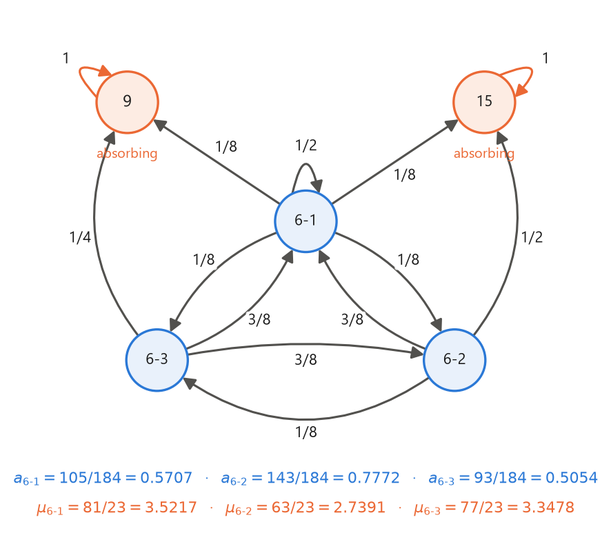
computes/g5_s4.py).Throughout, write $1=6\text{-}1$, $2=6\text{-}2$, $3=6\text{-}3$ for the transient states.
Solution — (a) probability she eventually leaves course 6
This is a classification question (§2), not a computation. Each of the states $6\text{-}1$, $6\text{-}2$, $6\text{-}3$ has a path to an absorbing state: $6\text{-}1\to9$ directly, $6\text{-}2\to15$ directly, $6\text{-}3\to9$ directly. Once in $9$ or $15$ there is no return, so none of the three course-6 states is accessible from $9$ or $15$. By the definition in §2 a state $i$ is transient exactly when some state is accessible from $i$ but $i$ is not accessible back — so all three course-6 states are transient. A transient state is visited only finitely many times with probability $1$, hence $$\mathbf{P}(\text{she eventually leaves course 6})=1 .$$ No equations needed. (A finite chain must end up in some recurrent class, and here the only recurrent classes are $\{9\}$ and $\{15\}$.)
Solution — (b) probability she ends up in course 15 (the recitation shows only the answer; here is the full elimination)
Take the target $s=15$, so $a_{15}=1$ and $a_9=0$, and write one equation per transient state
using $a_i=\sum_jp_{ij}a_j$:
$$a_1=\tfrac12a_1+\tfrac18(1)+\tfrac18a_2+\tfrac18(0)+\tfrac18a_3,$$
$$a_2=\tfrac12(1)+\tfrac38a_1+\tfrac18a_3,$$
$$a_3=\tfrac14(0)+\tfrac38a_1+\tfrac38a_2 .$$
Clear the denominators. Multiply each by $8$ and, in the first, move the $\tfrac12a_1$ across:
$$8a_1=4a_1+1+a_2+a_3\;\Longrightarrow\;4a_1=1+a_2+a_3 \tag{I}$$
$$8a_2=4+3a_1+a_3 \tag{II}$$
$$8a_3=3a_1+3a_2 \tag{III}$$
Eliminate $a_3$. From (II), $a_3=8a_2-4-3a_1$. Substitute into (III):
$$8(8a_2-4-3a_1)=3a_1+3a_2
\;\Longrightarrow\;64a_2-32-24a_1=3a_1+3a_2
\;\Longrightarrow\;61a_2=32+27a_1 ,$$
so $a_2=\dfrac{32+27a_1}{61}$. Then
$$a_3=8\cdot\frac{32+27a_1}{61}-4-3a_1=\frac{256+216a_1-244-183a_1}{61}=\frac{12+33a_1}{61}.$$
Close the loop. Put both into (I):
$$4a_1=1+\frac{(32+27a_1)+(12+33a_1)}{61}=1+\frac{44+60a_1}{61}.$$
Multiply by $61$: $244a_1=61+44+60a_1$, so $184a_1=105$ and
$$a_1=\frac{105}{184}=0.570652 .$$
Back-substitute.
$$a_2=\frac{32+27\cdot\frac{105}{184}}{61}=\frac{\frac{5888+2835}{184}}{61}=\frac{8723}{11224}=\frac{143}{184}=0.777174,$$
$$a_3=\frac{12+33\cdot\frac{105}{184}}{61}=\frac{\frac{2208+3465}{184}}{61}=\frac{5673}{11224}=\frac{93}{184}=0.505435 .$$
(The recitation quotes $0.77717$ and $0.50543$; the reduced fractions $143/184$ and $93/184$ are the
same numbers — $11224=184\cdot61$. Keys rec19_a1, rec19_a2,
rec19_a3; a $400{,}000$-run simulation from $6\text{-}1$ ends in course $15$ a fraction
$0.570507$ of the time, rec19_a1_mc.)
Sense check. $a_2$ is largest — from $6\text{-}2$ there is a direct $1/2$ arc into course 15. $a_3$ is smallest — $6\text{-}3$ is the only state with a $1/4$ arc into course 9 and no arc into 15. And starting at $6\text{-}1$, whose exits to $9$ and $15$ are symmetric, the answer $0.5707$ exceeds $1/2$ only because the indirect routes favor 15.
Solution — (c) expected number of days until she leaves course 6
Now $\mu_9=\mu_{15}=0$ and, by §4.2, $\mu_i=1+\sum_jp_{ij}\mu_j$:
$$\mu_1=1+\tfrac12\mu_1+\tfrac18\mu_2+\tfrac18\mu_3,\qquad
\mu_2=1+\tfrac38\mu_1+\tfrac18\mu_3,\qquad
\mu_3=1+\tfrac38\mu_1+\tfrac38\mu_2 .$$
Clear denominators exactly as in (b):
$$4\mu_1=8+\mu_2+\mu_3,\qquad 8\mu_2=8+3\mu_1+\mu_3,\qquad 8\mu_3=8+3\mu_1+3\mu_2 .$$
Note these are the equations of (b) with the constants $1,4,0$ replaced by $8,8,8$ — the same matrix,
a different right-hand side, which is exactly what "$+1$ per step instead of a boundary prize" means.
Eliminate $\mu_3$: from the second equation $\mu_3=8\mu_2-8-3\mu_1$; substituting into the
third,
$$8(8\mu_2-8-3\mu_1)=8+3\mu_1+3\mu_2\;\Longrightarrow\;64\mu_2-64-24\mu_1=8+3\mu_1+3\mu_2
\;\Longrightarrow\;61\mu_2=72+27\mu_1 ,$$
so $\mu_2=\dfrac{72+27\mu_1}{61}$ and
$\mu_3=\dfrac{576+216\mu_1-488-183\mu_1}{61}=\dfrac{88+33\mu_1}{61}$.
Close the loop:
$$4\mu_1=8+\frac{(72+27\mu_1)+(88+33\mu_1)}{61}=8+\frac{160+60\mu_1}{61},$$
so $244\mu_1=488+160+60\mu_1$, i.e. $184\mu_1=648$ and
$$\mu_1=\frac{648}{184}=\frac{81}{23}=3.521739$$
(the recitation writes it as $162/46$, the same number). Back-substituting,
$$\mu_2=\frac{72+27\cdot\frac{81}{23}}{61}=\frac{\frac{1656+2187}{23}}{61}=\frac{3843}{1403}=\frac{63}{23}=2.739130,$$
$$\mu_3=\frac{88+33\cdot\frac{81}{23}}{61}=\frac{\frac{2024+2673}{23}}{61}=\frac{4697}{1403}=\frac{77}{23}=3.347826 .$$
(Keys rec19_mu1, rec19_mu2, rec19_mu3; simulation gives
$3.520145$ days from $6\text{-}1$.) About three and a half days — short, because from $6\text{-}1$
the per-day escape probability is already $1/4$.
Solution — (d) expected number of ice cream cones (both linear systems solved)
Setting up. A cone is bought on every transition $6\text{-}2\to6\text{-}1$ or $6\text{-}3\to6\text{-}1$, and she stops after two. Let $N\in\{0,1,2\}$ be the number of cones bought before she leaves course 6. Define, for $j=0,1$, $$v_i(j)=\mathbf{P}\big(\text{exactly } j \text{ further such transitions occur}\mid \text{now at } i\big).$$ The word "further" is what makes the recursion work: $v_i(j)$ counts transitions from now on, so after one step the count needed drops by $1$ if the step itself was a cone-buying transition. Then $$\mathbb{E}[N]=0\cdot v_1(0)+1\cdot v_1(1)+2\cdot\big(1-v_1(0)-v_1(1)\big),$$ because $N$ is capped at $2$: every outcome with two or more cone-transitions contributes exactly $2$.
System 1: no more cones, $v_i(0)$. Condition on tomorrow. From $6\text{-}1$, none of the
five possible steps is itself a cone transition (cones are bought only when arriving at
$6\text{-}1$ from $6\text{-}2$ or $6\text{-}3$), and reaching an absorbing state ends the story with
no further cones, so $v_9(0)=v_{15}(0)=1$:
$$v_1(0)=\tfrac12v_1(0)+\tfrac18v_2(0)+\tfrac18v_3(0)+\tfrac18(1)+\tfrac18(1).$$
From $6\text{-}2$, the step to $6\text{-}1$ (probability $3/8$) is a cone transition, so it
contributes $0$ to the event "no further cones":
$$v_2(0)=\tfrac38(0)+\tfrac18v_3(0)+\tfrac12(1).$$
From $6\text{-}3$, likewise the $3/8$ step to $6\text{-}1$ contributes $0$:
$$v_3(0)=\tfrac38(0)+\tfrac38v_2(0)+\tfrac14(1).$$
Solve. Substitute the third into the second:
$$v_2(0)=\tfrac12+\tfrac18\left(\tfrac14+\tfrac38v_2(0)\right)=\tfrac12+\tfrac1{32}+\tfrac{3}{64}v_2(0),$$
so $\left(1-\tfrac3{64}\right)v_2(0)=\tfrac{17}{32}$, i.e. $\tfrac{61}{64}v_2(0)=\tfrac{17}{32}$ and
$$v_2(0)=\frac{17}{32}\cdot\frac{64}{61}=\frac{34}{61}=0.557377 .$$
Then $v_3(0)=\tfrac14+\tfrac38\cdot\tfrac{34}{61}=\tfrac14+\tfrac{51}{244}=\tfrac{61+51}{244}
=\tfrac{112}{244}=\tfrac{28}{61}=0.459016$. Finally, from the first equation,
$$\tfrac12v_1(0)=\tfrac14+\tfrac18\left(\tfrac{34}{61}+\tfrac{28}{61}\right)
=\tfrac14+\tfrac18\cdot\tfrac{62}{61}=\tfrac14+\tfrac{31}{244}=\tfrac{61+31}{244}=\tfrac{92}{244}=\tfrac{23}{61},$$
so $v_1(0)=\dfrac{46}{61}=0.754098$ (keys rec19_v1_0, rec19_v2_0,
rec19_v3_0).
System 2: exactly one more cone, $v_i(1)$. Same conditioning, but now an absorbing state
gives $0$ (she can buy no more cones once absorbed, so "exactly one more" is impossible), and a
cone-buying step must be followed by no further cones — which is why $v_1(0)$ appears on the
right:
$$v_1(1)=\tfrac12v_1(1)+\tfrac18v_2(1)+\tfrac18v_3(1)+\tfrac18(0)+\tfrac18(0),$$
$$v_2(1)=\tfrac38\,v_1(0)+\tfrac18v_3(1)+\tfrac12(0),$$
$$v_3(1)=\tfrac38\,v_1(0)+\tfrac38v_2(1)+\tfrac14(0).$$
With $v_1(0)=\tfrac{46}{61}$ the constant is $\tfrac38\cdot\tfrac{46}{61}=\tfrac{138}{488}
=\tfrac{69}{244}$. Substituting the third equation into the second:
$$v_2(1)=\frac{69}{244}+\frac18\left(\frac{69}{244}+\frac38v_2(1)\right)
=\frac{69}{244}+\frac{69}{1952}+\frac{3}{64}v_2(1).$$
Since $\tfrac{69}{244}=\tfrac{552}{1952}$, the constant is $\tfrac{621}{1952}$, and
$\tfrac{61}{64}v_2(1)=\tfrac{621}{1952}$ gives, using $1952=61\cdot32$,
$$v_2(1)=\frac{621}{1952}\cdot\frac{64}{61}=\frac{621\cdot2}{61^2}=\frac{1242}{3721}=0.333781 .$$
Then
$$v_3(1)=\frac{69}{244}+\frac38\cdot\frac{1242}{3721}=\frac{4209}{14884}+\frac{1863}{14884}
=\frac{6072}{14884}=\frac{1518}{3721}=0.407955 ,$$
using $14884=4\cdot3721$. Finally
$$\tfrac12v_1(1)=\tfrac18\big(v_2(1)+v_3(1)\big)=\tfrac18\cdot\frac{1242+1518}{3721}
=\tfrac18\cdot\frac{2760}{3721}=\frac{345}{3721},$$
so $v_1(1)=\dfrac{690}{3721}=0.185434$ (keys rec19_v1_1, rec19_v2_1,
rec19_v3_1).
Assemble. Put both on the denominator $3721=61^2$: since $v_1(0)=\tfrac{46}{61}
=\tfrac{46\cdot61}{3721}=\tfrac{2806}{3721}$,
$$1-v_1(0)-v_1(1)=\frac{3721-2806-690}{3721}=\frac{225}{3721}=0.060468$$
(the recitation states $225/3721$ without showing this subtraction; key
rec19_v1_2plus). Therefore
$$\mathbb{E}[N]=0\cdot\frac{2806}{3721}+1\cdot\frac{690}{3721}+2\cdot\frac{225}{3721}
=\frac{690+450}{3721}=\frac{1140}{3721}=0.306369$$
(key rec19_EN; a $300{,}000$-run simulation gives $0.308090$,
rec19_EN_mc). [SOURCE NOTE: the recitation's final display prints the middle term as
$(1)v_{6\text{-}1}(0)$, but the substitution that follows uses $690/3721=v_{6\text{-}1}(1)$; the
first display of part (d) has it right. We use $v_1(1)$.]
Interpretation. Three quarters of the time she buys no cone at all, because she typically leaves course 6 within three or four days and each day she is at $6\text{-}1$ she is more likely to stay or leave than to make the round trip out and back. The cap at two cones barely matters — it only bites on $6\%$ of trajectories.
Solution — (e) expected time to absorption, given that she ends in course 15
The conditioned chain. By §4.5, given the event $A=\{\text{absorbed at }15\}$ the chain is
Markov with $\tilde p_{ij}=a_jp_{ij}/a_i$. From part (b), and putting everything over the common
denominator $184$,
$$a_1=\frac{105}{184},\qquad a_2=\frac{143}{184},\qquad a_3=\frac{93}{184},\qquad a_{15}=1,\qquad a_9=0 .$$
The ratios are therefore ratios of the integers $105$, $143$, $93$ (and $184$ for state 15). Row by
row:
$$\tilde p_{11}=p_{11}=\tfrac12,\qquad
\tilde p_{12}=\frac{143}{105}\cdot\frac18=\frac{143}{840},\qquad
\tilde p_{13}=\frac{93}{105}\cdot\frac18=\frac{93}{840}=\frac{31}{280},\qquad
\tilde p_{1,15}=\frac{184}{105}\cdot\frac18=\frac{23}{105};$$
$$\tilde p_{21}=\frac{105}{143}\cdot\frac38=\frac{315}{1144},\qquad
\tilde p_{23}=\frac{93}{143}\cdot\frac18=\frac{93}{1144},\qquad
\tilde p_{2,15}=\frac{184}{143}\cdot\frac12=\frac{92}{143};$$
$$\tilde p_{31}=\frac{105}{93}\cdot\frac38=\frac{315}{744}=\frac{105}{248},\qquad
\tilde p_{32}=\frac{143}{93}\cdot\frac38=\frac{429}{744}=\frac{143}{248},\qquad
\tilde p_{3,9}=\frac{a_9\,p_{3,9}}{a_3}=\frac{0\cdot\frac14}{93/184}=0 .$$
All three rows sum to $1$ (verified exactly in computes/g5_s4.py), as §4.5 promised, and
course 9 has vanished from the chain because $a_9=0$.
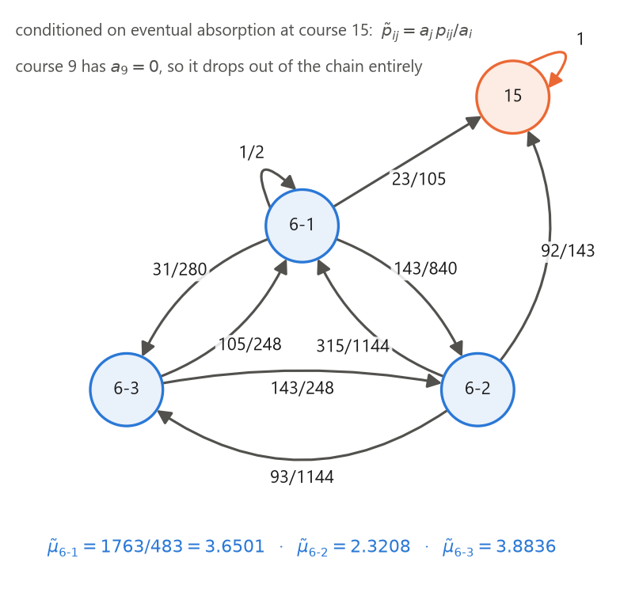
The new expected-time system. With $\tilde\mu_{15}=0$ and $\tilde\mu_i=1+\sum_j\tilde
p_{ij}\tilde\mu_j$:
$$\tilde\mu_1=1+\tfrac12\tilde\mu_1+\tfrac{143}{840}\tilde\mu_2+\tfrac{31}{280}\tilde\mu_3,$$
$$\tilde\mu_2=1+\tfrac{315}{1144}\tilde\mu_1+\tfrac{93}{1144}\tilde\mu_3,$$
$$\tilde\mu_3=1+\tfrac{105}{248}\tilde\mu_1+\tfrac{143}{248}\tilde\mu_2 .$$
Numerically the coefficients are $\tilde p_{12}=0.170238$, $\tilde p_{13}=0.110714$,
$\tilde p_{21}=0.275350$, $\tilde p_{23}=0.081294$, $\tilde p_{31}=0.423387$,
$\tilde p_{32}=0.576613$ (keys rec19_cond_p12 … rec19_cond_p32).
Eliminate, one variable at a time. Substitute the third equation into the second:
$$\tilde\mu_2=1+0.275350\tilde\mu_1+0.081294\big(1+0.423387\tilde\mu_1+0.576613\tilde\mu_2\big)$$
$$=1.081294+(0.275350+0.034418)\tilde\mu_1+0.046875\tilde\mu_2 ,$$
so $0.953125\,\tilde\mu_2=1.081294+0.309768\,\tilde\mu_1$ and
$$\tilde\mu_2=1.134472+0.325003\,\tilde\mu_1$$
(exactly $\tilde\mu_2=\tfrac{9896}{8723}+\tfrac{2835}{8723}\tilde\mu_1$; keys
rec19_e_B2, rec19_e_C2). Feed this back into the third equation:
$$\tilde\mu_3=1+0.423387\tilde\mu_1+0.576613\big(1.134472+0.325003\tilde\mu_1\big)
=1.654151+0.610788\,\tilde\mu_1$$
(exactly $\tfrac{3128}{1891}+\tfrac{1155}{1891}\tilde\mu_1$; keys rec19_e_B3,
rec19_e_C3). Now the first equation, rearranged as
$\tfrac12\tilde\mu_1=1+0.170238\tilde\mu_2+0.110714\tilde\mu_3$, i.e.
$\tilde\mu_1=2+0.340476\tilde\mu_2+0.221429\tilde\mu_3$:
$$\tilde\mu_1=2+0.340476(1.134472+0.325003\tilde\mu_1)+0.221429(1.654151+0.610788\tilde\mu_1)$$
$$=2+0.386261+0.110656\tilde\mu_1+0.366276+0.135246\tilde\mu_1
=2.752537+0.245902\,\tilde\mu_1 $$
(the four products are keys rec19_e_t1–rec19_e_t4; the constants add to
$2+0.386261+0.366276=2.752537$ and the coefficients to $0.110656+0.135246=0.245902$).
Hence $(1-0.245902)\tilde\mu_1=2.752537$, i.e. $0.754098\,\tilde\mu_1=2.752537$ — exactly
$\tfrac{3526}{1281}=\tfrac{46}{61}\tilde\mu_1$ (keys rec19_e_NUM,
rec19_e_DEN) — so
$$\tilde\mu_1=\frac{3526/1281}{46/61}=\frac{3526\cdot61}{1281\cdot46}=\frac{215086}{58926}
=\frac{1763}{483}=3.650104 ,$$
matching the recitation's $1763/483\approx3.65$. Back-substituting,
$\tilde\mu_2=1.134472+0.325003(3.650104)=2.320766$ and
$\tilde\mu_3=1.654151+0.610788(3.650104)=3.883590$ (keys rec19_mutilde1,
rec19_mutilde2, rec19_mutilde3).
Check by simulation and by the mixture identity. Simulating the original chain
$400{,}000$ times and averaging the absorption time over only those runs that ended at course 15
gives $3.644425$ (key rec19_mutilde1_mc); the runs that ended at course 9 average
$3.361638$. The two conditional means must mix back to the unconditional one:
$$a_1\tilde\mu_1+(1-a_1)\,\mathbb{E}[\text{time}\mid\text{absorbed at }9]
\approx0.570652(3.644425)+0.429348(3.361638)=3.522970\approx\frac{81}{23}=3.521739$$
from part (c) (key rec19_mu_mix_check) — agreement to simulation noise.
Interpretation. $\tilde\mu_1=3.6501>\mu_1=3.5217$: conditioning on the course-15 ending makes the journey longer. That is not a paradox. Course 9 is reached mainly through the fast direct arc $6\text{-}1\to9$ and the $6\text{-}3\to9$ arc, so short trajectories are disproportionately course-9 trajectories; removing them from the average pushes the mean up. Note also $\tilde\mu_2=2.3208<\mu_2=2.7391$ — from $6\text{-}2$, conditioning on the 15 ending boosts the direct $6\text{-}2\to15$ arc from $1/2$ to $92/143=0.6434$, which speeds things up. The direction of the effect is not uniform across states, which is precisely why you must re-solve the whole system rather than scale the answer.
Solution — (f) course 15 removed: expected days until course 9
Building the new chain (the recitation asserts the rows; here is where they come from). From $6\text{-}1$: she stays $6\text{-}1$ with probability $1/2$ and is otherwise equally likely to be any of the other options — which are now only $6\text{-}2$, $6\text{-}3$ and course 9, three of them, so each gets $\tfrac12\cdot\tfrac13=\tfrac16$. From $6\text{-}2$: the $1/2$ that went to course 15 is gone, and "her probability of entering 6-1 or 6-3 are in the same proportion as before" means the surviving pair $3/8:1/8=3:1$ must be rescaled to sum to $1$, giving $$p_{2,1}=\frac{3/8}{3/8+1/8}=\frac{3}{4},\qquad p_{2,3}=\frac{1/8}{3/8+1/8}=\frac14 .$$ From $6\text{-}3$: nothing changes, $1/4$ to course 9, $3/8$ to $6\text{-}1$, $3/8$ to $6\text{-}2$.
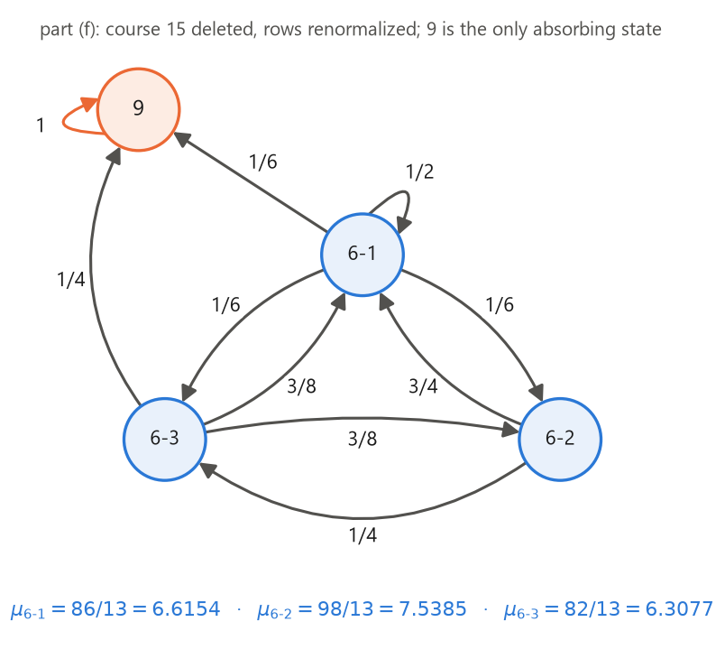
Solve. $\mu_9=0$ and
$$\mu_1=1+\tfrac12\mu_1+\tfrac16\mu_2+\tfrac16\mu_3,\qquad
\mu_2=1+\tfrac34\mu_1+\tfrac14\mu_3,\qquad
\mu_3=1+\tfrac38\mu_1+\tfrac38\mu_2 .$$
Clearing denominators (multiply by $6$, $4$, $8$ and move the $\mu_1$ term of the first across):
$$3\mu_1=6+\mu_2+\mu_3,\qquad 4\mu_2=4+3\mu_1+\mu_3,\qquad 8\mu_3=8+3\mu_1+3\mu_2 .$$
From the second, $\mu_3=4\mu_2-4-3\mu_1$. Substituting into the third:
$$8(4\mu_2-4-3\mu_1)=8+3\mu_1+3\mu_2\;\Longrightarrow\;32\mu_2-32-24\mu_1=8+3\mu_1+3\mu_2
\;\Longrightarrow\;29\mu_2=40+27\mu_1 ,$$
so $\mu_2=\dfrac{40+27\mu_1}{29}$ and
$$\mu_3=4\cdot\frac{40+27\mu_1}{29}-4-3\mu_1=\frac{160+108\mu_1-116-87\mu_1}{29}=\frac{44+21\mu_1}{29}.$$
Into the first:
$$3\mu_1=6+\frac{(40+27\mu_1)+(44+21\mu_1)}{29}=6+\frac{84+48\mu_1}{29},$$
so $87\mu_1=174+84+48\mu_1$, i.e. $39\mu_1=258$ and
$$\mu_1=\frac{258}{39}=\frac{86}{13}=6.615385 ,$$
matching the recitation. Back-substituting,
$$\mu_2=\frac{40+27\cdot\frac{86}{13}}{29}=\frac{\frac{520+2322}{13}}{29}=\frac{2842}{377}=\frac{98}{13}=7.538462,$$
$$\mu_3=\frac{44+21\cdot\frac{86}{13}}{29}=\frac{\frac{572+1806}{13}}{29}=\frac{2378}{377}=\frac{82}{13}=6.307692 .$$
(Keys rec19_f_mu1, rec19_f_mu2, rec19_f_mu3; simulation gives
$6.601265$ days.) Compare with part (c): removing course 15 nearly doubles the time to leave course
6, from $3.52$ to $6.62$ days, because half of the escape routes have been deleted while the internal
churn among $6\text{-}1$, $6\text{-}2$, $6\text{-}3$ is unchanged.
Solution — (g) courses 9 and 15 exchange: the long-run distribution
Now $p_{9,9}=p_{9,15}=p_{15,15}=p_{15,9}=\tfrac12$ while all other rows are as in Fig. 4.8. The classification (§2) changes: $\{9,15\}$ is now a single recurrent class (each is accessible from the other), and it is aperiodic because $p_{9,9}=\tfrac12>0$ gives a self-loop. The states $6\text{-}1$, $6\text{-}2$, $6\text{-}3$ remain transient — they can still reach $9$ with no way back.
Transient states. A transient state is visited only finitely often, so the fraction of time
spent there tends to $0$:
$$\pi_{6\text{-}1}=\pi_{6\text{-}2}=\pi_{6\text{-}3}=0 .$$
(The recitation leaves this implicit by saying "these are transient"; the numerical answer is zero.
Matrix powers confirm it: $(P^{400})_{6\text{-}1,\,6\text{-}1}=0.000000$, key
rec19_g_pi61.)
The recurrent class. Restricted to $\{9,15\}$ the balance equations read
$\pi_9=\tfrac12\pi_9+\tfrac12\pi_{15}$ and $\pi_9+\pi_{15}=1$; the first gives
$\tfrac12\pi_9=\tfrac12\pi_{15}$, so $\pi_9=\pi_{15}$ and
$$\pi_9=\pi_{15}=\frac12 .$$
This is the symmetry argument the recitation gives, made explicit. Numerically,
$(P^{400})_{6\text{-}1,\,9}=0.500000$ and $(P^{400})_{6\text{-}1,\,15}=0.500000$ (keys
rec19_g_pi9, rec19_g_pi15) — and, as §3 promises for a single aperiodic
recurrent class, the answer does not depend on the initial state.
Solution — (h) expected number of days until she is 6-1 again (two independent methods)
The chain. Same as Fig. 4.8 except $p_{9,6\text{-}1}=p_{15,6\text{-}1}=\tfrac18$ and $p_{9,9}=p_{15,15}=\tfrac78$. Now the whole chain is a single recurrent class (everything can reach $6\text{-}1$ and $6\text{-}1$ can reach everything) and it is aperiodic (self-loops everywhere), so the quantity asked for is the mean recurrence time $t^{*}_{6\text{-}1}$ of §4.4.
Method 1 — first passage times. Make $6\text{-}1$ absorbing and let $\mu_k=t_k$ be the
expected number of steps from $k$ to $6\text{-}1$. From course 9 the number of days is geometric with
success probability $1/8$ (each day, independently, she returns with probability $1/8$), so by the
geometric mean of G2 §3,
$$\mu_9=\frac{1}{1/8}=8,$$
and identically $\mu_{15}=8$. Written as a one-step equation, as the recitation does:
$\mu_9=\tfrac18(1)+\tfrac78(1+\mu_9)$, i.e. $\mu_9=1+\tfrac78\mu_9$, giving $\tfrac18\mu_9=1$ and
$\mu_9=8$. For the two remaining transient states, condition on tomorrow (the "$1+$" is written
inside each branch here, matching the recitation's layout; it is the same equation):
$$\mu_{6\text{-}3}=\tfrac38(1)+\tfrac38(1+\mu_{6\text{-}2})+\tfrac14(1+\mu_9)
=1+\tfrac38\mu_{6\text{-}2}+\tfrac14(8)=3+\tfrac38\mu_{6\text{-}2},$$
$$\mu_{6\text{-}2}=\tfrac38(1)+\tfrac18(1+\mu_{6\text{-}3})+\tfrac12(1+\mu_{15})
=1+\tfrac18\mu_{6\text{-}3}+\tfrac12(8)=5+\tfrac18\mu_{6\text{-}3}.$$
Substitute the first into the second:
$$\mu_{6\text{-}2}=5+\tfrac18\left(3+\tfrac38\mu_{6\text{-}2}\right)=5+\tfrac38+\tfrac{3}{64}\mu_{6\text{-}2},$$
so $\tfrac{61}{64}\mu_{6\text{-}2}=\tfrac{43}{8}$ and
$$\mu_{6\text{-}2}=\frac{43}{8}\cdot\frac{64}{61}=\frac{344}{61}=5.639344 ,\qquad
\mu_{6\text{-}3}=3+\frac38\cdot\frac{344}{61}=3+\frac{129}{61}=\frac{183+129}{61}=\frac{312}{61}=5.114754 .$$
Now the recurrence time itself. Let $R$ be the number of days until she is $6\text{-}1$ again;
condition on tomorrow's state:
$$\mathbb{E}[R]=\tfrac12(1)+\tfrac18(1+\mu_9)+\tfrac18(1+\mu_{15})+\tfrac18(1+\mu_{6\text{-}2})
+\tfrac18(1+\mu_{6\text{-}3}).$$
Evaluate term by term:
$\tfrac12(1)=\tfrac12$; $\tfrac18(1+8)=\tfrac98$ twice, contributing $\tfrac94$;
$\tfrac18\left(1+\tfrac{344}{61}\right)=\tfrac18\cdot\tfrac{405}{61}=\tfrac{405}{488}$;
$\tfrac18\left(1+\tfrac{312}{61}\right)=\tfrac18\cdot\tfrac{373}{61}=\tfrac{373}{488}$.
Summing on the denominator $488=8\cdot61$:
$$\mathbb{E}[R]=\frac{244}{488}+\frac{1098}{488}+\frac{405}{488}+\frac{373}{488}
=\frac{2120}{488}=\frac{265}{61}=4.344262$$
(keys rec19_h_mu2, rec19_h_mu3, rec19_h_ER). The recitation
quotes $265/61$ without this arithmetic.
Method 2 — steady state and $\pi_s=1/t_s^{*}$. The chain is a single aperiodic recurrent
class, so §4.4's property applies. Solving the balance equations $\pi=\pi P$ with
$\sum\pi=1$ (done in computes/g5_s4.py by a linear solve) gives
$$\pi_{6\text{-}1}=\frac{61}{265}=0.230189,\quad \pi_{6\text{-}2}=\frac{11}{265}=0.041509,\quad
\pi_{6\text{-}3}=\frac{9}{265}=0.033962,\quad \pi_{9}=\frac{79}{265}=0.298113,\quad
\pi_{15}=\frac{105}{265}=0.396226 ,$$
agreeing with the values quoted in the recitation to $2.2\times10^{-16}$ (key
rec19_h_pi_dev). Since she is $6\text{-}1$ today, the expected number of days to the
next visit is the mean recurrence time
$$t^{*}_{6\text{-}1}=\frac{1}{\pi_{6\text{-}1}}=\frac{265}{61}=4.344262$$
(key rec19_h_pi61_recip) — the same number, obtained without touching a first-passage
equation. This is the correspondence of B&T Problem 7.34, cited in the recitation's footnote.
Which method should you use? If the question asks about one state, Method 1 is usually less work (three small equations). If you already have the steady-state vector, or if the question asks about several states at once, Method 2 gives all the recurrence times for free as $1/\pi_s$.
Solution
This is a mean first passage time to $s=9$, so make $9$ absorbing and solve $t_9=0$ plus one equation per other state. The relevant rows are $6\text{-}1$: $\tfrac12$ stay, $\tfrac18$ each to $6\text{-}2$, $6\text{-}3$, $9$, $15$; $6\text{-}2$: $\tfrac38\to6\text{-}1$, $\tfrac18\to6\text{-}3$, $\tfrac12\to15$; $6\text{-}3$: $\tfrac38\to6\text{-}1$, $\tfrac38\to6\text{-}2$, $\tfrac14\to9$; $15$: $\tfrac18\to6\text{-}1$, $\tfrac78$ stay. Then $$t_1=1+\tfrac12t_1+\tfrac18t_2+\tfrac18t_3+\tfrac18t_{15},\quad t_2=1+\tfrac38t_1+\tfrac18t_3+\tfrac12t_{15},$$ $$t_3=1+\tfrac38t_1+\tfrac38t_2,\quad t_{15}=1+\tfrac18t_1+\tfrac78t_{15}\ \Longrightarrow\ \tfrac18t_{15}=1+\tfrac18t_1 \ \Longrightarrow\ t_{15}=8+t_1 .$$ The last line is the point of the exercise: a state that can leak back ($15$) contributes its own equation, and that equation couples back to $t_1$, so you may not treat it as a constant. Compare part (h), where the target was $6\text{-}1$ and $\mu_{15}$ decoupled into a clean geometric $8$.
Solve. Substitute $t_{15}=8+t_1$ everywhere. The first equation becomes
$$t_1=1+\tfrac12t_1+\tfrac18t_2+\tfrac18t_3+\tfrac18(8+t_1)=2+\tfrac58t_1+\tfrac18t_2+\tfrac18t_3 ,$$
so, multiplying by $8$, $8t_1=16+5t_1+t_2+t_3$, i.e. $3t_1=16+t_2+t_3$. The second becomes
$$t_2=1+\tfrac38t_1+\tfrac18t_3+\tfrac12(8+t_1)=5+\tfrac78t_1+\tfrac18t_3
\;\Longrightarrow\;8t_2=40+7t_1+t_3 ,$$
and the third is $8t_3=8+3t_1+3t_2$. From the second, $t_3=8t_2-40-7t_1$; substituting into the
third, $8(8t_2-40-7t_1)=8+3t_1+3t_2$, i.e. $64t_2-320-56t_1=8+3t_1+3t_2$, so
$$61t_2=328+59t_1,\qquad t_2=\frac{328+59t_1}{61},$$
and then $t_3=8\cdot\frac{328+59t_1}{61}-40-7t_1=\frac{2624+472t_1-2440-427t_1}{61}
=\frac{184+45t_1}{61}$. Feeding both into $3t_1=16+t_2+t_3$:
$$3t_1=16+\frac{(328+59t_1)+(184+45t_1)}{61}=16+\frac{512+104t_1}{61},$$
so $183t_1=976+512+104t_1$, i.e. $79t_1=1488$ and
$$t_1=\frac{1488}{79}=18.835443 .$$
Back-substituting, $t_2=\frac{328+59\cdot\frac{1488}{79}}{61}=\frac{1864}{79}=23.594937$,
$t_3=\frac{184+45\cdot\frac{1488}{79}}{61}=\frac{1336}{79}=16.911392$, and
$t_{15}=8+t_1=\frac{2120}{79}=26.835443$ (keys prac_9_t1–prac_9_t15).
About nineteen days — far longer than the $4.34$ days to return to $6\text{-}1$, because course 9 is
reached only through two thin arcs while $6\text{-}1$ is the hub of the chain.
Solution
False. The unconditional mean is a weighted average of the two conditional means, $\mu_i=a_i\tilde\mu_i^{(s)}+(1-a_i)\tilde\mu_i^{(s')}$ (total expectation theorem, G4 §1, conditioning on which absorbing state is reached). A weighted average lies between its two ingredients, so whichever conditional mean is larger, the other is smaller than $\mu_i$. rec19 gives both signs at once: from $6\text{-}1$, $\tilde\mu_1=3.6501>\mu_1=3.5217$, but from $6\text{-}2$, $\tilde\mu_2=2.3208<\mu_2=2.7391$. The correct general statement is only that $\min(\tilde\mu^{(s)},\tilde\mu^{(s')})\le\mu\le\max(\tilde\mu^{(s)},\tilde\mu^{(s')})$.
- Setup. Lump every recurrent class into one absorbing state; then every state is transient or absorbing. Fix one target $s$ before writing equations.
- Absorption probabilities (L18 slide 5, B&T §7.4): $a_s=1$; $a_i=0$ at other absorbing states; $a_i=\sum_j p_{ij}a_j$ at transient states. Unique solution because $Q^n\to0$ makes $I-Q$ invertible.
- Expected time to absorption (L18 slide 6): $\mu_i=0$ at absorbing states; $\mu_i=1+\sum_j p_{ij}\mu_j$ at transient states. The $+1$ is the step you just took.
- Mean first passage / recurrence (L18 slide 7): $t_s=0$, $t_i=1+\sum_jp_{ij}t_j$; $t_s^{*}=1+\sum_jp_{sj}t_j$; and $\pi_s=1/t_s^{*}$ for a single aperiodic recurrent class.
- Conditioning on the ending (rec19 P1(e)): $\tilde p_{ij}=a_jp_{ij}/a_i$. Rows sum to $1$ precisely because $a_i=\sum_jp_{ij}a_j$. Self-loops unchanged; states with $a_j=0$ vanish; then re-solve the $\mu$ system on the new chain.
- Gambler's ruin (B&T Example 7.11), $\rho=(1-p)/p$: $a_i=\dfrac{1-\rho^i}{1-\rho^m}$ ($p\ne\tfrac12$) or $\dfrac im$ ($p=\tfrac12$); $D_i=\dfrac{i-m\,a_i}{1-2p}$ or $i(m-i)$. Unfavorable odds $\Rightarrow a_i\to0$ as $m\to\infty$; the fair game lasts the longest.
- Spider and fly (B&T Example 7.12, $m=4$): $\mu_2=\mu_3=10/3$, $a_2=1/3$, $a_3=2/3$.
- rec19 headline numbers. $a_{6\text{-}1}=105/184=0.5707$; $\mu_{6\text{-}1}=81/23=3.5217$; $\mathbb{E}[\text{cones}]=1140/3721=0.3064$; $\tilde\mu_{6\text{-}1}=1763/483=3.6501$; $\mu^{(f)}_{6\text{-}1}=86/13=6.6154$; $\pi_9=\pi_{15}=1/2$; $\mathbb{E}[R]=265/61=4.3443=1/\pi_{6\text{-}1}$.
- Diagnostic question. Am I asked where or when? Then: is the destination fixed in advance, or am I conditioning on it after the fact? Those two answers pick the system.
§5 Synthesis: the three Markov questions, and a G3/G4 checkpoint
Sources: L16 slides 4–7 · L17 slides 2–8 · L18 slides 2–7 (headers, for the master table) · rec16 Problems 1–2 (complete) · rec17 Problems 1–3 (complete) · B&T §6.2–6.3, §7.1–7.4, and B&T Problem 6.27 (p. 337). Every number on this page is recomputed in computes/g5_s5.py — exact Fraction arithmetic for the rational answers, numpy matrix powers and linear solves for the chains, quadrature and Monte-Carlo runs as independent cross-checks — and the eight figures by computes/g5_s5_figs.py.
Three lectures on Markov chains ask, in the end, only three questions: where am I after exactly $n$ steps?, where am I in the long run?, and where do I end up, and how long does it take? Each question has its own linear system, each system comes from the same single move — condition on one transition — and almost every lost exam point comes from solving the wrong system for the question asked. §5.1 puts the three systems side by side; §5.2 collects the five mistakes that cost the most.
The rest of the section is a checkpoint on the two groups before this one. Recitations 16 and 17 are review sets: rec16 is a continuous-random-variable quiz (G3 material — piecewise PDFs, moments, derived distributions, joint densities, continuous Bayes, the normal table) and rec17 is a Poisson-process problem set (G4 material — counting over an interval, merging, splitting, random incidence). Both are solved here in full, with a pointer from every step to the G3/G4 section that built the tool. Treat them as a self-test: read the statement, close the page, solve, then open the solution.
5.1 The three question types on one page
Fix the notation once. The chain is $X_0,X_1,X_2,\dots$ taking values in the finite state space $\{1,\dots,m\}$; $p_{ij}=\mathbf{P}(X_{n+1}=j\mid X_n=i)$ is the one-step transition probability (the same for every $n$ — time homogeneity); $r_{ij}(n)=\mathbf{P}(X_n=j\mid X_0=i)$ is the $n$-step transition probability; $\pi_j$ is the steady-state probability of state $j$; $a_i$ is the probability of eventually being absorbed in a designated absorbing state given $X_0=i$; and $\mu_i$ is the expected number of transitions until absorption given $X_0=i$. The matrix $P$ has entries $p_{ij}$, and $R(n)$ has entries $r_{ij}(n)$.
| You are asked for… | Equation system | Boundary / side condition | Unknowns | Source |
|---|---|---|---|---|
| the distribution at a named finite time: $\mathbf{P}(X_n=j\mid X_0=i)$ | $r_{ij}(n)=\sum_{k=1}^{m} r_{ik}(n-1)\,p_{kj}$ (equivalently $R(n)=P^{\,n}$) | $r_{ij}(0)=1$ if $i=j$, else $0$ | $m^2$ numbers per time step; iterate $n$ times | L16 slide 4; §1; B&T §7.1 |
| the long-run fraction of time in $j$, or $\lim_n r_{ij}(n)$ | $\pi_j=\sum_{k=1}^{m}\pi_k p_{kj}$ for every $j$ (balance) | $\sum_{j=1}^m \pi_j=1$ (normalization) — never optional | $m$ numbers $\pi_1,\dots,\pi_m$ | L17 slides 5–6; §3; B&T §7.3 |
| the probability of ending in a particular absorbing state | $a_i=\sum_{j} p_{ij}a_j$ for every transient $i$ | $a_i=1$ at the target absorbing state, $a_i=0$ at every other absorbing state | one $a_i$ per transient state | L18 slide 5; §4; B&T §7.4 |
| the expected time until absorption / until first reaching $s$ | $\mu_i=1+\sum_{j}p_{ij}\mu_j$ for every non-absorbing $i$ | $\mu_i=0$ at every absorbing state (or $t_s=0$ for first passage to $s$) | one $\mu_i$ per transient state | L18 slides 6–7; §4; B&T §7.4 |
| the mean recurrence time of a recurrent state $s$ | $t^*_s=1+\sum_j p_{sj}t_j$, with $t_j$ the mean first passage times to $s$ | $t_s=0$; and $t^*_s=1/\pi_s$ when the chain has one aperiodic recurrent class | $t_1,\dots,t_m$, then $t^*_s$ | L18 slide 7; §4; B&T §7.4 |
Two structural facts explain the whole table. First, all five systems are the total probability theorem applied to one transition — forward for $n$-step ("what was the state at time $n-1$?"), backward for absorption and time ("what happened on the first step?"). Second, the $n$-step system is a recursion you run, while the other four are simultaneous linear equations you solve; that is why "after 3 steps" is arithmetic and "in the long run" is algebra.
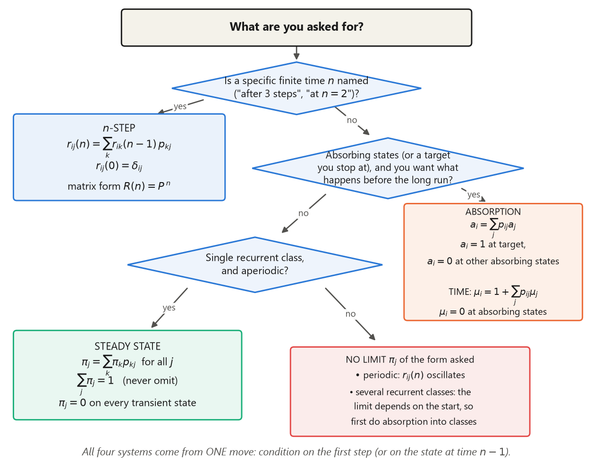
- Draw the transition diagram and check that every row of $P$ sums to 1. A row that does not sum to 1 is a modeling error, and it will silently corrupt every later answer.
- Classify the states (Fig. 5.2): which are transient, which recurrent classes exist, is each recurrent class aperiodic? This is what decides whether a steady state exists at all.
- Read the question for a time scale. A named finite $n$ $\Rightarrow$ run the $n$-step recursion. "In the long run", "eventually", "the fraction of time" $\Rightarrow$ steady state. "Ends up in", "before it reaches", "how many steps until" $\Rightarrow$ absorption/first passage.
- Write the system with its boundary condition, from the table above. Balance equations without $\sum_j\pi_j=1$ are singular; absorption equations without $a_{\text{target}}=1$ have the useless solution $a\equiv 0$.
- Solve, then sanity-check. Probabilities in $[0,1]$; $\pi_j=0$ on transient states; absorption probabilities over all absorbing states summing to 1; expected times positive and larger for states further from the absorbing set.
Solution
(i) Finite time — run the recursion. Condition on the state at time 1 (total probability
theorem plus the Markov property, L16 slide 4):
$$r_{11}(2)=\sum_{k=1}^{2}r_{1k}(1)\,p_{k1}=p_{11}p_{11}+p_{12}p_{21}
=(0.5)(0.5)+(0.5)(0.2)=0.25+0.10=0.35 .$$
The same number is the $(1,1)$ entry of $P^2$; numpy gives
$P^2=\begin{pmatrix}0.35 & 0.65\\ 0.26 & 0.74\end{pmatrix}$ and
$P^3=\begin{pmatrix}0.305 & 0.695\\ 0.278 & 0.722\end{pmatrix}$: the two rows are already
converging toward each other, which is the visible signature of a single aperiodic recurrent class.
(ii) Long run — solve the linear system. The balance equations are $$\pi_1=\pi_1 p_{11}+\pi_2 p_{21}=0.5\pi_1+0.2\pi_2,\qquad \pi_2=\pi_1 p_{12}+\pi_2 p_{22}=0.5\pi_1+0.8\pi_2 .$$ The first gives $0.5\pi_1=0.2\pi_2$, i.e. $\pi_1=0.4\pi_2$; the second gives $0.5\pi_1=0.2\pi_2$ again — the two equations are the same equation, which is exactly why normalization is needed. Substituting into $\pi_1+\pi_2=1$: $0.4\pi_2+\pi_2=1.4\pi_2=1$, so $$\pi_2=\frac{1}{1.4}=\frac{5}{7}=0.714286,\qquad \pi_1=\frac{2}{7}=0.285714 .$$ Cross-check by matrix power: $P^{100}$ has both rows equal to $(0.2857142857,\,0.7142857143)$, and so does $P^{101}$ — the limit exists and does not depend on the starting state, and it does not oscillate with the parity of $n$.
Reading the two answers together. $r_{11}(2)=0.35$ is a statement about one specific early time; $\pi_1=2/7=0.285714$ is a statement about the average over all time. The mean recurrence time of state 1 is $t_1^*=1/\pi_1=3.5$ steps and of state 2 is $t_2^*=1/\pi_2=1.4$ steps: the chain returns to the busy state more than twice as often.
The two blank fill-ins on L18 slide 3 follow immediately. With $X_0=1$, $$\mathbf{P}(X_1=1\text{ and }X_{100}=1\mid X_0=1)=p_{11}\,r_{11}(99)=(0.5)(0.28571429)=0.14285714,$$ using the Markov property to restart the chain at time 1, and $$\mathbf{P}(X_{100}=1\text{ and }X_{101}=2\mid X_0=1)=r_{11}(100)\,p_{12}=(0.28571429)(0.5)=0.14285714 .$$ Both equal $\tfrac17$, and for the same reason: by $n\approx 100$ the chain has forgotten where it started, so each is $\pi_1$ times one transition probability.
Solution
Absorption. With boundary conditions $a_4=1$, $a_5=0$, first-step analysis gives one
equation per transient state:
$$a_1=0.5a_2+0.3a_3+0.2(1),\qquad a_2=0.4a_1+0.6a_3,\qquad a_3=0.8a_2+0.2(0).$$
In matrix form this is $(I-T)a=c$ where $T$ is the $3\times3$ transient block of $P$ and
$c=(0.2,0,0)^{\mathsf T}$ collects the one-step probabilities of hitting state 4. The
numpy solve gives
$$a_1=\tfrac{13}{28}=0.46428571,\qquad a_2=\tfrac{5}{14}=0.35714286,\qquad a_3=\tfrac27=0.28571429 .$$
Check the first equation by hand: $0.5(0.35714286)+0.3(0.28571429)+0.2
=0.17857143+0.08571429+0.2=0.46428571$. ✓
Expected time. With $\mu_4=\mu_5=0$, $$\mu_1=1+0.5\mu_2+0.3\mu_3,\qquad \mu_2=1+0.4\mu_1+0.6\mu_3,\qquad \mu_3=1+0.8\mu_2,$$ i.e. $(I-T)\mu=\mathbf{1}$, giving $$\mu_1=\tfrac{465}{56}=8.30357143,\qquad \mu_2=\tfrac{265}{28}=9.46428571,\qquad \mu_3=\tfrac{60}{7}=8.57142857 .$$ State 2 is the slowest to leave, which is right: it is the only transient state with no direct arrow into an absorbing state. (Cross-check the bookkeeping: §4 Example 4.2 runs the identical system on L18 slide 6's modified chain — the $0.2$ escape at state 1 removed and folded into $p_{13}$ — and gets $\mu=(13.875,13.75,12)$. Closing off one of the two exits to absorption makes every expected time roughly $50\%$ longer, exactly as it should.)
Why balance equations are useless here. This chain has two recurrent classes, $\{4\}$ and $\{5\}$, so the matrix $P^{\mathsf T}$ has eigenvalue 1 with multiplicity 2 (verified numerically) and the balance equations plus normalization have infinitely many solutions — every vector $(0,0,0,\alpha,1-\alpha)$ works. Correspondingly $P^{200}$ has first row $(0,0,0,0.46428571,0.53571429)$: the long-run answer is the absorption answer, and it depends on the starting state. Steady state has not failed by accident; the question "what fraction of time in state 1?" simply has the answer 0 and carries no information.
Solution
$r_{13}(2)=\sum_k p_{1k}p_{k3}=(0.4)(0)+(0.6)(0.3)+(0)(0.6)=0.18$.
Balance: $\pi_1=0.4\pi_1+0.2\pi_2$ gives $0.6\pi_1=0.2\pi_2$, so $\pi_2=3\pi_1$. $\pi_3=0.3\pi_2+0.6\pi_3$ gives $0.4\pi_3=0.3\pi_2$, so $\pi_3=0.75\pi_2=2.25\pi_1$. Normalizing, $\pi_1(1+3+2.25)=6.25\pi_1=1$, hence $$\pi_1=\tfrac{4}{25}=0.16,\qquad \pi_2=\tfrac{12}{25}=0.48,\qquad \pi_3=\tfrac{9}{25}=0.36,$$ confirmed by the linear solve and by $P^{100}$, whose every row is $(0.16,0.48,0.36)$. A year is "long run", so use $\pi_3=0.36$; $r_{13}(2)=0.18$ describes only day 2. The mean recurrence time of state 3 is $1/\pi_3=2.777778$ days.
Solution
States $0$ and $3$ are absorbing. Absorption answers the first question, with $a_3=1$, $a_0=0$ and $$a_1=0.4a_0+0.6a_2=0.6a_2,\qquad a_2=0.4a_1+0.6a_3=0.4a_1+0.6 .$$ Substituting the first into the second: $a_2=0.4(0.6a_2)+0.6=0.24a_2+0.6$, so $0.76a_2=0.6$ and $a_2=\tfrac{15}{19}=0.789474$; then $a_1=0.6(15/19)=\tfrac{9}{19}=0.473684$.
Expected time answers the second, with $\mu_0=\mu_3=0$: $$\mu_1=1+0.6\mu_2,\qquad \mu_2=1+0.4\mu_1 .$$ Substituting: $\mu_1=1+0.6(1+0.4\mu_1)=1.6+0.24\mu_1$, so $0.76\mu_1=1.6$ and $\mu_1=\tfrac{40}{19}=2.105263$ rounds; then $\mu_2=1+0.4(40/19)=\tfrac{35}{19}=1.842105$. Note $\mu_2<\mu_1$: from \$2 he is one step from stopping either way.
Solution
The cut (detailed balance) equation across the boundary between $i$ and $i+1$ is $\pi_i p=\pi_{i+1}q$ (L17 slide 8), so with the load factor $\rho=p/q=0.2/0.3=0.666667$ we get $\pi_{i+1}=\rho\pi_i$ and hence $\pi_i=\pi_0\rho^{\,i}$. Normalization over the infinite state space needs the geometric series to converge, i.e. $\rho<1$ ($p<q$ — the queue must drain faster than it fills): $$\sum_{i=0}^{\infty}\pi_0\rho^{\,i}=\frac{\pi_0}{1-\rho}=1\ \Longrightarrow\ \pi_0=1-\rho=0.333333 .$$ Then $\pi_i=(1-\rho)\rho^{\,i}$ is a geometric PMF on $\{0,1,2,\dots\}$ (G2 §3), whose mean is $$\mathbb{E}[X_n]=\frac{\rho}{1-\rho}=\frac{0.666667}{0.333333}=2 .$$ Sanity: $\pi_3=(1-\rho)\rho^3=0.098765$. If $\rho\ge 1$ no steady state exists — the chain drifts to infinity and every state is transient.
5.2 Classification first, then the five gotchas
Every convergence statement in G5 is conditional on the structure of the chain, so classify before you compute. The test is purely graphical: follow the arrows.
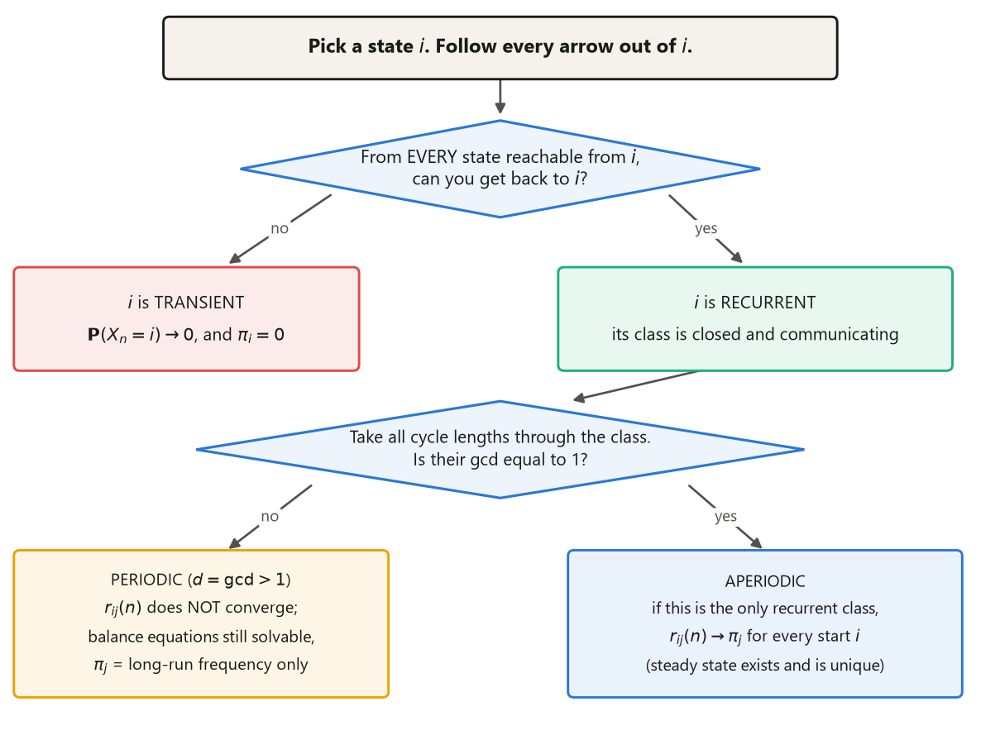
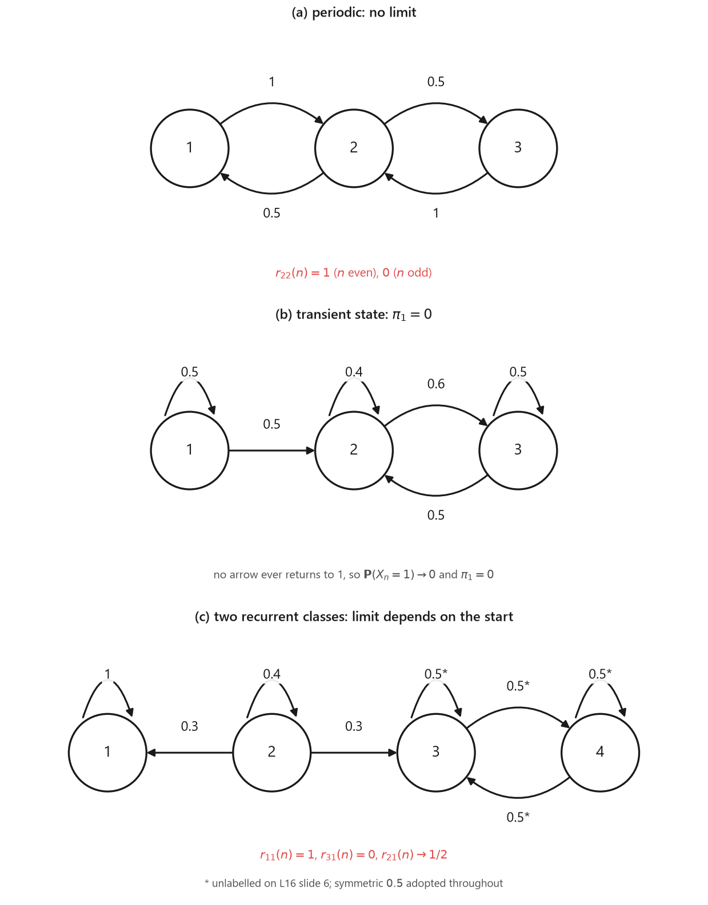
computes/g5_s5.py.
Convention: on L16 slide 6 the arcs inside the recurrent class $\{3,4\}$ of panel (c) — the two
self-loops and the two arcs between 3 and 4 — are drawn unlabelled; only node 2's three
outgoing probabilities ($0.4$, $0.3$, $0.3$) are printed. Following §1, this note adopts the
symmetric reading $p_{33}=p_{34}=p_{43}=p_{44}=0.5$ throughout; those four numbers carry an
asterisk in the panel. Nothing about the classification
depends on it, but the numerical split $\lim_n r_{23}(n)=0.25$ in Practice 5.5 does.Solution
Every state reaches every other and returns, so all four are recurrent and form a single class. The only cycle has length 4, so $d=\gcd\{4\}=4>1$: the class is periodic with period 4. Hence $r_{11}(n)=1$ when $n$ is a multiple of 4 and $0$ otherwise — the limit does not exist (Gotcha 2). The balance equations $\pi_1=\pi_4,\ \pi_2=\pi_1,\ \pi_3=\pi_2,\ \pi_4=\pi_3$ with $\sum\pi_j=1$ give $\pi_j=1/4$ for all $j$, which is the correct answer to the frequency question: the chain spends a quarter of its steps in state 1.
Solution
From state 2 the chain escapes with probability $0.3$ to state 1 and $0.3$ to state 3 on each attempt (staying with probability $0.4$), so by symmetry it is absorbed into class $\{1\}$ with probability $1/2$ and into class $\{3,4\}$ with probability $1/2$. Formally, $a_1$ (absorption into $\{1\}$ from state 2) satisfies $a=0.3(1)+0.3(0)+0.4a$, so $0.6a=0.3$ and $a=1/2$. Inside $\{3,4\}$ we use the adopted convention $p_{33}=p_{34}=p_{43}=p_{44}=0.5$ — those four arcs are unlabelled on L16 slide 6, so any symmetric pair would do here — and the sub-chain's steady state is $(1/2,1/2)$; therefore $$\lim_n r_{23}(n)=\tfrac12\cdot\tfrac12=0.25,$$ matching row 2 of $P^{200}=(0.5,0,0.25,0.25)$. Balance equations fail because with two recurrent classes the solution set is a whole line: any $(\alpha,0,\tfrac{1-\alpha}{2},\tfrac{1-\alpha}{2})$ satisfies balance and normalization, and nothing in that system knows you started at state 2.
5.3 Checkpoint I — continuous random variables (rec16)
Recitation 16 is a Quiz-2 review sheet on G3 material. Solve it before reading the solutions; each part is tagged with the G3 (or G4) section that built the tool it needs.
Solution
(a)(i) Normalization (G3 §1; B&T §3.1). A PDF integrates to 1, and the density is piecewise constant, so each piece contributes height $\times$ width: $$\int_{2}^{4}f_X(x)\,dx=\int_2^3 2c\,dx+\int_3^4 c\,dx=2c(3-2)+c(4-3)=2c+c=3c=1,$$ hence $c=\tfrac13=0.333333$. The two rectangles then have heights $2c=2/3$ and $c=1/3$ (Fig. 5.4, left).
(a)(ii) The mean (G3 §1). Split the expectation integral at the jump and use $\int x\,dx=x^2/2$: $$\mathbb{E}[X]=\int_2^3 x\cdot\tfrac23\,dx+\int_3^4 x\cdot\tfrac13\,dx =\tfrac23\cdot\frac{x^2}{2}\Big|_2^3+\tfrac13\cdot\frac{x^2}{2}\Big|_3^4 =\tfrac13(3^2-2^2)+\tfrac16(4^2-3^2).$$ Now $\tfrac13(9-4)=\tfrac53$ and $\tfrac16(16-9)=\tfrac76$, so $$\mathbb{E}[X]=\tfrac53+\tfrac76=\tfrac{10}{6}+\tfrac76=\tfrac{17}{6}=2.833333 .$$ (The printed solution writes "$=5/3+17/6$" in the middle line; $\tfrac16(4^2-3^2)=\tfrac76$, not $\tfrac{17}{6}$ — a typo, since $\tfrac53+\tfrac76$ does give the stated $\tfrac{17}{6}$.) Numerical quadrature over the same density returns $2.833333$. ✓
(a)(iii) The second moment. Same split with $\int x^2dx=x^3/3$: $$\mathbb{E}[X^2]=\tfrac23\cdot\frac{x^3}{3}\Big|_2^3+\tfrac13\cdot\frac{x^3}{3}\Big|_3^4 =\tfrac29(27-8)+\tfrac19(64-27)=\tfrac{38}{9}+\tfrac{37}{9}=\tfrac{75}{9}=\tfrac{25}{3}=8.333333 .$$ Although not asked, the variance follows from $\operatorname{var}(X)=\mathbb{E}[X^2]-(\mathbb{E}[X])^2$ (G3 §1): $$\operatorname{var}(X)=\tfrac{25}{3}-\Big(\tfrac{17}{6}\Big)^2=\tfrac{300}{36}-\tfrac{289}{36} =\tfrac{11}{36}=0.305556,\qquad \sigma_X=0.552771 .$$
(a)(iv) The derived distribution of $Y=2X+1$ (G3 §4). For a linear map $Y=aX+b$ with $a\ne0$ the density transforms as $f_Y(y)=\frac{1}{|a|}f_X\!\big(\frac{y-b}{a}\big)$. Here $a=2$, $b=1$, so $f_Y(y)=\tfrac12 f_X\!\big(\tfrac{y-1}{2}\big)$. The range maps as $x=2\mapsto y=5$ and $x=4\mapsto y=9$; the interior breakpoint $x=3$ maps to $y=7$. Therefore $$f_Y(y)=\begin{cases}\tfrac12(2c)=c=\tfrac13, & 5\le y<7,\\[2pt] \tfrac12 c=\tfrac16, & 7\le y\le 9,\\[2pt] 0,&\text{otherwise,}\end{cases}$$ which integrates to $\tfrac13(2)+\tfrac16(2)=\tfrac23+\tfrac13=1$ ✓ — twice as wide, half as tall. Consistency of moments: $\mathbb{E}[Y]=2\mathbb{E}[X]+1=\tfrac{17}{3}+1=\tfrac{20}{3}=6.666667$ and $\operatorname{var}(Y)=2^2\operatorname{var}(X)=\tfrac{11}{9}=1.222222$.
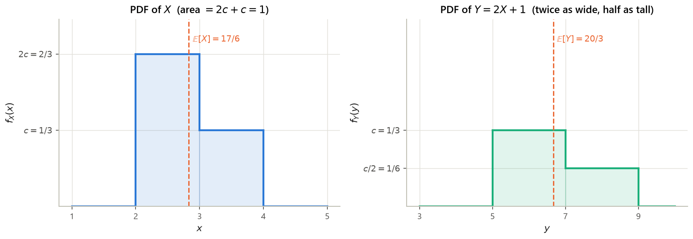
(b) $\mathbf{P}(X\le W)$ (G3 §2). Independence makes the joint density the product of the marginals, $f_{X,W}(x,w)=f_X(x)f_W(w)$, which is piecewise constant on the square $[2,4]\times[2,4]$ with two slabs: $$c_1=\tfrac23\cdot\tfrac12=\tfrac13\ \ (2\le x\le 3),\qquad c_2=\tfrac13\cdot\tfrac12=\tfrac16\ \ (3\le x\le 4).$$ Check: $c_1\cdot(1\times2)+c_2\cdot(1\times2)=\tfrac23+\tfrac13=1$ ✓. The event $\{X\le W\}$ is the part of the square above the line $x=w$, which the divider $x=3$ splits into a trapezoid inside the $c_1$ slab and a triangle inside the $c_2$ slab (Fig. 5.5). Their areas — the step the official solution states without evaluating — are $$\text{trapezoid}=\int_2^3(4-x)\,dx=\Big[4x-\tfrac{x^2}{2}\Big]_2^3=(12-4.5)-(8-2)=7.5-6=\tfrac32,$$ $$\text{triangle}=\int_3^4(4-x)\,dx=\Big[4x-\tfrac{x^2}{2}\Big]_3^4=(16-8)-(12-4.5)=8-7.5=\tfrac12 .$$ Weighting each area by its density, $$\mathbf{P}(X\le W)=c_1\cdot\tfrac32+c_2\cdot\tfrac12=\tfrac13\cdot\tfrac32+\tfrac16\cdot\tfrac12 =\tfrac12+\tfrac1{12}=\tfrac{7}{12}=0.583333 .$$ A 4-million-sample Monte-Carlo run gives $0.58337$. ✓ (The printed solution writes the two products in the order "$1/2\cdot1/6+3/2\cdot1/3$", i.e. with the areas and densities paired correctly but listed in the opposite order from the labels $c_1,c_2$ in the sentence above it.)
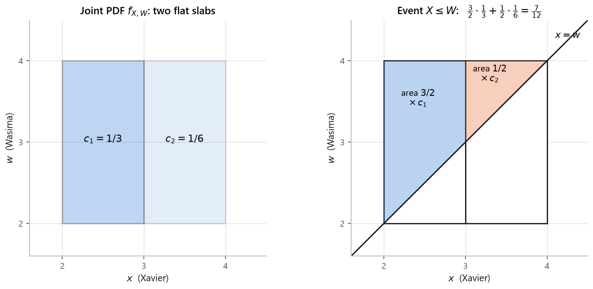
(c) The posterior of $W$ given $T=3$ (G3 §3, continuous Bayes). Bayes for densities reads $$f_{W|T}(w\mid t)=\frac{f_W(w)f_{T|W}(t\mid w)}{f_T(t)},\qquad f_T(t)=\int f_W(w)f_{T|W}(t\mid w)\,dw .$$ First the numerator at $t=3$. The conditional density is $10$ exactly when $w\le t\le w+\tfrac1{10}$; with $t=3$ this pair of inequalities says $w\le 3$ and $3\le w+0.1$, i.e. $$2.9\le w\le 3,$$ and this window sits inside $[2,4]$ where $f_W=1/2$, so the joint density is $$f_{W,T}(w,3)=f_W(w)f_{T|W}(3\mid w)=\tfrac12\cdot 10=5,\qquad 2.9\le w\le 3,$$ and 0 elsewhere. (Two slips in the printed solution: it says "$T$ and $W$ are independent", which is false — $T=W+\text{noise}$; the independence is between $W$ and the added noise. And it writes $f_{W,T}(w,3)=f_W(w)f_T(3)$, where the second factor should be the conditional $f_{T|W}(3|w)$. The numbers 10 and 1/2 are also swapped relative to which density supplies them.) Then the normalizing constant — the step whose limits the source uses without deriving: $$f_T(3)=\int_{2.9}^{3}5\,dw=5(3-2.9)=5(0.1)=\tfrac12 .$$ Dividing, $$f_{W|T}(w\mid 3)=\frac{5}{1/2}=10,\qquad 2.9\le w\le 3,$$ and 0 otherwise: given a reading of exactly 3 hours, her true time is uniform on $[2.9,\,3]$, with conditional mean $2.95$. That is intuitive — the watch adds a uniform $[0,0.1]$ overshoot, and the prior $f_W$ is flat over the relevant window, so it contributes nothing to the shape.
(d) The normal tail (G3 §1, §3). Standardize: if $N\sim\text{Normal}(\mu,\sigma^2)$ then $Z=(N-\mu)/\sigma$ is standard normal, with mean 0 and standard deviation 1 (the printed solution says "mean 1", a slip). Here $$\sigma=\sqrt{\tfrac{4}{3600}}=\tfrac{2}{60}=0.03333333,\qquad z=\frac{5/60-1/60}{2/60}=\frac{4/60}{2/60}=2 .$$ Therefore $$\mathbf{P}\!\Big(N>\tfrac5{60}\Big)=1-\mathbf{P}(Z\le 2)=1-\Phi(2)=1-0.9772=0.0228 .$$ The exact value from the error function is $1-0.9772499=0.0227501$; the table's four digits give $0.0228$. (The solutions PDF prints "$1-0.9772=0.0028$" — an arithmetic slip. Use $0.0228$.) In words: about a $2.3\%$ chance the new watch overstates her time by more than 5 minutes.
(e) The derived distribution of $S=24/W$ (G3 §4, CDF method). The map $w\mapsto 24/w$ is decreasing on $[2,4]$, so the range of $S$ runs from $24/4=6$ to $24/2=12$. Work with the CDF, because the transformation is nonlinear: $$F_S(s)=\mathbf{P}(S\le s)=\mathbf{P}\!\Big(\frac{24}{W}\le s\Big)=\mathbf{P}\!\Big(W\ge\frac{24}{s}\Big) =1-F_W\!\Big(\frac{24}{s}\Big),$$ where the inequality flips because dividing by a positive $W$ and multiplying by $s>0$ reverses the comparison. For $6\le s\le 12$ the argument $24/s$ lies in $[2,4]$, so — writing the step the source compresses — $$F_W\!\Big(\frac{24}{s}\Big)=\int_2^{24/s}\tfrac12\,dw=\tfrac12\Big(\frac{24}{s}-2\Big) =\frac{12}{s}-1,$$ hence $$F_S(s)=1-\Big(\frac{12}{s}-1\Big)=2-\frac{12}{s},\qquad 6\le s\le 12 .$$ Check the endpoints: $F_S(6)=2-2=0$ and $F_S(12)=2-1=1$ ✓ (and $F_S(8)=0.5$, so the median sponsorship is \$8000). Differentiating, $$f_S(s)=\frac{d}{ds}\Big(2-\frac{12}{s}\Big)=\frac{12}{s^2},\qquad 6\le s\le 12,$$ and 0 otherwise; numerically $\int_6^{12}12/s^2\,ds=1.0$ ✓. Its mean is $$\mathbb{E}[S]=\int_6^{12}s\cdot\frac{12}{s^2}\,ds=12\ln\frac{12}{6}=12\ln 2=8.317766 \ \ (\text{thousand dollars}),$$ which agrees with computing $\mathbb{E}[24/W]$ directly from $f_W$ by the expected-value rule (G3 §1) — as it must, and note it is not $24/\mathbb{E}[W]=24/3=8$: the two differ because $1/w$ is convex (Jensen's inequality, and $8.317766>8$).
Solution
(a)(i) Mean and variance of a random sum (G4 §2; B&T §4.5). Given $N=n$, $A$ is a sum of $n$ i.i.d. terms, so $\mathbb{E}[A\mid N]=N\,\mathbb{E}[A_i]=N$ and $\operatorname{var}(A\mid N)=N\operatorname{var}(A_i)=N$ — both random variables, functions of $N$. The law of iterated expectations gives $$\mu_a=\mathbb{E}\big[\mathbb{E}[A\mid N]\big]=\mathbb{E}[N]\,\mathbb{E}[A_i] =\mathbb{E}[N]=\frac1p,$$ and the law of total variance gives $$\sigma_a^2=\mathbb{E}\big[\operatorname{var}(A\mid N)\big]+\operatorname{var}\big(\mathbb{E}[A\mid N]\big) =\operatorname{var}(A_i)\mathbb{E}[N]+\big(\mathbb{E}[A_i]\big)^2\operatorname{var}(N) =\frac1p+\frac{1-p}{p^2}.$$ Combining over the common denominator, $\frac{p}{p^2}+\frac{1-p}{p^2}=\frac{1}{p^2}$, so $\sigma_a^2=1/p^2$. (The printed middle expression reads "$1/p+p/(1-p)$"; the geometric variance is $(1-p)/p^2$, and only with that value does the stated answer $1/p^2$ come out.) Numerically at $p=0.4$: $\mathbb{E}[N]=2.5$, $\operatorname{var}(N)=3.75$, so $\mu_a=2.5$ and $\sigma_a^2=2.5+3.75=6.25=1/0.4^2$ ✓ (a one-million-run simulation gives $2.5011$ and $6.2383$).
(a)(ii) The cross moment. Condition on $N$ again: $$c_{ab}=\mathbb{E}[AB]=\mathbb{E}\big[\mathbb{E}[AB\mid N]\big].$$ Given $N=n$, the two sums involve disjoint families $\{A_i\}$ and $\{B_i\}$, and the whole family is independent, so $A$ and $B$ are conditionally independent given $N$ — this is the step the source uses silently. Hence $$\mathbb{E}[AB\mid N=n]=\mathbb{E}[A\mid N=n]\,\mathbb{E}[B\mid N=n] =\big(n\mathbb{E}[A_i]\big)\big(n\mathbb{E}[B_i]\big)=n^2 .$$ Averaging over $N$ and using $\mathbb{E}[N^2]=\operatorname{var}(N)+(\mathbb{E}[N])^2$ (G2 §3): $$c_{ab}=\mathbb{E}[N^2]\,\mathbb{E}[A_i]\mathbb{E}[B_i]=\mathbb{E}[N^2] =\frac{1-p}{p^2}+\frac{1}{p^2}=\frac{2-p}{p^2}.$$ At $p=0.4$ this is $10.0$ (simulation: $9.9867$). The covariance is then $$\operatorname{cov}(A,B)=c_{ab}-\mu_a^2=\frac{2-p}{p^2}-\frac{1}{p^2}=\frac{1-p}{p^2} =\operatorname{var}(N)=3.75,$$ so the correlation coefficient is $\operatorname{cov}/(\sigma_a\sigma_b)=3.75/6.25=0.6$. Reading it: $A$ and $B$ share no individual terms, yet they are positively correlated solely because they share the count $N$ — all of the covariance is $\operatorname{var}(N)$.
(b)(i) The mixture PDF (G4 §1; G3 §3). Given $N=1$, $A=A_1\sim\text{Normal}(1,1)$. Given $N=2$, $A=A_1+A_2$ is a sum of two independent normals, hence normal with mean $1+1=2$ and variance $1+1=2$. The total probability theorem for densities then gives $$f_A(a)=f_{A|N=1}(a)\,p_N(1)+f_{A|N=2}(a)\,p_N(2) =\frac13\cdot\frac{1}{\sqrt{2\pi}}e^{-(a-1)^2/2} +\frac23\cdot\frac{1}{\sqrt{4\pi}}e^{-(a-2)^2/4},$$ using $\frac{1}{\sqrt{2\pi\sigma^2}}e^{-(a-\mu)^2/(2\sigma^2)}$ with $(\mu,\sigma^2)=(1,1)$ and $(2,2)$. This is a mixture, not a normal: numerically it integrates to $1.0$, its mean is $\tfrac13(1)+\tfrac23(2)=1.666667$ and its variance is $\tfrac13(1+1^2)+\tfrac23(2+2^2)-(5/3)^2=4.666667-2.777778=1.888889$.
(b)(ii) The posterior on the count (G3 §3, Bayes with a discrete unknown). Use the $\delta$-window argument: for small $\delta>0$, $$\mathbf{P}(N=1\mid a\le A\le a+\delta) =\frac{\mathbf{P}(N=1)\,\mathbf{P}(a\le A\le a+\delta\mid N=1)}{\mathbf{P}(a\le A\le a+\delta)} \approx\frac{p_N(1)f_{A|N=1}(a)\,\delta}{f_A(a)\,\delta},$$ and the $\delta$'s cancel as $\delta\to0$, leaving $$\mathbf{P}(N=1\mid A=a)=\frac{p_N(1)f_{A|N=1}(a)}{f_A(a)} =\frac{\frac{1}{3\sqrt{2\pi}}e^{-(a-1)^2/2}} {\frac{1}{3\sqrt{2\pi}}e^{-(a-1)^2/2}+\frac{2}{3\sqrt{4\pi}}e^{-(a-2)^2/4}} .$$ (The printed intermediate line "the joint is $P(A=a)P(N=1)\delta=f_A(a)p_N(1)$" is loose: the joint is $f_{A|N=1}(a)p_N(1)\delta$, which is what actually appears in the final numerator. Its reference to "part (a)" should read "part (b)(i)".) Evaluating: at $a=0$ the posterior is $0.538282$, at $a=2$ it is $0.300152$, at $a=4$ it is $0.020906$, against a prior of $1/3=0.333333$. A small observed sum is evidence for one term; a large one is strong evidence for two.
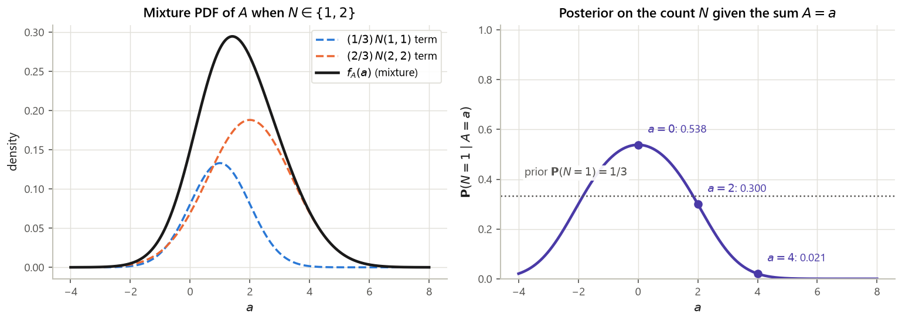
(c) Conditional independence (G4 §1; G1 §3). Yes, the two are equal. Both sides are random variables. $A$ and $B$ are not independent — they share $N$ — but given $N$ they are built from disjoint independent families, so $$f_{A,B|N}(a,b\mid n)=f_{A|N}(a\mid n)\,f_{B|N}(b\mid n).$$ Therefore $$f_{A|B,N}(a\mid b,n)=\frac{f_{A,B,N}(a,b,n)}{f_{B,N}(b,n)} =\frac{f_{A,B|N}(a,b\mid n)\,p_N(n)}{f_{B|N}(b\mid n)\,p_N(n)} =\frac{f_{A|N}(a\mid n)f_{B|N}(b\mid n)}{f_{B|N}(b\mid n)}=f_{A|N}(a\mid n).$$ Equal conditional densities give equal conditional means, $\int a\,f_{A|B,N}(a\mid b,n)\,da=\int a\,f_{A|N}(a\mid n)\,da$, so $\mathbb{E}[A\mid B,N]=\mathbb{E}[A\mid N]$. In words: once you know how many terms there are, seeing $B$ tells you nothing more about $A$.
Solution
Normalization: $3k(1)+k(2)=5k=1$, so $k=\tfrac15$. Then $$\mathbb{E}[X]=\tfrac35\cdot\frac{x^2}{2}\Big|_0^1+\tfrac15\cdot\frac{x^2}{2}\Big|_1^3 =\tfrac35\cdot\tfrac12+\tfrac1{10}(9-1)=\tfrac3{10}+\tfrac8{10}=\tfrac{11}{10}=1.1,$$ $$\mathbb{E}[X^2]=\tfrac35\cdot\frac{x^3}{3}\Big|_0^1+\tfrac15\cdot\frac{x^3}{3}\Big|_1^3 =\tfrac15+\tfrac1{15}(27-1)=\tfrac{3}{15}+\tfrac{26}{15}=\tfrac{29}{15},$$ $$\operatorname{var}(X)=\tfrac{29}{15}-\Big(\tfrac{11}{10}\Big)^2=\tfrac{217}{300}=0.723333 .$$
Solution
$w\mapsto w^2$ is increasing on $[2,4]$, so $V$ ranges over $[4,16]$ and for $4\le v\le 16$ $$F_V(v)=\mathbf{P}(W^2\le v)=\mathbf{P}(W\le\sqrt v)=\int_2^{\sqrt v}\tfrac12\,dw =\tfrac12(\sqrt v-2)=\tfrac{\sqrt v}{2}-1 .$$ Differentiating, $f_V(v)=\frac{d}{dv}\big(\tfrac12 v^{1/2}-1\big)=\frac{1}{4\sqrt v}$ for $4\le v\le 16$, and 0 otherwise. Check: $\int_4^{16}\frac{dv}{4\sqrt v}=\big[\tfrac12\sqrt v\big]_4^{16}=\tfrac12(4-2)=1$ ✓. Endpoints: $F_V(4)=0$, $F_V(16)=1$ ✓. And $\mathbb{E}[V]=\int_4^{16}\frac{\sqrt v}{4}\,dv=9.333333$, which is $\mathbb{E}[W^2]=\tfrac{28}{3}$ computed the other way ✓.
5.4 Checkpoint II — the Poisson process (rec17)
Recitation 17 reviews G4: counting arrivals over an interval, exponential interarrivals and memorylessness, merging, splitting, and random incidence. The three problems below are solved in full; Problem 3's solution is missing from the handout entirely (it is delegated to the textbook), so it is derived here from scratch.
Solution
Throughout, the numerical illustration uses $\lambda_c=1.5$/min, $\lambda_s=0.5$/min, $T=4$ min, $p_c=0.6$, $p_s=0.3$.
(a) Counting over an interval (G4 §3; B&T §6.2). The number of arrivals of a Poisson process of rate $\lambda_c$ in an interval of length $T$ is Poisson with parameter (mean number, not a time — the handout misnames it "average arrival time") $\mu=\lambda_c T$: $$p_K(k)=\frac{(\lambda_c T)^k e^{-\lambda_c T}}{k!},\qquad k=0,1,2,\dots$$ With $\lambda_c T=(1.5)(4)=6$: $p_K(0)=0.002479$, $p_K(1)=0.014873$, $p_K(2)=0.044618$, $p_K(3)=0.089235$, $p_K(6)=0.160623$, $p_K(10)=0.041303$; the terms sum to $1.0$ ✓. The PMF is maximized at $k=5$ and $k=6$ together — $p_K(5)=p_K(6)=0.160623$ — the tie that always occurs when a Poisson mean is an integer, since $p_K(k)/p_K(k-1)=\mu/k$ equals 1 exactly at $k=\mu$.
(b)(i) Which stream produced this answer? (G4 §4, merging/splitting.) The handout states $\lambda_c/(\lambda_c+\lambda_s)$ with no derivation; here are two. Competing exponentials: let $X_c\sim\text{Exp}(\lambda_c)$ and $X_s\sim\text{Exp}(\lambda_s)$ be the times to the next conscious and subconscious response, independent. Then $$\mathbf{P}(X_c<X_s)=\int_0^\infty \mathbf{P}(X_s>t)\,f_{X_c}(t)\,dt =\int_0^\infty e^{-\lambda_s t}\lambda_c e^{-\lambda_c t}\,dt =\lambda_c\int_0^\infty e^{-(\lambda_c+\lambda_s)t}\,dt =\frac{\lambda_c}{\lambda_c+\lambda_s},$$ where the first equality conditions on the value $t$ of $X_c$ and the last evaluates $\int_0^\infty e^{-at}dt=1/a$. Merging: the superposition of the two independent Poisson processes is Poisson of rate $\lambda_c+\lambda_s$, and each arrival of the merged process comes from the conscious stream independently with probability $\lambda_c/(\lambda_c+\lambda_s)$ — which is also why "pick any question she answered" is well defined. Numerically $1.5/2.0=0.75$.
(b)(ii) Multiply by the conditional probability of correctness, using the multiplication rule (G1 §2): $$\mathbf{P}(\text{conscious and correct})=\frac{\lambda_c}{\lambda_c+\lambda_s}\,p_c =(0.75)(0.6)=0.45 .$$ (For contrast, her overall correctness rate is $\frac{\lambda_c}{\lambda_c+\lambda_s}p_c+\frac{\lambda_s}{\lambda_c+\lambda_s}p_s =0.45+0.25\cdot0.3=0.525$.)
(c) Two counts at once. The two processes are independent, so the counts in the same interval are independent random variables and the joint PMF factors: $$\mathbf{P}(r\text{ conscious},\,s\text{ subconscious in }T) =\frac{(\lambda_c T)^r e^{-\lambda_c T}}{r!}\cdot\frac{(\lambda_s T)^s e^{-\lambda_s T}}{s!}.$$ With $r=3$, $s=2$: $(0.089235)(0.270671)=0.024153$. Note this is not the same as splitting a single merged process — here the two streams are given separately, so no binomial factor appears.
(d) Time to the first conscious response preceded by a subconscious one (G3 §4 convolution; G4 §3 memorylessness). Decompose the wait into two legs: $$X=X_s+X_c,$$ where $X_s$ is the time from the start to the first subconscious response, and $X_c$ is the time from that instant to the next conscious response. $X_s\sim\text{Exp}(\lambda_s)$ by definition of the subconscious process. For $X_c$ the source gives no justification, and one is needed: at the (random) instant of the first subconscious response, the conscious process — being independent of the subconscious one — starts afresh, so the remaining time to its next arrival is $\text{Exp}(\lambda_c)$ and independent of $X_s$. That is the fresh-start/memoryless property, and it is exactly what makes the two legs independent.
The density of a sum of independent random variables is the convolution (G3 §4): $$f_X(x)=\int_{-\infty}^{\infty}f_{X_s}(x-x_c)f_{X_c}(x_c)\,dx_c .$$ The integrand is nonzero only where both densities are: $x_c\ge0$ and $x-x_c\ge0$, i.e. $0\le x_c\le x$ — the limits the source only gestures at. So for $x\ge 0$ $$f_X(x)=\int_0^{x}\lambda_s e^{-\lambda_s(x-x_c)}\,\lambda_c e^{-\lambda_c x_c}\,dx_c =\lambda_s\lambda_c e^{-\lambda_s x}\int_0^x e^{(\lambda_s-\lambda_c)x_c}\,dx_c .$$ Since $\lambda_s\ne\lambda_c$ the inner integral is a plain exponential integral, $$\int_0^x e^{(\lambda_s-\lambda_c)x_c}\,dx_c =\left[\frac{e^{(\lambda_s-\lambda_c)x_c}}{\lambda_s-\lambda_c}\right]_0^x =\frac{e^{(\lambda_s-\lambda_c)x}-1}{\lambda_s-\lambda_c},$$ so $$f_X(x)=\frac{\lambda_s\lambda_c}{\lambda_s-\lambda_c}e^{-\lambda_s x} \Big(e^{(\lambda_s-\lambda_c)x}-1\Big) =\frac{\lambda_s\lambda_c}{\lambda_s-\lambda_c}\Big(e^{-\lambda_c x}-e^{-\lambda_s x}\Big), \qquad x\ge0,$$ distributing $e^{-\lambda_s x}$ over the bracket in the last step. This is the hypoexponential density; it integrates to $1.0$ numerically, and its mean is $\mathbb{E}[X]=\frac{1}{\lambda_s}+\frac{1}{\lambda_c}=2+0.666667=2.666667$ minutes (simulation: $2.6671$), by linearity, with $\operatorname{var}(X)=\frac1{\lambda_s^2}+\frac1{\lambda_c^2}=4.444444$ by independence. Unlike an exponential it is 0 at $x=0$ and peaks at $x=\ln(\lambda_s/\lambda_c)/(\lambda_s-\lambda_c)=1.098612$: you must wait for two things, so an instant response is impossible. As a check, $\mathbf{P}(X\le2)$ from the closed-form CDF is $0.47307$ against $0.47311$ from an 8-million-sample simulation.
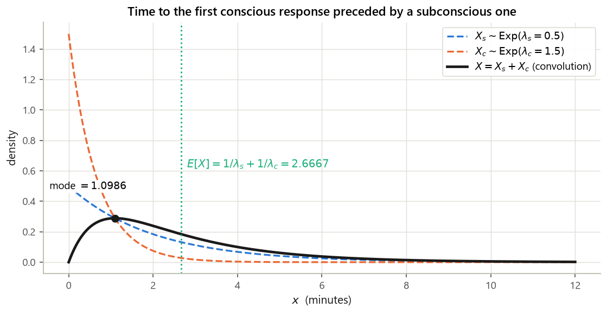
Solution
Numerical illustration: $\lambda=6$ intersections/hour, $p=0.2$, $\mu=3$ calls/hour, so the accident-report rate is $p\lambda=1.2$/hour.
(a) Geometric (G2 §3). Each intersection is an independent Bernoulli trial with success probability $p$, and $N$ counts trials up to and including the first success: $$p_N(n)=(1-p)^{n-1}p,\qquad n=1,2,\dots$$ so $p_N(1)=0.2$, $p_N(2)=0.16$, $p_N(5)=0.08192$, with $\mathbb{E}[N]=1/p=5$ intersections and $\operatorname{var}(N)=(1-p)/p^2=20$.
(b) Thinning, derived rather than asserted (G4 §4; B&T §6.3). Intersections arrive as a Poisson process of rate $\lambda$ (i.i.d. exponential gaps is the definition of a Poisson process), and each is independently kept with probability $p$. Claim: the kept arrivals form a Poisson process of rate $p\lambda$. Proof for the count $M_\tau$ in an interval of length $\tau$: condition on the number $N_\tau$ of intersections in the interval, which is Poisson$(\lambda\tau)$, and note that given $N_\tau=n$ the number reported is Binomial$(n,p)$: $$\mathbf{P}(M_\tau=k)=\sum_{n\ge k}e^{-\lambda\tau}\frac{(\lambda\tau)^n}{n!}\binom{n}{k}p^k(1-p)^{n-k} =e^{-\lambda\tau}\frac{(p\lambda\tau)^k}{k!}\sum_{n\ge k}\frac{\big((1-p)\lambda\tau\big)^{n-k}}{(n-k)!},$$ where we split $\frac{(\lambda\tau)^n}{n!}\binom{n}{k}=\frac{(\lambda\tau)^n}{k!(n-k)!}$ and pulled out $k$ factors of $p\lambda\tau$. The remaining sum is $e^{(1-p)\lambda\tau}$, so $$\mathbf{P}(M_\tau=k)=e^{-\lambda\tau}e^{(1-p)\lambda\tau}\frac{(p\lambda\tau)^k}{k!} =e^{-p\lambda\tau}\frac{(p\lambda\tau)^k}{k!},$$ i.e. Poisson$(p\lambda\tau)$. Consequently the gaps between reports are exponential with parameter $p\lambda$: $$f_Q(q)=p\lambda\,e^{-p\lambda q},\qquad q\ge0,$$ with $f_Q(0)=1.2$, mean $1/(p\lambda)=0.833333$ hours ($50$ minutes) and $\mathbf{P}(Q>1)=e^{-1.2}=0.301194$.
(c) Counting the thinned process. By part (b) the reports are Poisson at rate $p\lambda$, so over $\tau=2$ hours the mean is $2p\lambda=2.4$ and $$p_M(m)=e^{-2p\lambda}\frac{(2p\lambda)^m}{m!},\qquad m=0,1,2,\dots$$ giving $p_M(0)=0.090718$, $p_M(1)=0.217723$, $p_M(2)=0.261268$, $p_M(3)=0.209014$.
(d) A race between two Poisson streams (G4 §4). Merge the radio calls (rate $\mu$) and the accident reports (rate $p\lambda$) into one Poisson process of rate $\mu+p\lambda=4.2$/hour. Each arrival of the merged process is a radio call independently with probability $$q=\frac{\mu}{\mu+p\lambda}=\frac{3}{4.2}=0.714286 .$$ Reading the merged arrivals in order after a radio call, $K$ is the number of "accident" outcomes before the next "radio call" outcome — a shifted geometric random variable (G2 §3): $$p_K(k)=\Big(\frac{p\lambda}{\mu+p\lambda}\Big)^{k}\Big(\frac{\mu}{\mu+p\lambda}\Big), \qquad k=0,1,2,\dots$$ so $p_K(0)=0.714286$, $p_K(1)=0.204082$, $p_K(2)=0.058309$, $p_K(3)=0.01666$, and $\mathbb{E}[K]=(1-q)/q=p\lambda/\mu=0.4$ accidents per radio-call gap — which is just (rate ratio) $\times$ (mean gap), as it must be.
(e) Random incidence in the radio-call process (G4 §4; B&T §6.2). Fix an observation instant $t$ far into the shift. Looking forward, the time to the next call is $\text{Exp}(\mu)$ by memorylessness: the elapsed time since the last call carries no information about the remaining wait. Looking backward, the time since the last call is also $\text{Exp}(\mu)$ — the source asserts this, so here is the one-line proof. Writing $U$ for the time of the last call before $t$, the event $\{t-U>x\}$ is exactly the event that no call arrived in the interval $[t-x,\,t]$, whose probability is the Poisson probability of zero arrivals in an interval of length $x$: $$\mathbf{P}(t-U>x)=e^{-\mu x}\frac{(\mu x)^0}{0!}=e^{-\mu x},\qquad x\ge0,$$ which is the exponential tail with parameter $\mu$. (This needs $t$ far enough into the shift that a previous call is essentially certain — the "long after" in the problem statement.) The two pieces are independent (disjoint intervals), so $$W=X_1+X_2,\qquad X_1,X_2\ \text{i.i.d. } \text{Exp}(\mu),$$ which is Erlang of order 2: $$f_W(w)=\mu^2 w\,e^{-\mu w},\qquad w\ge 0$$ (the source omits the range). Its mean is $2/\mu=0.666667$ hours and its variance $2/\mu^2=0.222222$; the mode is at $1/\mu=0.333333$. The paradox worth naming: an ordinary gap between calls averages $1/\mu=0.333333$ hours, but the gap you land in averages twice that — simulation over a 4000-hour record gives an ordinary mean gap of $0.3363$ and an observed (containing) gap of $0.6756$. Longer intervals are easier to land in.
Solution
Setup. An Erlang random variable of order 2 with parameter $\lambda$ is the sum of two independent $\text{Exp}(\lambda)$ variables, with density $f(\ell)=\lambda^2\ell e^{-\lambda\ell}$ for $\ell\ge0$ and mean $2/\lambda$ (G4 §4). So the arrival process here is exactly a Poisson process of rate $\lambda$ in which we keep only every second arrival.
Argument 1 — the book's (B&T Problem 6.27). Let $Y_k$ be the $k$th arrival of the underlying Poisson process and let the Erlang arrivals be the even-numbered ones. Let $K$ be the index with $Y_K\le t<Y_{K+1}$. By random incidence in a Poisson process (Example 5.6(e) above), the Poisson interval containing $t$, namely $Y_{K+1}-Y_K$, is Erlang of order 2. Now there are two cases. If $K$ is even, the Erlang interarrival interval containing $t$ is $[Y_K,Y_{K+2}]$, so its length is $(Y_{K+1}-Y_K)+(Y_{K+2}-Y_{K+1})$; at time $Y_{K+1}$ the Poisson process starts afresh, so $Y_{K+2}-Y_{K+1}\sim\text{Exp}(\lambda)$ independently of the first piece. Hence, conditioned on $K$ even, the containing interval is Erlang(2) $+$ Exp $=$ Erlang of order 3. If $K$ is odd the interval is $[Y_{K-1},Y_{K+1}]$ and the symmetric argument (looking backward, where the process is again Poisson) gives the same conditional law. Since the conditional density is Erlang of order 3 in both cases, the unconditional density is Erlang of order 3: $$f_L(\ell)=\frac{\lambda^3\ell^2 e^{-\lambda\ell}}{2},\qquad \ell\ge0 .$$
Argument 2 — length-biasing, which explains why. Random incidence samples intervals in proportion to their length: an interval of length $\ell$ covers a fraction $\ell/\mathbb{E}[L]$ of the time axis, so $$f_{L}(\ell)=\frac{\ell\,f(\ell)}{\mathbb{E}[\text{interarrival}]} =\frac{\ell\cdot\lambda^2\ell e^{-\lambda\ell}}{2/\lambda} =\frac{\lambda^3\ell^2e^{-\lambda\ell}}{2},$$ the same answer. (Numerically, $\int_0^\infty|f_L(\ell)-\ell f(\ell)/(2/\lambda)|\,d\ell=0$ to machine precision, and both densities integrate to $1.0$.) This also reproduces Example 5.6(e): length-biasing an $\text{Exp}(\mu)$ interarrival gives $\mu\,\ell\cdot\mu e^{-\mu\ell}=\mu^2\ell e^{-\mu\ell}$, Erlang of order 2. ✓
Reading the numbers ($\lambda=1$). A typical interval has mean $2/\lambda=2$ and variance $2/\lambda^2=2$; the interval you land in has mean $3/\lambda=3$ and variance $3/\lambda^2=3$ — a $50\%$ inflation, mode moved from $1/\lambda$ to $2/\lambda$. A simulation that drops 500 000 observers into a long Erlang-2 record measures a containing-interval mean of $3.0019$ and variance $3.0037$, against an ordinary interval mean of $1.9995$. ✓ The general pattern: length-biasing adds one "stage" to an Erlang, and the inflation factor $\mathbb{E}[L^2]/\mathbb{E}[L]^2=1+\operatorname{var}/\mathbb{E}[L]^2$ shrinks as the interarrival distribution becomes more regular — for deterministic gaps there is no paradox at all.
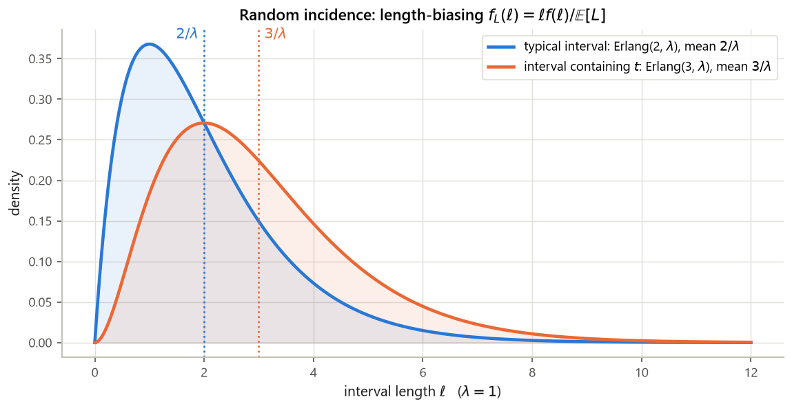
Solution
Splitting (G4 §4): urgent emails are Poisson at rate $(0.25)(10)=2.5$/hour. Over $\tau=0.5$ hours the mean is $1.25$, so $$\mathbf{P}(2)=e^{-1.25}\frac{1.25^2}{2!}=0.223832 .$$ Each arrival is urgent independently with probability $0.25$, so the first one is urgent with probability $0.25$. Mean gap $=1/2.5=0.4$ hours $=24$ minutes.
Solution
You land in an interval chosen with probability proportional to its length, so the interval you observe has the length-biased density $\ell f(\ell)/\mathbb{E}[L]=\mu^2\ell e^{-\mu\ell}$, an Erlang of order 2 with mean $2/\mu$ — long gaps are over-represented exactly in proportion to how long they are (rec17 P2(e)). With deterministic gaps of length $1/\mu$ every interval has the same length, length-biasing does nothing, and the containing interval has mean $1/\mu$; your expected wait is then $1/(2\mu)$, half a gap. Randomness in the gaps, not their mean, creates the paradox.
5.5 Where this goes next: the bridge to G6
Every G5 answer of the "long run" kind — $\pi_j$, the frequency interpretation $\pi_kp_{kj}$ for transitions, $t_s^*=1/\pi_s$ — is a statement about an average over time of a dependent sequence. The same is true of the checkpoint results in this section read the other way: $\mathbb{E}[X]=17/6$ and $\operatorname{var}(X)=11/36$ describe one draw, but what you actually observe in a data set is the sample mean of many draws.
G6 (limit theorems) answers what happens to those averages as $n$ grows: the weak law of large numbers says the sample mean of i.i.d. variables concentrates at $\mathbb{E}[X]$, with Chebyshev's inequality giving the crude rate $\operatorname{var}(X)/n$; the central limit theorem says the fluctuation around the mean, rescaled by $\sqrt n$, is normal — which is why the normal table used in rec16 P1(d) turns up in problems that mention no normal random variable at all. Two connections to keep in view. First, the steady-state vector $\pi$ is exactly the long-run average occupancy, so the law of large numbers is the theorem hiding behind the frequency interpretation of L17 slide 6 (this is why $\pi$ still has meaning for periodic chains, where the limit of $r_{ij}(n)$ does not exist). Second, the Poisson process of G4 and this checkpoint is the canonical setting where "many small independent contributions" produces a clean limit law — the same mechanism the central limit theorem formalizes.
- Finite time: $r_{ij}(n)=\sum_k r_{ik}(n-1)p_{kj}$, $r_{ij}(0)=\delta_{ij}$; matrix form $R(n)=P^n$. Path probabilities multiply: $\mathbf{P}(X_1=a,X_2=b\mid X_0=i)=p_{ia}p_{ab}$.
- Long run: $\pi_j=\sum_k\pi_kp_{kj}$ with $\sum_j\pi_j=1$; valid limit $\lim_n r_{ij}(n)=\pi_j$ only for a single aperiodic recurrent class. $\pi_j=0$ on transient states; $t^*_j=1/\pi_j$. Two-state example: $\pi=(2/7,5/7)=(0.285714,0.714286)$.
- Absorption: $a_i=\sum_j p_{ij}a_j$ with $a=1$ at the target and $0$ at other absorbing states; time: $\mu_i=1+\sum_jp_{ij}\mu_j$ with $\mu=0$ at absorbing states. Example 5.2: $a=(0.46428571,0.35714286,0.28571429)$, $\mu=(8.30357143,9.46428571,8.57142857)$.
- Five gotchas: Markov means the state carries the past; periodic $\Rightarrow$ no limit (but balance still solvable); balance needs normalization; transient $\Rightarrow \pi=0$; several recurrent classes $\Rightarrow$ absorption first.
- rec16 (G3 tools): normalize a piecewise PDF by area ($c=1/3$); moments by splitting the integral ($\mathbb{E}[X]=17/6$, $\mathbb{E}[X^2]=25/3$, $\operatorname{var}=11/36$); linear map $f_Y(y)=\frac1{|a|}f_X(\frac{y-b}{a})$; joint = product under independence, so probabilities are weighted areas ($\mathbf{P}(X\le W)=7/12$); continuous Bayes gives a uniform posterior on $[2.9,3]$; standardize for the normal table ($1-\Phi(2)=0.0228$); CDF method for nonlinear maps ($f_S(s)=12/s^2$ on $[6,12]$); random sums via iterated expectations ($\mathbb{E}[A]=1/p$, $\operatorname{var}(A)=1/p^2$, $\mathbb{E}[AB]=(2-p)/p^2$).
- rec17 (G4 tools): Poisson count over $T$ has parameter $\lambda T$; merging gives rate $\lambda_c+\lambda_s$ with attribution probability $\lambda_c/(\lambda_c+\lambda_s)$; splitting with probability $p$ gives rate $p\lambda$ (derived, not asserted); a race between merged streams gives a shifted geometric count; random incidence length-biases, turning Exp into Erlang(2) and Erlang(2) into Erlang(3) — means $1/\mu\to2/\mu$ and $2/\lambda\to3/\lambda$.